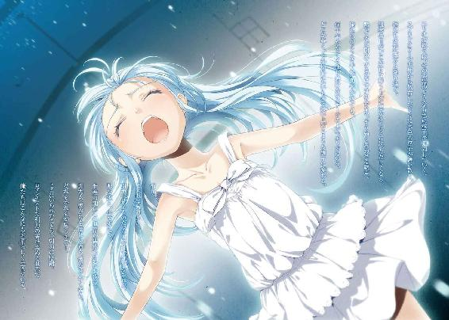
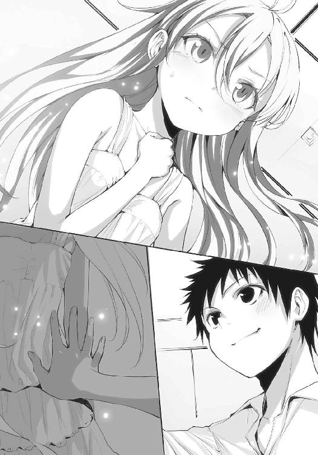

| 電波女と青春男(6)<電波女と青春男> (電撃文庫) | |
| 入間 人間 | |
| (2012) | |


本書（電子版）に掲載されているコンテンツ（ソフトウェア／プログラム／データ／情報を含む）の著作権およびその他の権利は、すべて株式会社アスキー・メディアワークスおよび正当な権利を有する第三者に帰属しています。
法律の定めがある場合または権利者の明示的な承諾がある場合を除き、これらのコンテンツを複製・転載、改変・編集、翻案・翻訳、放送・出版、公衆送信（送信可能化を含む）・再配信、販売・頒布、貸与等に使用することはできません。
......そのような経緯もあり、今週取り上げるのはなんと言っても、週末に迫った当校の文化祭です。昨年は地域の特色を全面に押し出した文化祭を開催し、地元の方々からの評価を頂戴いたしました。しかし一方で、あくまでも文化祭自体が小粒であるとの印象は、生徒間で多く挙げられた声でもあります。私、新聞部の奥居メアリーも一参加者としての体験を踏まえまして、同様の感想を持ちました。世間全体として文化祭への関心、盛り上がりが下火傾向にあるので、仕方ないと感じる側面もありますが半面、思い出に残る文化祭を期待してしまうのも当事者だからこそでしょう。そんな今年の文化祭、テーマはズバリ『引力』です。
昨年の『飛翔』と比べて若干、意味合いが素直に伝わりづらいテーマを打ちだした文化祭実行委員長に直接、その真意をお尋ねすると『宇宙的な感じがするでしょ』とのことです。
地域に根ざした文化祭、という根底は昨年を受け継いでいるようですね。
テーマである引力になぞらえた文化祭実行委員長考案の企画として当日、当校の生徒には登校してきた順に各一本ずつ『糸』が配られます。この糸はそれぞれに模様があり、同じ模様に染められた糸が他の生徒にも一つだけ配られています。その生徒を探して、小指をその糸で結び合うというのが、人と人の間にある『引力』をテーマにした今年の文化祭の目玉企画です。また生徒が招待券を渡して招いたゲストにも、糸が配られる予定です。振るってご参加ください、とのことです。
見事、ペアを発見して同じ模様の糸で結ばれたカップルには午後二時から体育館で予定されているイベントにアリーナ席で参加する権利が与えられます。尚、今年の文化祭の目玉であるイベントの内容ですが、幅広い分野でご活躍......のはずの歌手、二条オワリさんをお迎えしてのコンサートが予定されています。卒業生でもない二条オワリさんが何故、当校の文化祭に快くご参加して頂けたか、インタビューを求めたところ次のような回答を頂戴しました。
『知った顔に頼まれて断れるのが子供。出来ないのが大人。つまるところ、アタシはもう大人』
はい、不思議ちゃん系歌手だけあって具体的な日本語を使いませんね。それに知った顔ってどんな顔なんでしょう。
文化祭の出し物を楽しみつつ、自分と引き合う相手を探すのも一興ではないでしょうか。また、『糸を結ぶ』という今時、赤い糸とか......もとい、奇抜なアイディアについては文化祭実行委員長曰く、『あー？ パクリよパクリ。小学生の頃ね、そうやって小指を結んでるバカップルを見たの』とのことです。皆さん、あまり実行委員長を褒めることなきよう注意お願いします。
『糸の組み合わせが男同士とか女同士だったらどうするんですか？』と取材中、些細な疑問として浮かんだその件について今年の文化祭実行委員長にまたコメントを頂きましたところ、『男同士になった？ そのまま来いや！ 女同士になった？ だから問題があるのか！』と蜂の巣を突いたような勢いで追い返されました。そこまで考えてなくて対策が今更面倒になったのではというのが私、奥居メアリーの推測です。さて続いて、出し物の特集です。
食べ物屋台が並ぶであろう部活動系の準備で一際目立ったのは女子バスケットボール部。彼女たちはバスケットボールと同サイズの巨大たこ焼きを売り物として登録しています。取材中、作り手となっていた女子部員にコメントを求めたところ、同じ言葉しか返ってこなかったので掲載は割愛させて頂きます。強化月間とか、知らんっちゅーに。
そしてその練習によって生まれたたこ焼きを小分けにして、女子部員が男子生徒に『手作りなの、食べて』と詐欺同然の言い回しを駆使して受け取らせる姿が校内でも散見されました。
たこ焼きの味の感想につきまして、偶々新聞部の前で受け取っていました男子生徒Ｎさんに伺ってみたところ、苦い顔の彼は女子に聞こえないよう、小声で『タコが入ってない、キャベツだらけの場所だ。フルーツストが運んできたから覚悟はあったけど』とのコメント。後半は若干意味が伝わりませんでしたが、概ね好評のようです。是非皆さん、女バスのたこ焼きを一人一個食べる気概でいきましょう。......女バスからの横槍？ いえ、なんのことでしょうか。
その他にも文化系部活動では、美術部が参加表明したことでちょっとした話題になっています。幽霊部員の数だけは部活動で最多を誇る当校の幽霊部、もとい美術部は部としての出し物は数年途絶えていましたが今年、部長を中心として数名がなにか企画している模様です。
また前述の糸を制作したのも美術部であるとのことです。それにつきまして校内一の長身とも名高い美術部部長に取材したところ、『こんなもの結ぼうとする人たちが本当に出てくるのかい？』と懐疑的なコメントを残してふらりと倒れました。慌ててその背中を支えたところ、美術部部長は事なきを得て去っていきました、良かったですね。というわけで美術部でした。
その他にも午前中での体育館では演劇、午後のグラウンドでは野球部主催の的当て大会等の催しも行われますので、パンフレットには隅々まで目を通しておくことをお勧めします。
後、見慣れないトランプの着ぐるみがのっしのっしと廊下を歩いていましたがそれの真相も明日の増刊号における当コーナー、『奥居の奥座敷』で究明予定です、お楽しみに。
新聞部は文化祭中も校内を走り回り、事件を追っていきたいと考えています。お楽しみ中、突然の取材を申し込むかも知れませんがなにとぞ、ご容赦願います。
いよいよ明後日は引力文化祭です！
記憶に残る、良い引力と出会いがあるといいですね！
去年の文化祭はどうだったかな、とふと考える。まるで昨日見た夢を思い出そうとするように、どこか霞がかった記憶を手探りで掻き分けて。......ああ、寝てたな。
体育館では古い映画が終日上映されていて、俺はそこの二階の暗がりに溶けこんでいた。薄暗く蒸し暑い、唇の乾くその空間で俺は友人たちと寝転んでいた。文化祭と言っても食べ物の屋台が幾つか出ているだけで、後は献血カーぐらいしか特別なものがないという冷めた学校だった。各クラスの展示物とかそういうものもなくて、本当に、ただ時間を持て余していた。
献血カーで血を２００ccほど抜かれた俺はパンと牛乳を貰ってから、気怠さに身を任せて体育館の隅に倒れていたのだ。ここで青春しようぜ！ と率先して立ち上がってみんなの手を引くほど、俺の中に熱血は残されていなかった。何しろ血を抜いたのだから、わはは。献血は初体験だったけど、思いの外眠くなるものであることを俺は身をもって知った。
......思い返す価値があまりなかったな、と自嘲しながら、俯いていた顔を上げた。
どもども、丹羽真です。タンバシンって読むと楽器みたいですね、どうでもいいけど。
九月下旬、残暑という言葉がまだ遠い連日の猛暑。空の澄み渡る高さだけが秋の始まりを演出しているようだ。夏休み明けで怠惰に慣れきった心身が少しだけ学校の時間に馴染んできた頃、文化祭は開催されたのであった。開催の挨拶等もなく、登校してきた生徒は荷物を教室に置いてから各自の出し物の準備、或いは文化祭巡りを行うように、という流れだ。
午前九時過ぎ、三階の窓から校門付近を見下ろすと遅れ気味の生徒が大勢で登校している最中だった。夜祭りの側を通りかかるような、そんな賑わいとけたたましい声がここまで届く。生徒の行列はなかなか前へ進めない。文化祭の実行委員が配っているもののせいだろう。
「転校生、リュウシは見つかったかい？」
窓際に長身な影がかかる。俺の隣に立った前川さんの、薄い影だ。両手を腰の後ろに当てていると、制服にも拘わらず女教師という佇まいだった。窓ガラスに手のひらをくっつけて、前屈みになりながら校庭を見下ろす。視力は低下気味なのか、目は睨むように細められている。
「別に捜してないよ。それにリュウシさんはバスケ部で屋台出すから、早めに来てると思うし」
だから下の混雑に巻きこまれている連中の中には、あの素敵な同級生の姿はないだろう。今日はまだ教室でも会っていないが。その代わり、になるか微妙だけど中島と花沢さんカップルには下駄箱付近で遭遇した。夏休みに草野球を通じて知り合ったあいつらは、どちらも運動部に属しているから屋台の設営に早朝から駆り出されているのだ。先に挨拶してきたのは中島の方。
『よぅイソノー、野球し以下略』ではなく。『オッス、お前は転校生』『......オッスッス』
相変わらず人懐っこい中島と、眠気が顔面を覆っているような花沢さんのカップルは普段なら、さして興味がないであろう俺を取り囲んで、右手を覗きこむようにしてきた。
『なぁ、お前の糸ってどんなやつ？』
二人は正門で文化祭実行委員に配られた、『引力の糸』が気になるようだった。
中島たちに催促されて、俺は意図せず隠していた右手を掲げる。配られて、受け取った俺の糸は紫色。葡萄めいた色合いの糸を、周囲の人たちがそうしていたように小指の第一関節に結んである。正直、他の人の指に結んであるのを見かけると『あ、ちょっと長い糸くずついてますよ』と忠告したくなってしまう。見た目はアレだ、印象薄いな。運命を感じないぜ。
だけどすれ違う人や挨拶する人は、どいつも目聡く糸の模様を確かめようと注視してくる。今の中島と花沢さんだってそうだ。中島は俺の糸の色を眺めて、ホッと胸を撫で下ろす仕草を取った。花沢さんは無言で自分の手を肩の高さに掲げる。小指にあるのはレモン色の糸だった。
『男と運命の糸が結ばれてるなんて嫌だからなぁ、取り分け知り合いとか』
自分の糸、モスグリーンと青色の縞模様になっているそれを見せながら、中島が苦笑する。どうやらこの二人は引き合う力が足りなかったらしい。つうか、人の間にある引力ってなんだ？
愛でも友情でも敵意でも、取り敢えず引き寄せ合えば引力なのか？ よー分からん。肯定すればいいのか否定するべきなのか線引きがはっきりとしていないから、曖昧な態度で受け止めるしかない。
それはさておきこの配られた糸、今のところの俺は重要視していないが他の生徒からすれば一大事のようだ。いや、運命のお相手を見つけるのに血眼ってわけじゃないみたいだが。
なんでも、同じ種類の糸を小指に巻いている人を発見して結び合えば、午後二時過ぎからの、体育館でのイベントにアリーナ席で参加出来るらしい。俺は詳しく知らないのだが、世間的には多少なりとも有名な歌手が訪れてライブだかコンサートだかを行うそうだ。リュウシさんもその歌手のファンだと言っていた。『えーっ、にわ君って二条オワリ知らないの？ それはリュウコさんの名前をしっかり言えないぐらいダメダメやっちゅーにだよ』らしい。え、それダメなの？
『いやテレビで観たことはある、かもなぁ。どんな人？』
『うんとね、犬が大好きな人やっちゅーに』
『......トップブリーダー？』
『アーチストやっちゅーに』
『なんだ、ホームランを打つ人か』
『うん？ んー......んむーやっちゅーに？』
ボケが通じなくて、その後に訪れた沈黙がもの悲しかった。ちなみに宣言通り、今月のリュウシさんは『やっちゅーに強化月間』らしく語尾にやっちゅーにの付属する回数が増している。
いや強化するのそこじゃないだろ、と内心で突っこんだのは語るまでもない。
......とまぁ、そんなことがあって俺は他の生徒より早めに登校して、美術部と同じ空気を吸っているのだった。そう、俺のいる場所は校舎三階の美術室。そう、俺は美術部の出し物を手伝っている。美術部に属してはいないけど、美術部部長の前川さんを手伝っているわけだ。それが俺の午前中の文化祭となる。この文化祭は一日で終了だから、半分は美術室なわけだ。
正直なところ、手伝うことに至った経緯や動機は曖昧だった。額の少し上になにかが釣り下がっていて、それを確かめようと必死なのにどうしても死角に逃げこんでしまう。その記憶に翻弄されるようにしながら、しかし、『手伝わなければいけない』という強迫観念めいたものに後押しされて、俺の文化祭は美術室の埃臭い空気、そして前川さんと共に始まるわけであった。
『転校生の記憶力を侮っていたよ』
一週間前に手伝うと申し出たとき、前川さんは顔を出来たての大福のようにくにゃくにゃとほころばせながら、そう言った。いやぁなんにも思い出せないんだけどねハハハ、と爽やかに否定するわけにもいかず、お褒めの言葉を居心地悪く頂戴した。しかし恐らく、町内旅行の海水浴の際に俺の右手の甲に書きこまれていた『前たんを手伝う』というのはこれではないだろうかと考えていた。他に前川さんを手伝えることなんて、倒れそうになったときに背中を支えることぐらいだろう。学生の本分たる学業の面では正しく、俺たちの身長差がそのまま適用されるからなぁ。モデル体型、成績優秀、（ある意味）ユーモア抜群。さて、なにが足りないでしょう。
「ところでさ、美術部の手伝いって俺はなにすればいいの？」
「うーん、ま、活動中に諸々出てくる雑用だね。午前中の間だけど、よろしく」
ちなみに前川さんの小指の糸は白地の上に緑色の斑点めいたものがぽつぽつ浮かんでいる。メロン味の飴玉の包み紙を絞って紐にしたような印象だ。舐めたら微かに甘そうである。
「前川さんは糸の結べる相手とか探すの？」
世間話として尋ねると、俺の紫の糸を一瞥してから前川さんが薄く微笑む。
「引力は探すものじゃなくて、自然と引き合うためにあるんじゃないのかい？」
「ごもっとも」
釣り堀に糸を垂らしたら、後は寝て待っていろってわけだ。ローマンティックだねぇ。
後ろで一際、大きな笑い声が響いたので振り返る。寄せ集めた机の周辺には美術部員、というのも数人の男女しかいないけど輪を作り、談笑に興じている。そこから少し離れた位置に俺と前川さんはいるわけだ。初対面の顔ばかりだし、俺は美術部じゃないから話に加わってもぎこちなくするだけだ、と判断して距離を置いている。
幽霊部員だらけの美術部の部長である前川さんは、そんな俺に付き合ってくれている、という感じかな。そう思って前川さんを見上げると、察したのか口を緩ませ、目を閉じた。
「私も幽霊部員だから、部員の顔をほとんど覚えていない有様なのさ」
「じゃあほとんど幽霊部じゃん」
そう言うと、前川さんは小刻みに肩を揺すった。いつも通り、笑いの沸点は低いようだ。これがエリオだと『ん』って無表情に頷くだけで、なにを思ったのか読み取るのに一苦労だからな。ま、どうでもいいけど。
後、もう一つどうでもいいことだが隣の美術準備室が妙に騒がしい。男女のはしゃいだ、というか叫ぶような掛け合いが途切れ途切れに届くのだが、だれが使っているんだろう。
美術部員はここにいるので全員らしいし。そして掛け合いの声は具体的に人名や顔を思い出せないものの聞き覚えがあった。......養鶏場？ なんで今、そんな単語が浮かんだのかな。
「転校生の糸は、あれだね。リュウシか藤和あたりとお揃いなのかい？」
窓際に寄りかかって目を細めた前川さんが、こちらを見ないまま尋ねてくる。
「いや、どっちも確かめてないけど......っていうかエリオは来ないって言ってたよ」
「へぇ、どうして......と、聞くまでもないか。学校には来づらいだろうね」
前川さんが苦笑をこぼす。俺も同調して愛想笑いを口もとに宿しながら、どうかなと口の中で呟いた。確かに来づらいだろう。この学校内で問題を起こして退学していったわけだからな。当事者も、まだ全員在学中だし。
けど招待券は受け取ったのだから、望み薄ってわけでもない。
学校の文化祭なんて強制参加じゃないし、あいつの意思で決めればいい。
それも踏まえて、この糸が俺の身近な知り合いと一致する件についても物思う。引力ってそれほどロマンチストな性格かね。......いやいや、それはない。相手も俺だし。俺に相応しく、繋がりを演出するとしたら......女々さん、とか？ いやいや、まっさかぁ。その想像に怯え、慌てて首を振って打ち消した。あり得そうすぎて、想像から予知にまで昇華しそうなのが恐ろしい。女々さんは誘ってもいないのに人の手から招待券をむしり取って『文化祭デート受理！』とほざいていらっしゃられた。猿に果樹園を荒らされたものと思って取り返すのは諦めた。
仕事はいいんですか？ という問いかけが通じるなら大供なんて呼ばれてない。そういえばここ最近、妙に落ち着かない様子だったけどあれは遠足の前日にはしゃぐ子供のようなものだったのだろうか。
「.............................................閑話休題」
女々さんのことばかり考えてなにが楽しい。大事なのは文化祭だよ。今日でポイントカードが満杯になって秋の青春祭りとか称するために、俺はここにいるのだ。
まぁ、美術部の出し物が青春ポイントに関与するかは不明瞭なのだが。
美術部の企画した内容は訪れた生徒と、そいつがリクエストした理想の恋人を隣に描くというサービスだ。理想としているなら現実にいようとどんな人間だろうと想像力を駆使して描きます、と表に貼り紙がくっついている。値段は一枚、二百円なり。そんなものを画用紙の上に再現出来るとしたら、大した技術だと最初聞いたときは感心した。
「でもなぁ」
理想の恋人なんて改めて尋ねられると、誰しも照れるものだ。少なくとも俺はそう感じる。真顔でここを訪ねてきて『○○さんとのツーショットお願いします』と要求するやつがいるんだろうか。企画を立案したのは美術部員で、似顔絵担当もその女子と前川さんらしい。
他の部員は絵画にまるで精通していないらしくて、じゃあなにをするんだなんのためにいるんだ盛り上げ係か。が、内容未だ不明ながら手伝いとしてここにいる俺も大差ない立場なので強く言えない。
結局のところ、企画が成功するかも、俺たちがなにを行うかも出たとこ勝負なわけだ。
だから早く始まらないものかな、と待ち侘びてしまう。
萌動に包まれながら、文化祭が本当に始まるのを窓際で待つこの時間がもどかしく、そして堪らない。両手を上げて立ち上がり、目一杯の立ち眩みが訪れた後に来るものにそれは似ていた。包まれて嬉しくて、発散というか解放も同時に願う矛盾したむず痒さだ。
「おや随分と一人で楽しそうだね、転校生にしては珍しい。実はお祭り男だったのかい？」
顔を覗きこんできた前川さんも、その笑い顔は普段より素直に喜色を示している。そうか、顔面も楽しそうかと指摘を素直に受け入れて、一層、頬が吊り上がったのを感じた。
しかし珍しいって、普段は俺どんな顔してるのかね。それに普段から俺の顔を確かめているのかな、前川さんって。そう考えると少し照れ臭いものがあるな。
「青春求めて東奔西走、夜祭りも欠かさず行く性格なんで」
冗談のようにそう返すと、夏休みのことを思い返したのか、「そうだったね」と前川さん、
「良い文化祭になるといいね、お互い」
「まったくですなー」
答えながらくすぐったくなって、顎の裏を指で掻いた。文化祭。青春ポイントのボーナスステージというか、土管の下にはコインと緑色のキノコがいっぱいでしたっていうか。
東西の校舎の境目から、九時過ぎの太陽が姿を現し始める。窓ガラスに反射した、夏と秋の境にある日差しが目を横から焼く。ぬるま湯の洪水に浸るようだった。
その光が、夜の間に学校に積もっていた薄い停滞を音もなく溶かしていく。そんな錯覚を味わって、とくとく、少しだけ早足となる脈拍と肩を並べた高揚感に陶酔する。
指先の心地良い痺れが手を自動で、空を泳ぐようにして目の高さまで掲げさせる。
その手の小指からぶら下がり、風に翻弄される紫の糸を、ジッと見つめた。
今日の引力は俺をどこへ招き寄せるのだろう。
運命の糸はまだ、なにとも繋がらずに孤独に揺れていた。
九時過ぎ、学校の裏門。こっちはさっき見て回った正門と異なって、人の流れが穏やか。裏門の方は招待券を受け取った、学校外の参加者専用の入り口となっているみたいだ。まだ人影はほとんどなくて、自転車で訪れた生徒がその人気のない門を羨むように一瞥しながら通りすぎていく。門の脇で入場者を確かめて、券のもぎり係となっている文化祭実行委員の女子生徒も、暇そうに欠伸を繰り返していた。涙の滲んだ目を、昇りだした日差しに向けてしかめる。
そこから三メートルほど左。裏門と向きあうと、左手側には正門へ回りこめる道が真っ直ぐ続いている。学校の運動場と道を隔てるフェンスがそこにはあって、そしてそのフェンス越しにグラウンドを覗いているのが、今のわたしだった。
お母さんの服を勝手に着て、今まで一度もかけたことがない縁なし丸眼鏡も装着。それから自転車にも乗っていないのに黄色いヘルメットを被って、その中に長く、人目を強く惹く水色の髪の毛を入れている。そんなわたし、藤和エリオ。ただ今変装中。
一年前に通っていた学校をぼぅっと見つめる。色々と問題を起こした、一年前の自分をわたしは明確に記憶している。だから知り合いが大勢いる学校に、大手を振って入ることは難しかった。文化祭にも本当はイトコから誘われたとき、行かないと断った。
『学校のみんな嫌がるし』
『そうか。ま、気が向いたら来いよ』
そう言われて差し出された招待券を受け取りはしたものの、最初は本当に参加するつもりがなかった。でもお母さんが文化祭に行くことを知って、決意が若干揺らいだ。更に働き先である駄菓子屋、田村商店で店番中にお母さんがやって来て、（おかーさん、お仕事は？ という質問を笑顔でスルーして）、奥で寝ていた田村のおばあちゃんを文化祭に誘った。詳細な会話を耳にしたわけじゃないけど、おばあちゃんは参加するって返事したのを後で聞いた。そこで意思は更にぐらぐら。更に更に昨夜、お母さんに抱きつかれながら『エリたんが文化祭に来ちゃったら、お母さんたち超感動するわー。エリたんを御輿にして担いじゃうわー』と誘われて、布団の中で（もちろん、上半身に巻いて）一晩考えた末、こっそりと参加することを決意したのだった。わたしが文化祭に行くのを知ってるのはお母さんとおばあちゃんだけだ。行くと聞いて、お母さんは少し笑っていた。珍しくちょっと大人っぽかった。
朝早く出ていったイトコには教えてない。そんなこと言ったら『なんだやっぱり来たかったんじゃないか』って意地悪そうな顔で言いそうだから。イトコは優しいけど意地悪だ。だから学校の中でも会わないようにがんばる。それで夕方、帰ってきたイトコを家で普通に出迎える。『文化祭楽しかった？』とか涼しい顔で聞いちゃったりして、そうなれば、今日のわたしは大成功だ。お兄さんぶるイトコをくすくす笑っちゃうかも。
「......うー」
でも断ったせいで余計に来づらくなった、とちょっとだけ後悔する。
抜き足差し足忍び足、って念じながらそろそろ、道を歩き出す。勇気を持って裏門を潜らないといけない。あの中にはきっと、わたしを覚えている知り合いがいっぱいいるから。
怖じ気づかないために、なにか歌おう。
「もふ、もふ、もふっもふっもふ、もふふふー、もふふふふふふ」「あ、エリちん！ エリツィンじゃん！」「ふも！」突如、背後から声をかけられて更に背中を手で押されて、飛び上がった。
足が空中でばたばたばた、って三回ぐらい振り子運動する。地面に着地しても靴なんか履いてるから、足の裏がしっかりくっついているかあんまり分からない。ぽんぽんって靴を脱ぎたくなったけど、それよりも今は話しかけられたことに気が動転していた。
おかしい、眼鏡とヘルメットとお母さんの服で変装しているのに。
「めっちゃ久しぶりだねー。相変わらず宇宙人しちゃってるぅ？」
わたしの背中を押してきたのは、学校の制服を着ている女の子......あ、この子知ってる。学校に通ってた頃に友達だった。でも名前忘れた。豊かなブロンドの髪に目が留まる。そこが一番印象的で、ジッと見ていれば色々と思い出せそうな気がした。
「.............................................う、うー」
首を横に振った後、硬直する。やっぱり名前が分からない。そんなわたしに構わず、話しかけてきた子がお腹を抱えて笑う。笑われる度、顔がかぁっと熱くなった。ムカッともした。
「あはは、それ変装？ バッカだなぁ、目玉の色で丸分かりじゃん。そんな水色の目玉したやつがエリちん以外にいるかってーの。相変わらずアレだねー、お前は水の惑星か！」
サングラスにすればよかった、と後悔する。それから咄嗟に手のひらで目もとを覆った。その挙動にも反応して、相手が笑い声のオクターブを一つあげた。
「目玉だけじゃないよ、髪。隠しきれてないから、普通にさー。お前は化学物質の滝か！」
髪をバッサリ切れば良かった、とはあんまり思わなかった。ヘルメットにいじいじと前髪を押し込んでいると、話しかけてきた子が私をジロジロ、笑った目で眺めてくる。
「エリちん、良い度胸じゃーん。なんかすっかり大人しくなっちゃってるしさー」
「う、うん。イトコのお陰」
手をばたばた振りながら答える。
「イトコ？ へぇまぁいいや、大人しいなら蹴っていい？ ......いやーん、じょうだーんよー」
大げさに身体を押し出したり引いたり、女の子は忙しい。しかも言ってることが凄い唐突。脳みそが縦になってるの？ って感じ。ああでも、なんかこんな子だった覚えがある。確か、お父さんが外国人でお母さんが日本人の、わたしと同じ子。だから入学してすぐに仲良くなった......ような気がする。生徒指導のオッサン......じゃなくて先生に一緒に注意されたっけ。
なんだその髪の色は！ って。で、一緒になって走って学校の外まで逃げた。今いる、グラウンドを見渡せるようなフェンスの側まで。そこで相手の息が切れて立ち止まった、と思う。
「な、なにか用？」
でも思い出はみんな、学校を辞める前のもの。だから今のわたしに話しかけてくるのはどうしてだろう、って不思議になる。女の子は目を横に逸らしながら、つまらなそうに言った。
「んーべっつにー。エリちん見かけたから声かけただけー。珍獣発見！ みたいな」
「......け、けものじゃないし」
珍しいってとこは否定しなかった。髪、こんな色の子はいないって柏木も言ってたし。
「あ、そだそだ。この糸を特別にあげちゃう」
女の子がスカートのポケットから糸くずを取りだした。真っ白でなんにも特徴のない、ちょっと長い糸。それを「ぶーらぶらー」と揺らしながら差し出してきたのでつい受け取った。
ゴミ箱ぐらい自分で探せばいいのに、って心の中でだけ反抗する。
「それ小指に結んでおけばいいことあるかもね」
「......ん」
え、これゴミじゃないの？ と思いながら結んでみた。いいことー......キョロキョロ。即効性ない。なにこれ、と聞こうとして目を向けると、女の子は腕時計も巻いていない手首を見つめてしかめ面になっていた。女の子の小指にも白黒の縦縞模様の糸が結ばれている。
「あ、やべ時間が惜しいぜ」
「ん？」惜しいなら話しかけなくていいのに。
「ワタクシ、新聞記事探すのに忙しいのだ！ んじゃ、まったねー！ エリチンのバーカ！」
「......しんぶん？」
全力で駆けて、校内へ去っていくブロンド髪の子の背中を見据えながら唸る。うーうー、と目を泳がせながら数秒経って、それからやっとその名前が頭に浮かんだ。そうそう、今の子の名前は、「なんとかメアリー」
思い出して満足したので、再びとことこ道を歩き出した。
そういえば、昔のわたしには友達がいたんだっけ。
そして今も邪険にされなかったことが、なんだか嬉しかった。
客は来るのか、という疑問は三十分も経たない内に解消された。来たからだ。
「へー、理想の恋人だってさ。まだ時間もあるしちょっと描いてもらおっか」
「俺たちの場合は隣にいる人を描けばいいんだから簡単ッスよねー」
「やーんもぅ正直すぎるってー」
バカップルだった。理想の恋人を求める客層と対極にありそうな二人組が寄り添うようにして美術部に入ってくる。出迎える美術部員たちの視線から温かみが急激に失われた。
二人とも学校の制服を着ている。男の方は特色ないけど、女子の方は文句なく美少女だった。藍色の長髪が流水を思い起こさせる、上級生の雰囲気漂う女性だ。顔の部位や体型、全てが『適切』の太鼓判を押されるような人で、もし転校初日にこの人と出会っていたら、憧れないという方が難しかっただろう。その女子の視線を釘付けにして目もとをデレーっとさせるなんて、男子の方を先生と呼んで教えでも請いたいものだ。なにを教えて貰えばいいか分からんが。
その二人がくねくね。手こそ繋いではいないけどお互いの足が絡まりそうな密着具合で歩いてくる。美術部員はいらっしゃいも言わず、ただ困惑して顔を見合わせている。こういう客が来るのは想定外だったのだろう。理想を紙や自分の脳の中に求める必要がない人たちだからな。
ただ一人、前川さんが「ども」と女子の方に小さく頭を下げた。知り合いなんだろうか。女子もそこでようやくバカップルの世界の外に目を向けて、前川さんの存在に気づいたらしい。
本当に顔が広いな前川さん。エリオに少し社交性を分けて欲しいぐらいだ。
「や、前川さん。今日の用意はありがとね。いやーやっぱ着ぐるみに関しては手慣れてるもんだ。是非、うちの催しに来てよ」
「相手が見つかれば行きますよ」
あはは、と前川さんが愛想笑いを交えて返事する。それから俺を一瞥した......んん？
「俺はあんまり来て欲しくない......」
ぼそぼそ、と男子の方が横を向いてぼやく。あれ？ こいつら、よく見ると本屋でエロ本をキャッチボールしていたバカップルじゃないか。同じ学校のやつらだったのか。今日はエロ本こそ手元にないものの、その小指を糸で結び合ってのご登場だ。ただし糸はお揃いじゃなくて、まったく色が違うにも拘わらずだ。男の方は茶色の糸で、女の方は飴色。『でも俺たちは自分色ですから』と主張するような満面の笑みをたたえて、客用の椅子に二人が着席した。前川さんではなく、もう一人の女子美術部員の前だ。
「理想の恋人二枚！」
女子の方が映画のチケットでも購入するように、ピースマークで注文する。
「え、二枚？ それだと二度手間になりませんか？」
男子の方が口を挟むと、それを受けて女子が「ふぅむ」と唸り、腕を組んだ。
「そうだねぇ、同じ男女を二回描くだけだし。でもそれなら君と私で一枚ずつ貰えるよ」
「あ、それもそうですね。やっぱり多摩湖さんは賢いなぁ」
「へへ、年の功でさぁ」
「おねえさん万歳。というわけでお願いします、にまーい」
今度は男子の方が無邪気な調子でピースマークを突きだす。突きつけられた女子美術部員はくるりと前川さんの方に振り向いて、限界を訴えた。
「部長、この企画はいきなり心が折れそうッス！」
「提案したのはキミじゃないか。まぁ知り合いだし、ここは私が描くよ」
女子部員を軽くあしらって、前川さんがスケッチブック片手にバカップルの前へ移動する。美術部の部長だけあって絵まで描けるのか、前川さん。ほんと器用だなぁ。
俺はその広く薄く、頼りない背中に声をかける。
「なにか手伝うことある？」
一応そう尋ねてみると、前川さんは天井に目を泳がせて「そうだねぇ」と悩み出した。
「いや悩むほどなら手伝うことなくてもいいッス」
「じゃあ、そこにいてくれるかな」
「はい？」
そこで前川さんが言い淀むように口を閉じ、目を逸らす。けど、すぐに続けた。
「リュウシ......いや例えば、藤和あたりがひょっこりここに現れてもそのまますぐ一緒に文化祭を巡るとか、そういうことにならなければそれで十分さ」
「はぁ。いや手伝うって言ったし、えぇと午前中って約束だったかな？」
「そうそう、朝にそう話したね」
「だから昼になるまではここにいるけどさ」
なんで急にエリオが出てくるんだ？ しかもそれだと結局、俺はなにもしないわけで。
あなたはそこにいますか、とおどけたように呟きながら前川さんがバカップルの方に向き直る。「多摩湖さんお待たせ」とどこか上機嫌に、バカップルの女子の方に話しながらペンを動かす。カリカリと、スケッチブックの上をペンが走る音だけが美術室の中で躍動する。そのペン先が止まらないことに感心しながら目で追う。まだまだ前川さんは底が知れないな。
他の美術部員は突っ立って傍観しているだけで、特に手伝うようなこともなさそうだ。倦怠感にも似た気怠さが美術室の中を早々に包み出す。俺もそれを構成する一部だった。
ここでその空気に浸ってただ座っているだけでは、青春ポイントは減退するばかりだ。
「.............................................」
俺は一体なにを期待されて、前川さんに手伝いを頼まれたのだろう。......いや、頼まれたのか？ 自分から手伝いたいと言ったのでは？ となればありがた迷惑だったのかな、俺。
そいつは困ったぜ。ふぅ、と溜息を吐いてから窓に側頭部を軽く打ちつける。
「エリオの店番より退屈だな」
あれもいつ駄菓子屋に行っても暇そうに座ってるだけではあるが。
ここから見えるはずもないが、藤和家の建っている方角に顎を向けて目を閉じる。
藤和家の水色ピ○ミンこと藤和エリオは、今も家で布団を巻いて転がっているんだろうか。
自分の頭の中で、ごろごろと家の廊下を転がるスマキンの姿が容易く想像出来るようになっていて、少し切ない。やろうと思えば夜空や宇宙空間を転がるスマキンも想像可能だろう。
「......っと」
制服のポケットに入れておいた携帯電話が震えた。その振動に椅子から腰を浮かして、それから電話を引っ張り出そうとする。コンビニで買い物したらくれて、そのまま携帯電話にくっつけてあったキャラ物のキーホルダーがポケットの端に引っかかった。なかなか取り出せない。
焦って電話を強く引っ張り、ぶちっと生地の裂けるような音がして肝を冷やした。でも見た目に問題なさそうなので、電話の方を注視する。液晶に表示されている名前に頬を緩ませながら、通話ボタンを押して電話を耳もとに添えた。揺れたキーホルダーが、頬を掠めた。
その途端、小さな花火が幾つも花開くように、喧噪が電話から伝わってくる。そしてその中に紛れていた、聞かない日の少ない賑やかな声が強く芽を出した。
『あーっ、やっと繋がったー』
「あれ、電波状況悪かった？」
『そうなんだよー。......で、ふふふ、あたしがだれか分かるかね？』
「うーん......あ、分かった。ピンポーン」
『はい、にわ君っ』
「やっちゅーにさん」
『ブブーやっちゅーに！ それ後半！』
ははは、と笑いながら取り敢えず席を立つ。一応ながらお客さんも来ているわけだし、美術室で電話はマズイだろう。前川さんに小さく会釈すると、その目が細められる。少しキツイ視線に見送られて、小走りで廊下へ出た。
あ、電話の相手は説明するまでもないけど御船リュウシさんね。
廊下の隅々に行き渡る光に音が付属しているように、少しだけ周囲が賑わしくなる。人もそんなにいないのに。美術室の扉の横へと広がる壁に背中をくっつけて、息を一度吸った。
「それはともかくおはようッス」
『おはようやっちゅーに』
「いやおはようって言ったから」やっちゅーにも使い所を考えましょう。
電話からはリュウシさんの声だけでなく、多量の喧噪がノイズみたいに紛れこんでくる。どうも外にいるみたいだ。多分、自転車置き場周辺に展開されている、部活系の食べ物屋台にいるのだろう。音だけでなくその立ちこめる香ばしい匂いまで電話越しに感じ取れそうだ。
『ケータイ電話がねー、ちっとも繋がらないの。みんな使ってるから電波が飛ばないんだよー』
「ああ、なるほど。重いっちゅーにみたいな」
取るなっちゅーに、とリュウシさんが抗議してくる。拗ねた口調がかわいいっちゅーに。
『そいでね、にわ君はなんちゅーか、前川さんのお手伝い中だっけ？』
「うん、前川さんっていうか美術部っていうか......まぁ一緒かな」
練習で焼いた巨大たこ焼きの欠片をリュウシさんから貰った際、お手伝いしてくれない？ と誘われた。でもその時点で前川さんに手伝うぜーと言っていたので、断るしかなかったのだ。
それにあっちは『女子』バスケット部だからなぁ。屋台にいたら完全に浮くだろ、俺。
『それって何時ぐらいに終わる、とか決まってる？』
「んー、午前中ぐらいって話」
そう言いながら、なぜか頭の中では畳が敷かれて、その上を湯飲みが転がる。なんだ、このフラッシュバックは。現実にあったことなのか、それとも俺の中でのイメージなのか。
『ふーん、じゃあさーそれ終わったら一緒に文化祭ぐるぐるしよーよー』
ぐるぐるー、と予想だけど肩も回しながらのお誘いを受ける。うむ、良いではないか。
「全然いいよ。リュウシさんも屋台の店番は抜け出せる？」
『リュウコやっちゅーにが大丈夫だよ』
うんうん平気そうだ。もうやっちゅーにが『あ、』とか『えーっと』のレベルに達している。
「じゃあ昼ぐらいに......どこ集合しようか」
話ながら廊下の左右を見渡す。どたばた、少し騒がしい足音が右側の階段を駆け上がってくる。階段を跳ぶように上がってきて、その勢いで廊下に現れた金髪の女子が壁を蹴る。「待てイケメン！」と叫び、蹴った反動を利用して階段を一気に上っていった。お盛んですなぁ。
その女子とすれ違うように、誰かが階段を飛び降りてきた。勢いよすぎて着地時によろめくそいつは、なるほどイケメンである。追われているやつだろうか。そいつは階段の上を振り返って苦笑いをこぼしながら、更に階段を飛び降りるようにして下へ向かっていく。私服だったから来賓なんだろうけど......この街はあんなのばっかりなのかな。なにしろ今の、『ほいだらね、にわ君とリュウコさんの思い出の場所で！』そこで思考と目線が断ち切られる。
「どこですか？」
『うぉー、思い出がねー。ポロポロしてねー』
「じゃーなにげない毎日が思い出ポロポロ的ということで」
『うむむ、ではその線で。それでんーっと、下駄箱の前に集合とか？』
「おっけー。忘れないように行くよ」
まぁ俺が文化祭を女の子と回るなんていう青春ポイント御用達のイベントを忘れるはずもないが。伊達に青春男してないっつーの。
『ところでっちゅーに』
「そろそろリュウシさん辞典の作成に取りかかる人いないかな」
『にわ君は何色に染まっておりますか！』
「え？ えーと、じ、自分色？」
『それでは分からんのです！』
リュウシさんの質問の意味が分からんのです！
叫びそうになったがその直後、電話口からリュウシさんの声が遠退く。スイッチの入ったマイクでも投げ渡すような空白の時間、それに空気の流動があって、そして新しい声が届いた。
『ヤッホー、リューシちゃんの電話相手だから転校生君？』
音程が一つ高くなる。喋り方に横長の躍動感があるのは、走っているからだろうか。
「えーあー、この声はミッキーさんでしたか？」
つい丁寧語になってしまう。いやだって、名前が邪険にも蔑ろにも出来ないじゃないですか。
『そぅそぅミッキー。リューシちゃんのお友達やってまーす。あ、今はミギーだったか』
背後からリュウコやっちゅーに返せっちゅーに、と掠れ気味に聞こえてくる。電話を取り返そうとしてあしらわれているのかな。うーむ、これがバスケ部のレギュラーと補欠の差か。
『転校生君への質問ターイム！ リューシちゃんのどこが魅力的ですかー？』
「それに答えると良いことでもあったり？」
『リューシちゃんの部活中に撮られた恥ずかしい写真を一枚進呈！』
「ほっぺ」即答した。青春センサーは順調に稼働しているようである。決してエロ違う。
『おー、ほっぺ入りましたー！ 確かにぷにっとして堪りませんねーなにしろ最近はぷに美ちゃんが若干ぷよ実ちゃんに......って、あー』
ミッキーだかミギーだかの間延びした叫びを最後に、通話が途切れた。リュウシさんがミッキーに飛びかかって結果、電話を切ったのかもしれない。少しその場で電話を見つめながら待つ。なにかのイベント開始を予告する賑やかな放送が廊下に響いた。まぁ俺は行かないけど。
かけ直してくる気配もないので、携帯電話をポケットに押し込んでから美術室に戻った。
「じわ君、お手伝い終わったら一緒に文化祭ぐるぐるしよーよー」
美術室に入った途端、前川さんが普段より遥かに砕けた口調でそんな発言をこぼした。思わず俺の背筋が伸びた。リュウシさんの声真似らしく、結構似ている。多芸だなこの人。
さすが、マエえもんを自称するだけある。なんか違う気もするが。
筆を休めて振り向いた前川さんが、ニヤリと皮肉げに笑いかけてきた。
「ふふふ、当たりだろう転校生」
「いや一個だけ惜しい点があった」
「そうかい？ 今の真似は練習......じゃなくて密かに自信があったんだけど。どこがだい？」
「名前」
前川さんが目をぱちくりとさせる。それから遠い目になりながら「あぁ」と頷いた。険しくなった目つきを崩さないまま顎にペンを当てて、物憂げになる。俺は美術室の出入り口の側で突っ立ったまま、前川さんの物思いが終わるのを待った。他の美術部員や客のバカップル......はお互いの肩を自由な方の手で突き合ってモジモジしていた。もちろん、もう片方の小指を結び会う糸は健在だ。二人だけの世界に閉じこもっていて構わないからこっちに出てくるな、と笑顔で忠告してやりたい。ゴーホーム、と肩を叩くコワモテの外人とか来てくれないかな。
やがて前川さんの顎からペンが離れ、一旦休憩とばかりに身体が椅子ごと俺に向けられる。前髪を軽く払うような仕草を見せてから、前川さんがふっと息を吐いた。肩の力を抜くための吐息に思えた。
「そこの転校生さん」
「うん？」
妙にかしこまったというか他人行儀な呼びかけに、首を傾げる。前川さんが笑う。
「そろそろお互い、自己紹介でもしておこうか」
「そうだね」
え、今更？ という驚きを呑みこんで、なんとか返事する。ま、下の名前知らないしな。
こほん、と二人で咳払い。
「俺は丹羽真。四月からこっちに引っ越してきたんだ、よろしく」
口にするとなんともこそばゆい。俺の自己紹介による波紋は前川さん以外にも広がったみたいで、周囲が少しざわつく。「あれが例の？」「そうです」とバカップルが音量を落とさずに確認しあっている。おおかた、彼が海へ飛び降り自殺したという噂の転校生ですってことだろう。
他の美術部員も俺の正体、なんていうと大げさだけど素性が明らかになったことで見る目が少し変わった。ということは今まで、美術部の部長に連れてこられた謎の男だったわけか。『この人どうしてここにいるんだろう』と思われていたのを想像すると、微妙に恥ずかしい。
でもそんな周囲の反応より、注目したいのは前川さんだった。前川さんが俺の遅すぎる自己紹介を受け止めて、その口を開く。遂にこの五ヶ月弱の謎だった、彼女の名前が明かされる。
「私の名前はだね」
「うんうん」
「前川、」『お客様、でいいの？ ああ、いいスか。お客様のお呼び出しを申し上げます。二条オワリさん、二条オワリさん。色んな人がお待ちなので至急あの場所へお越し下さい』
どうしようもないくらい狙ったタイミングで美術室の古臭いスピーカーが震えて、前川さんの声は俺たちの間で綺麗に裂かれた。連なりを失った言葉がぽろぽろと床にこぼれ落ち、放送の残響に呑まれて砂のように消えていった。ぶつん、と放送室との繋がりが一度途切れる風情のない音が耳の奥を突く。そして直後、復帰したスピーカーが文化祭を盛り上げるためか、謎のＢＧＭを流し始めた。聞き覚えのない旋律で、どこか肌が落ち着かなくなる音の群れだ。
俺と前川さんに残るのは、互いになにかを掴み損ねた空虚さだけ。
その色々とどうしようもない空白をごまかすために、二人でえははと笑った。
俺と前川さんの間に、名前の引力は働いていないようだ。
「もふ」
無事、学校の中に入ったわたしは変装を改良した。題してパンフで目を隠すぞ作戦。
校庭に落ちていた文化祭のパンフレットを広げて、顔を覆う。これで目玉や前髪が周りの人から見えない。完璧な変装「もふ！」なにか堅いものに正面からぶつかった。パンフで目を隠すと、わたしもなにも見えないのがちょっとした問題。パンフをずらして前方確認。
目の前に広がるのは校舎の白い壁だった。触るとザラザラしている。わたしがぶつかったのは職員室の裏口の近くだった。振り向く。二つの校舎の間を通る広い道は、制服を着た学生がいっぱい歩いている。中央を歩く人たちはわいわい話して、パンフレットを覗きこんで相談している。すれ違う独りで歩く男子は少し俯いている。でもみんな、小指に糸を結んでいるのは一緒だった。でもわたしみたいに二つ結んでいる人は見当たらない。
校門を通るときに招待券と引き替えにもう一本、糸を貰った。水色でキラキラした糸だった。わたしの抜け毛みたい。白い糸の方は左の小指にして、水色の糸は右の小指に巻いておいた。
これで二倍幸せ！ ......の予定。
進路修正。「もふ」パンフ再装着、発進。すててて、と表門の方に向けて走る。
せーしゅんおんなになるのもなかなか大変だ。
特に今日は、イトコの背中にはりつくのも無理だし。
お母さんとおばあちゃん、どこにいるんだろう。お母さんは家にいなかったけどもう来てるのかな？ 迷子センターとかがあってそこにお母さんいたりしないかなー。
「失礼、そこのお嬢さん」
「もふ？」
呼び止められる。でも顔をパンフで覆ったままなので、相手の顔が分からない。こんなところで顔を披露することは出来ない。相手も物分かりのいい人みたいでそのまま喋ってくる。
「お尋ねしたいのだが、お手洗いはどちらに行けばあるかな？」
「もふ（右）」
「どうも」
「もふーふ（いえいえ）」
ちゃんと伝わったようで、道を聞いた人がわたしから離れていく気配を感じる。人助けは気持ちがいい。でも顔を隠していたのにどうしてお嬢さんって分かったんだろう。「もふ？」今の人とは別の気配を足もとに感じた。また道を聞かれるのかと思って相手の出方を待つ。相手は無言で、しかも離れる様子がない。待つ。相手も待つ。......「もふ」ばう。「もふもふ」ばうばう。「もふっふー」ばう、ばうー。......勝った。でも会話が成立しないので根負けした。パンフを少しずらして足もと確認。相手の姿形からして、道を尋ねたいわけじゃないみたい。
四本足だし。
「いぬ」
ばう、と足もとの犬が鳴いた。犬が顔を上げるとその動きに応じて、お腹がぽよんぽよんって揺れてる。お母さんのお風呂上がりのおっぱいみたい。全体的に丸っこい犬がじーっとわたしを見上げてる。わたしもじーっと犬を見る。犬もわたしも動かない。「ひま？」
聞いてみると、犬は左右に頭を振ってからまた鳴いた。暇じゃないらしい。残念、暇なら一緒に学校の中を歩けたのに。「だれか捜してる？」ばう。ふむふむ、捜してると。
犬より猫が好きだけど、困ってるので見捨てるわけにもいかない。相談に乗る。だけどその前に犬を連れて、人混みから少し距離を取った。パンフレットを開きながらわいわいと歩く制服の人たちが体育館の方に向かっている。わたしはそれから隠れるように膝を少し屈めた。
「お母さん？」ぶんぶんばう。「お父さん？」ぶんぶんばう。「飼ってる人？」ばうばう。
『はいちゅうもーく！ 十時からは体育館で演劇部が活動しますよー！ なにするかって？ そりゃ演劇ですよ！ なにやるかって？ それは行ってのお楽しみ！ お暇な方は是非足をお運びくださーい！』
校舎の外にくっついているスピーカーが震えて、体育館の出し物を宣伝する。そっか、みんな演劇を見に行くんだ。お母さんたち、そういうの見るの好きかなぁ？ ジッと座ってるの苦手だから行かないかも。それから放送が終わるのを見計らったように右側へ首を伸ばした犬が、道の中央に向かって吠える。釣られてそっちを向く。
「あ、いたいた」
犬の鳴いた方から女の人が人混みを掻き分けて、こっちに走ってくる。短い栗色の髪の人だ。唇が妙に真っ赤で、肌の白さが浮き彫りになっている。二十歳代ぐらいだと思う。
ぶっちゃけわたしのお母さんよりオトナーな感じ。お母さん、昔から全然変わってないし。
女の人の手には串に刺さった囓りかけのチョコバナナがあった。
「お前ね、ご主人様が駆け寄ってるのにそっちからも走ろうって気はないわけ？ ま、ないか」
犬の後ろに立った女の人が、腰に手を当てながら憤慨したり、頷いたりする。犬はお腹で地面を滑るようにして向きを変えて、女の人を見上げた。それからばう、と嬉しそうに鳴く。
「この子から蜂蜜の匂いでもしたのかよ。あー、悪いね......って」
屈んで犬を抱いてから、顔を上げた女の人が苦笑したまま固まる。わたしの顔を凝視して、まばたき一つしなくなる。人の目は怖い。心の中でどれだけ抵抗出来ても、目や肌がピリピリと拒否反応を起こす。あうあう、とわたしは目を左右に泳がせて、隠れる背中を探す。イトコ、じゃなくてお母さん。いない。そう都合良くない。でもお母さんなら、って期待も捨てきれない。そうこうしているうちに、女の人が視線を外してくれた。腕の中に抱いた犬の顔を覗く。
「ナイス犬。相変わらず鼻利くじゃない。でもチョコバナナ食おうとするな、お前犬だから」
女の人がそう褒めるついでに叱ると、犬は『犬だから当然だっての』とばかりにばうばう鳴く。それからちゃんと、チョコバナナから首を引っこめる。女の人は抱えた犬の頭を撫でながら、わたしをまたジロジロと眺め回してきた。な、なんだよぅ。控えめに構える。
ふんふんふん、とわたしの小指を凝視してきた。糸を確認してる、のかな？ 白い糸の方を。
女の人はなんか閃いたみたいにポン、と手のひらを合わせる。
「なるほど、なるほど......ねぇ」
「な、なにが、」
「キミ、かわいいねー。アイドルとか憧れない？」
「......ふぇ？」変装中なのにかわいいとかそんなことが分かるの？
ばう、と犬が女の人の下顎を見上げて吠える。女の人がうん、と頷いて眉を指で掻いた。
「いやいや、こりゃ違う。これだとナンパじゃねーか」
「......？」
なんだこの人。変な人？ 絡まれてる、カツアゲ。色々と想像が膨らむ。だからまたキョロキョロして周辺捜索。イトコー......じゃなくてお母さん。でもやっぱり通りかかるのは、イトコと同じ制服を着た男子や、わたしが昔着ていた制服の女子ばかりだった。
「つーかキミはー......アタシの顔に見覚えとかあったりする？」
「......ぜ、ぜんぜん」
知らない人に話しかけられているから怖いのに、なにを聞いてるんだ。
「だよねー......うーん、どう言ったもんか」
と、女の人が犬と一緒に首を巡らせたとき、またスピーカーが震えて音を発した。
『お客様、でいいの？ ああ、いいスか。お客様のお呼び出しを申し上げます。二条オワリさん、二条オワリさん。色んな人がお待ちなので至急あの場所へお越し下さい』
その放送に、女の人が不機嫌そうに振り返る。「あー？」とかガラ悪い。やっぱりヤンキーだ。
犬連れヤンキー。子連れ狼よりは弱そう。勝てるかな、と犬に目で問いかけた。ばう。
「んだよー、呼び出しやがって。人がなんのために早く現地に来たと思ってんだ」
腰をぽりぽり掻きながら、女の人がスピーカーに向かって悪態を吐く。にじょーおわり？ この女の人の名前？ どうもそうみたいで、「しゃーねーなー」って女の人が溜息を吐く。
放送が途切れた後、てんてろりーんと知らない音楽が流れ始める。
「とにかくキミは、うん、かわいいぜ！」
肩をパンパンと叩かれて、ビクッと背筋が引きつる。不格好に背伸びしながら、「ど、どうも」と頭を下げた。女の人は「あーこれでいいのか？ いいやどーでも」と横を向いてぼそぼそ。
「それじゃ、まったねぃ。イベント、絶対来てねん」
犬と一緒に手を振って（犬は前足？）、女の人が走っていった。チョコバナナの先端から、日差しを浴びたチョコが溶けてこぼれそうになっていたけど、それを指摘する暇もなかった。
ぽつん、と独り取り残される。人の流れから少し外れて立って、焦点が合わないまま行き交う人たちの行方をぼぅっと眺めた。そうしていると目の端からぽわぽわ、白いシャボン玉みたいなものが生まれて、人の頭の上を漂い始める。わたしが立っているここと、羨望混じりに眺めている向こうを現実と夢で隔てるみたいに、そんな演出が距離感を作ってきた。
頭を左右にぶんぶん振って、そのシャボン玉を全部弾けさせる。
話しかけられて緊張したせいか体温が上がって、外の光がさっきよりずっと暑く感じられる。それに、窮屈。熱気に周囲から押されて、もこもこと厚着しているみたいになっていた。
うー、暑い。ヘルメット被ってるから頭に熱がこもってる感じ。だけど「もふ」いつまでもなんの対策もせず突っ立っていられないので、まずはパンフで顔を防護。一層蒸し暑くなって息苦しくなった。布団に包まれるぬくぬくとはちょっと違って、苦しさだけが募る。それでも顔にパンフを貼りつけたまま、すてててと走り出す。
......そういえばさっきの女の人は、小指に糸結んでなかった気がする。
「あ、藤和さんだ。パンフを顔に貼ってる変な藤和さんがいる」
「もふ？」
名指しで、またすぐに呼び止められる。お母さんたちの下へ辿り着くために、またも障害が発生した。せーしゅんおんなの道のりは険しい。でも今回は聞き覚えのある声だったので立ち止まって、パンフを顔から取り外す。もふー、と呼吸の制限が解放されて強く息を吐いた。それから、声をかけてきた人の顔を確かめる。その顔は声同様、見覚えもちゃんとあった。
「なんとかリュウシ」
小麦粉の袋を抱えたなんとかリュウシが、むむっと眉根を寄せて近寄ってくる。なんとかリュウシは当たり前だけど制服で、スカートのポケットから電話のストラップがはみ出ている。
「リュウコやっちゅーに」
学校に通っていた頃、よく聞いた台詞を発する。リュウシって最初に呼んだの、わたしだし。
「......エリオやっちゅーに」
「真似すんなっちゅーに」
ぐるぐるぐるってなんとかリュウシの肩が回る。わたしも回す。ぺし、ぺしってなんとかリュウシとわたしの腕が時々当たって、回転が乱れる。そして次第に歯車がかみ合ったみたいに、わたしとなんとかリュウシの動きが揃い出す。意味はないけど潤滑に腕が回るようになった。
ぐるぐるぐるん。腕が動く度になんとかリュウシの制服の袖がヒラヒラするのが羨ましい。
あ、なんとかリュウシも小指に糸結んでる。模様は、網目。赤色の線が網目模様を作ってる。
「にわ君のとこへはそう易々と行かせないっちゅーに！」
「い、行かないっちゅーに」
でもお母さんとイトコが一緒に行動していたらどうしよう。......それならイトコよりおねえさんのわたしが譲歩して、家族で一緒に文化祭を回ってもいい、かも。うんうん、それはいい。
でも、もしかしてイトコって田村のおばあちゃんがお母さんのお祖母ちゃんってこと、まだ知らない？ イトコはダメだなー、鈍いなー。わたしが色々教えてあげないとー。
「リューシちゃん、なにしてんの？」
わたしとなんとかリュウシのぽかぽかぽんが急停止する。なんとかリュウシが凄い反応速度で、横に向いた。わたしもゆっくり、そっちを見る。キャベツの詰まった箱を抱えた女子が立って、冷めた目でわたしたちを見据えていた。見覚えあるような、ないような。
「み、ミッキーちゃん」
「店番サボって油を売るのはいい、いいともリューシちゃん。でもエリオちゃんは頂けない」
女子の視線が、わたしの水色の前髪を貫く。わたしは咄嗟に手に持っていたパンフレットで前髪を隠した。どうでもいいけどわたしの変装、さっきから全然効果ない。失敗。
「あーこれはだねミッキー、なんちゅーかー......リュウコやっちゅーに、なんだけどー」
なんとかリュウシが露骨に困っている。目が少し怯えたように戸惑って、わたしと関係あることを困っている。それを知られるのを。一歩、距離を取って。それは......当然。当たり前のこと。わたしとなんとかリュウシ、両方うっかりしていた。だからあんな目で見られる。街中を歩いていて、わたしがいつもぶつけられるあの目で。膝の裏がぐずぐず、泣くように崩れかけた。それが本格的になる前に、わたしは出来ることをしていかなければいけない。
働くって決めたのも野球するって言ったのも、せーしゅんおんなになるのもみんなそうなる前に、足を前へ動かすため。空は飛べなくても、わたし、歩けるし走れる。
なんとかリュウシがこれ以上困らないように、顔にパンフを貼りつけてこの場を逃げ出した。「あ」「ウチュージンが逃げた」後ろ指を指される感覚。でも振り返らず、一直線に走った。
顔の前面を塞いでいるせいか側面、取り分け聴覚が鋭敏に働く。楽しそうな声、声、声。友達になにかを言えば、友達がなにかを返す。カーンカーン、跳ね返ってくる関係。
だけどその跳ね返り方が急すぎず、素っ気なさ過ぎなくて、心地良い。
わたしを跳ね返す周囲はどこまでも堅くて投げやりで、自業自得な壁ばかり。
今のわたしは、友達を作ることが出来ない。
......うー、イトコー。
「そっちの黄鶏君はちょっとイケメンすぎないッスかねー、当社比的に」
「いやーそっちの多摩湖さんも可愛すぎるよねー、レモン何百個分のビタミンＣ的な意味で」
「いやいやこれでもまだ多摩湖さんの魅力の引き出しを五段ぐらい残してますよ」
「いーやいやいや、こっちの黄鶏君だって真剣勝負に片手しか使ってないレベルだって」
ＤＮＡごっこでもしているのか、こいつら。螺旋状の構造を描くように、相手の持った画用紙を指差しながらくねくね。バカップルの女の方はタマコさんで、男の方はカシワくんと言うらしい。その二人が、前川さんが描き終えた絵の中にいる恋人を賞賛しあっている。その絵は確かにどちらも上手い。隣の女子部員も「まぁまぁッスね」と褒めていた。まぁそれはいい。
こいつらがもし知恵の輪だったら、腕力にものを言わせて外そうとする連中が続出するだろうな。二人がアツアツだから部屋の中が暑いわー......とは別の動機で美術室の熱気が高まるのを感じる。すげーよバカップル。『バカップルだから石を投げました』とか犯行動機が成立しそうだもの。バカップルっていうのは他の惑星からやって来たエイリアンの名前ですか？
いやー、見ているだけでこっちの青春ポイントが右肩下がりになりそうです。
「ていうか褒め殺ししている場合じゃない！ 急ぐよ黄鶏君！ 私たちも準備開始だ！」
「それより俺は多摩湖さんと一緒に献血カーへ行きたいんですけど」
「そんなデート嫌じゃー！ ほら行くの！」
行くのもなにも小指を糸で結びあっているのだから、男の方は逃げようがない。やっとバカップルが女子主体に、美術室から大慌てで駆け出していく。剣で尻を突かれた鶏のようだ。
それに伴い、美術室の空気が弛緩する。ぎゅう詰めとなっていた熱も輪郭が緩んで、隙間が生まれた。自然、だれもが溜め込んでいた息を吐いて、肩の力を抜く。耳鳴りの併発する静寂が美術室に浸透して、窓の外や廊下の階段側から聞こえる喧噪と境を生む。運動の後に火照った身体が次第に冷めていく途中の、温度の境界に位置する心地よさにそれは似ていた。
別に俺たちはなにもしてないのだが、それだけあのバカップルが強烈だったというわけだ。
椅子から腰を上げた前川さんだけが普段との遮りもなしに動く。スケッチブックを畳んでから、スカートのお尻を払った。そして俺の方へと向かってくる。
ちなみに俺は、本当に窓際で座っているだけだった。前川さんがバカップルのイラストを手がけている間、ずーっと。青春ポイント的にはマイナスは免れないけど、前川さんの後ろ髪と制服の境目である、首の後ろをぼーっと眺めているのはなかなか目の保養になったのであった。
「賑やかな人たちだったね。まぁ、いつものことなんだけど」
俺の正面に椅子を引きずって用意して、そこに前川さんが座る。窓から入りこむ強い光に一瞬、前川さんの左目の瞼が反応する。うぅむ、日を浴びすぎて倒れないか見張っておこうかな。
「前川さんの友達？」
「まぁね。あの女子、あれでも私たちの下級生なんだよ」
はぁ？ と声が裏返りかけた。あれで？ あの雰囲気と佇まいで年下？ 末恐ろしいな。
「最近の子は発育がよろしいようで」
「ははっ、それを私に言うのかい？」
おかしそうに肩を揺する。そりゃ前川さんと比較したら全校生徒を見渡しても、張り合えるのは少ないだろうけどさ。女子にいたっては皆無と断言してもいいだろう。
「さてと、次は転校生の番だね」
「なにが？」
「理想の恋人さ。描いてあげるよ」
スケッチブックを捲って、前川さんが意地悪そうに微笑む。勘弁してよと手を横に振るけど前川さんはそれを軽く無視して、再びペンを握る。冗談じゃないのか、と驚いた。
一枚の絵を描くには多少の時間がかかる。バカップルの来客後、ある程度の時間が経過しているにも拘わらず、美術室には新しい客が入ってくる気配もない。そもそも開けっ放しの扉から覗ける廊下を行き交う人の数自体が少ない。みんなまだ、校舎の外の屋台に足が向いているんだと思う。校舎内の展示物が賑わしくなるのは、食事を取り終えた昼過ぎからだろう。
「ほらほら、転校生の理想はどうなんだい？ 藤和かリュウシ、はっきりしてごらん」
ペンをくるくると指で回しながら、狭まった選択を強要してくる。
「これだと具体的すぎて理想っていうか、恋愛リサーチみたいになってるよ」
「じゃあ女々さん？」
「あ、そのギャグは結構面白いね」
ははは。俺は心の底から空笑いを演出した。前川さんは特に笑わない。ペンを握る。
「ふむ、じゃあ色々と恋人に求める要素を言ってみて。私がそれを纏めてみるよ」
「本当にやるの？」
「だって、ずっと退屈そうにしていたじゃないか」
そりゃあ、手伝いとしてここで待機しているのに手伝えることがなくて、頼まれたことが『ここにいてくれ』だし。それで暇じゃないとしたら、どれだけ頭の中で下らないこと考えてお忙しいんですか、という話になる。俺だってそこまでおめでたくない。前川さんのうなじが綺麗とかそんなことをちょっと集中して考え、観賞していただけだ。
「ほら、転校生。お金は取らないから安心していいよ」
「うん、理想、理想ね......えぇ、理想？ 急に聞かれてもパッパと思い浮かばないよなぁ」
「男子高校生というのは常日頃から理想の恋人の影を求めて歩きまわって息をはぁはぁ乱しているんじゃないのかい？」
偏っているけどあながち否定も出来ないイメージだ。で、理想の恋人......かぁ。
そんなもん、時々で変わっていくんじゃないか？ だれと触れ合うとか、どこにいるとかで。
「じゃあお任せで」
「定食屋のメニューかよ、主旨理解してるかい？」
くっく、と前川さんが笑いながらもペンを動かし始める。え、ほんとにお任せ出来るのか。もうそれって俺の理想じゃなくて、前川さんの予想になってないか。別にいいのだが。
それに理想の恋人を描くだけなら、俺がこうして前川さんと向きあって絵のモデルになっている必要がないんじゃあないか？「......まぁ、細かいことはいいか」
そう納得する。他にやることもないし、知り合いも美術室には前川さんしかいない。画用紙の上をペンが走る音が、時計の秒針の音みたいに定期的に生まれる。絵を描いているという創作的な行いなのに規則正しい音で、それにだけ耳を傾けていると瞼が重くなりそうだった。
「文化祭かぁ......なにすればいいんだろう」
窓の外を横目で見やりながら呟く。夏の海への観光に続いて、そんな疑問が浮かぶ。これこそ文化祭、みたいな出来事に首を突っこむ、或いは引き起こす方法を俺は学んでこなかった。去年は血を抜かれて寝てただけだからな。暗闇と、淀んだ生温い空気の味を今でも覚えている。
俺の呟きに顔を少しだけ上げて、前川さんが答えた。返事は期待してなかったんだけど。
「せっかく小指に糸を結んでいるんだし、自分の糸とお揃いの相手を探すのも悪くないかもね」
「あれ、引力ってこっちから働きかけていいんだっけ？」
そう指摘すると、「そうだった」と前川さんが舌を小さく出す。お、その仕草かわいい。
「融通利かないね、引力って」
まるで脇にいる友人を苦笑いで評価するように、前川さんが言う。それにいい加減に同意。
「困ったもんだ」
「でもだからこそ、素敵なものを運んでくるときもある」
俺の同意を見計らったように、前川さんが引力への手のひらを返した。おいおい。
「普通に考えれば、転校生の文化祭がここから始まることはまずないだろうからね」
「そうかな？」
「うん。きっとリュウシか藤和か女々さんが側にいたと思う」
「.............................................」
そこで叔母さんが選択肢に入っているのは悲哀を感じる箇所なのだろうか。理想の恋人があの人として描かれたら嫌だなぁ。他の人の目からはそう見えるってことだぞ。
「でも現実、転校生はここにいる」
少し勝ち誇ったような様子で前川さんが言った。そしてその上り調子な言葉を続ける。
「今日になにか起こしたわけじゃなくて、今日に至る過程で、私が引力に細工した結果さ」
「へぇ？」
「輪ゴム自体を硬くすることは出来なくても、引っ張ることで別の変化をもたらすことは出来る、ということだよ」
「......ごめん、意味分からない」
「引力万歳というか、私万歳って感じかな」
「え、自画自賛に落ち着くの？」
「いや、結局なにが言いたいかというとだね」
「うん」
前川さんがペンと、一旦畳んだスケッチブックを膝の上に置いて、座り直す。ピン、と伸びた背筋。組んでいた長い足も下ろして両足でしっかりと床を踏み、模範生のような姿勢。
蒼白に近い肌にはほんのりと血が通って、桜色を纏う。
そして、改まった前川さんの口もとが緩やかに、美しい曲線の伴った微笑を形作った。
「今日はこうして付き合ってくれてありがとう、十分満足してる」
ぐわ。面と向かって素直にお礼を言う前川さんにやたら、目が白黒と落ち着かなくなった。どうしたんだ、今日の前川さんは。普段よりずっと青春ポイントの変動を......って、ああそうか。着ぐるみ姿じゃないからだ。いや、女子高生のコスプレが実に似合っていらっしゃる。
周囲の人たちの視線を気にしながら、前川さんと向き合う。各所の肌がこそばゆい。
「いや、俺付き合うっていうかホントなにもしてないけど、いいのかな？」
「それがいいのさ。『なにもしていない転校生』が、ここにいることがね」
それで十分、私は引力に満足しているよ。前川さんは俯きがちに笑いながら、そう言った。
引力文化祭は始まったばかりなのに、そんなあっさりと。
だけど時を経たからって熟すわけでもないだろうしな、引力。
「なにか深い物言いのような感じだ」
もしくは置物としての機能を褒められたようで、微妙な心情に陥る。
「いや深く考えられると少々困るかな......」
前川さんがぼそぼそと否定して、スケッチブックの表紙を見つめる。俺を視界の外へ追い出すような首の傾きで、そこに無理して入ることも叶わず、口を噤んだ。
無言の間が流れて、それに据わりの悪さを覚えた。青春っぽさは濃厚なのだが、少し辛い。だから俺は椅子から腰を上げる。立ち上がってから、耳にかかっていた横の髪を指で払った。
途端、窓の外、眼下に広がる光景から賑やかな声の奔流が届く。文化祭も本格的に人が集いだして、一日限りの祭りが始まる。落ち着いているここも、やがてそれに呑まれるだろう。
賑やかさの象徴がリュウシさんで、穏やかな美術室の空気が前川さん、って印象かな。
「転校生？」
「ちょっと、トイレ行ってくるよ。絵のモデルの続きは帰ってきてから、でいい？」
「うん、行ってらっしゃい」
手を振って見送られる。行き先がトイレなのにこそばゆいやり取りで、ちぐはぐだ。少し慌てて歩き出すと、「あーちょっと」と前川さんに呼び止められた。振り返る。
「ん、なに？」
「ああ、そのなんだね......その、に、丹羽君」
うぃ。前川さんが正確に俺の名字を呼んできた。自己紹介のお陰だろうか。でもずっと転校生とかじわ君とか呼ばれてきたのに、今更そんな風に名前を口にされると戸惑ってしまう。
「あー、あってた、かな？」
あはは、と片側の頬だけ吊り上げた前川さんが気まずそうに尋ねてくる。
「う、うん。あってます、はい」
「それは良かった。いいよ、うん」
「......え、それでなに？」
「え、なにって？」
「え、いや、呼んだし。でも敢えて用はなし？」
「え、そうだね」
お互いに動揺しているのか、会話の入り方が単調になっている。うむむ、と前川さんが眉間にシワを寄せて用事を思いつこうとしているようだった。いやいや順序おかしいだろ。
「それじゃあ、手をちゃんと洗うように」
「......了解しました」
保母さんと子供みたいだな、と額を掻きつつバツ悪く思った。
気恥ずかしさで生まれた熱から逃げるように、廊下に出る。「うー」頬がチリチリする。
立ち止まって、ぱん、と手のひらで両頬を軽く叩いた。それから廊下を歩く。どこで演奏しているのか或いは流しているのか、陽気な音楽が遠くから微かに聞こえてくる。
トイレの方に歩いているのか、途中まで深く考えずに取り敢えず足を動かした。気づいてから顔を上げて確かめると、ちゃんと廊下の奥へ続く『トイレ→』という貼り紙が見えた。今日は来賓用に案内が貼りつけてあるのだろう。俺もそれに従って進み、その途中で小指の糸に目を落とす。
「引力、引力......あるのかね、俺に」
人の取る行動すべてに『引力』がある。どんな選択にも、それと自分に引き合う力が働いている。だからこの世に偶然はなくて、すべてがなにかに『決められている』。
「......未来がもし全部決まっているなら、現在の行動もそうなんだろうなぁ」
そういう見方もあるんだろうけど、今日限定の、花火めいた大きな引力が俺に働くことは想像もつかない。この糸の結ばれる先に、それがあるんでしょうかねー。
歌うように、冗談めかしてそんなことを思いながらトイレに入ろうとする。その入り口で、「失礼」と俺の肩を軽く押すようにして、トイレから出てきた男性とすれ違った。俺は肩がぶつからないように身体をずらして、二歩トイレの中へ進んでから、そこで反射的に振り返る。
ふぅわりと、『それ』に肌や髪をくすぐられるようだった。
「......えっ？」
背が俺より頭半個分高くて、つんつるてんの背広を着ている。細身だけど貧弱さを感じさせない体格に、白いというよりもはや透明感まで覚える美しい肌。高く整った鼻と完璧な造形。
そして極めつけは水色の髪と、目玉。
その色を認識した直後、トイレから飛び出して廊下に引き返す。だけどもうその人は廊下から鮮やかに消えていて、通り道に漂うのは。
水色の、見慣れた粒子だけだった。だけどそいつを放出するのは、また別のやつで。
その粒子が鼻先をくすぐり、そこで我に返る。
「まさか、」
もしかして今の粒子を放っている人って。
いやそもそも水色の髪って時点でほとんど確定、なんだけど。
女々さんから聞いていた風貌そのものなあの人は、
「エリオの、」
父親？
あいつの父親が、この文化祭に来ている？
「さて、昼前になった」
「うわー転校生がそう呟いたら本当に昼になったぞ凄いなー魔法使いかー？」
「......なにそのフォローなのか微妙な棒読みの呟き」
美術部に訪れた恋人（脳内）目当ての客のためにペンを動かしながら、前川さんが俺を見送る。リュウシさんとの待ち合わせの時間になったので、美術部の手伝いを終えて下駄箱へ向かうところだった。いやー、手伝いすぎて尻や腰が痛い。二時間ぐらい座って、前川さんと談笑するか窓の外をぼーっと眺めていたからな。「......いかんなー、いかんいかん」
やっぱり転校生とはいえ、どこかの運動部にでも属しておくべきだったかな。集団に属することで育まれる良質な青春もあるのだ。外様では出し物の中心に加わることが出来ない。
「転校生、忘れ物だよ」
椅子の上に置いてあった画用紙を、前川さんが振り返って指差す。
「おっと。あーでも......理想の恋人を片手に学校を歩くのか。ふむ」
先程、前川さんに描いて貰ったお任せの恋人がそこには横たわっている。ちなみに俺の理想の恋人は背が高くて童顔で、髪は少々癖毛で水色の女の子らしい。街の主な知り合いがチャンポンになっているだけな気がしなくもない。星中の要素が入っていなくて少し安心（当然だ）。
「持っていく気がないなら美術室の表にでも貼っておくよ、客引きに使うから」
「本当に客引きになるならそれでもいいかな。手伝うって言って、結局なにも出来てないからなにか貢献したいし」
そう言うと、前川さんは「ふぅむ」と顎に手をやり、複雑そうな表情になる。
「持って行かせてだれかに出会う度、なにそれーと聞かれるのも良い宣伝になるかもね」
「あー、そっちでもいいけど？」
「いいよ、冗談さ。リュウシあたりが絵の中の人間に突っかかったら困るじゃないか」
ははは、と笑い合う。この人の場合、描いた絵を服の上から全身に貼りつけて歩きまわるのも平気そうだ。ペラペラと揺れる理想の恋人を魚の鱗ぐらいにしか考えないかもしれない。
ああ、それと前川さんは今後も俺のことを転校生って呼ぶことにしたそうだ。理由は、
『やっぱり止めた。リュウシと同じ路線は向いていないだろうし、それに』
『それに？』
『......転校生との軽口のぶつけ合いがぎこちなくなったら、つまらないじゃないか』
とのことだった。まぁ俺も前川さんには転校生って呼ばれないと落ち着かないのも事実で、そちらの方が違和感なくありがたい。関係や呼び名を変えるのは、慣れると難しいものだな。
「そういえば今日はコスプレしないんだ？」
美術室の入り口付近まで移動してから、前川さんのアイデンティティーに言及してみる（大げさか？）。前川さんはスカートの裾を指で摘みながら、不敵に笑い返す。
「ふふふ、午後の前川さんに期待しなさい」
「いや、俺としてはそのままの君が一番素敵という心境なのですが」常々。
「げふ」
噎せてバンバンバンと太ももを叩く前川さんが大丈夫と言い張るのでそのまま別れて、美術室を出た。廊下の人口密度はゼロに近い一から、二に近い三ぐらいには増加していた。
小指をだれかと糸で結び合っている男女はまだ見受けられない。男男、女女の取り合わせもいない。廊下を歩いてすれ違うのは文化祭に熱意の向いていない男三人組や、腕まくりをして忙しそうに歩きまわる先生、独りで気怠そうに歩く俯きがちな男子といったところだった。
エリオの父親、確かエリオットだったか。あの人らしき姿もなく、粒子も霧散していた。エリオはともかく、女々さんと出会ったら校内ですれ違ったことを話しておくべきだろうか。
そもそも、どうして文化祭に来ているんだろう。前触れなく街からいなくなったらしいけど。
前触れなく街に戻ってきた、とかそんな事情で明日から藤和家にはエリオの父親の姿が......うぅん、微妙だ。食卓を四人で囲む姿が藤和家の背景にまるでかみ合わない。無理だって。
「参ったな」
なんだかんだで、俺も藤和家の三人暮らしに相当馴染んでいるらしい。それも複雑だ。
「......あれ？」
お隣の美術準備室の扉が開け放たれていた。朝、俺が美術室へ来たときは閉じられていたのに。通りかかるついでに覗いてみると、中は無人だった。埃っぽい空気は美術室と変わらない。
だれかが使用しているのは確かみたいで鞄が二つ寄り添うように置いてあり、それと机の上にはトランプがばらまかれていた。文化祭に不熱心なやつらがカードゲームで時間を潰していたのかな、まぁ関係ないからどうでもいいけど。それより先を急ごう。
廊下は人がいるからこその居心地悪い寂寞に包まれて、先程より重苦しくなっていた。早歩きで移動しきって、階段に足をかける。多少の悩みはあっても、文化祭を満喫したいという気持ちを優先することを忘れてはならない。リュウシさんが下駄箱の前で待っているのだ。
リュウシさんの小指の糸が本当に俺と一緒だったらどうしよう、どうなるだろう。
引力はそこまで分かりやすく、今日の俺を盛り立ててくれるだろうか。
少し加速する耳の裏の脈拍に合わせて、階段を一段ずつ下りていった。
「はい、描けましたよっと」
注文通りの理想の男性像を描けたか確信はないけど、スケッチブックから画用紙を取り外す。それを目の前にいるお客さんに渡すと、舐めるようにその絵を見回してくる。少し緊張した。
でもその後の反応が笑顔と上々だったので、ホッと肩の力を抜く。百円硬貨二枚を私に渡して、満足そうに席を立った。なんでもそれを女子に見せて、『こんな感じはどうですか！』と告白する計画を、美術室の前を通りかかって突発的に思い立ったらしい。いい度胸している。
「まいどー」
そのお客さんを、手を緩く振って見送る。私の描いた絵が告白に使われるとなると、玉砕したときに多少の責任を感じざるを得ない。ので、出来れば上手くいってほしい、と願った。
しかしみんな、色恋沙汰が好きだね。行動の指針になっている感じだ。
「.............................................」
この前川さんもそれなりに生きてきて、花の女学生時代を数年は経験している。けどその間、自慢じゃないけど、男子からのラブレターを貰ったことは一度もない。知り合った男子に口説かれたこともない。謙遜とかではなく、クラスで噂になった男子等も皆無なのであった。
その原因は大体把握している。格好と背丈のせいかな、とは自分でも自覚しているのだ。
私の他にイラストを担当する女子美術部員がお客さんの相手をしているのを一瞥してから、席を立つ。先程まで転校生が座っていた椅子に腰を下ろして、窓際で頬杖を突いた。
転校生が座り続けていた椅子はまだお尻の部分が暖かい。......だからなんだって話だけどね。
午前中の演劇を宣伝する放送のように、スピーカーが午後からのイベントの内容と場所を賑やかに喋り立てる。十二時半からグラウンドで、野球部主宰の的当て大会？ 私には関係ないな、と聞きながら苦笑した。
......おや、あれは藤和じゃないか。顔にパンフレットを貼りつけて、校舎の間をすてててと走っている。視界が塞がれているから人の間を縫うことも出来ずに、ガンガンぶつかっていた。
独りで心細げな背中で、その様子を転校生が見かけたら確実に走って保護しに向かうだろう。なんだかんだと愚痴を呟きながらも、転校生は藤和への面倒見が良いからねぇ。まるで親子だ。
「......困ったものだね」
転校生に藤和の所在を連絡しておこうか。そうなると、待ち合わせているリュウシと藤和、転校生はどちらを優先するのかな。転校生とリュウシ、両方の反応が興味深い。
転校生もリュウシもからかい甲斐があるからね。ただし、動機は大きく異なるけど。
階下を転校生とリュウシが歩いていないかと、少し目をこらす。視力が年々衰えている私では、たとえ歩いていても判別出来ないかもしれない。まぁ別に見たいわけじゃないけど、しかし気になるという矛盾した意識が私の中にはある。それは時折、苛立ちの元にさえなる。
御船リュウシには羨望、というより妬みに近いものが少なからずあることは自覚していた。なんだあの丸く優しい輪郭は。私は直線で、リュウシは曲線で構成されている。その差が羨ましい。人工物が天然自然に憧れるような感覚で、私はあの同級生をやっかんでいる。藤和は別格すぎて逆になにを思えばいいのか分からない。あっちがなに考えてるかも分かりづらいけど。
リュウシのようでありたいとは願わないけど、この背丈が好意的に思われる方法をもう少し研究した方がいいかな、なんて最近は考えたりする。転校生を見下ろしてばかりもいられない。
もっとも相手は私を強く意識なんてしてないだろうけどね。リュウシも、転校生も。
リュウシのライバルは藤和であり、転校生の両手に花はこの二人なのだ。
私はやっぱり、花になるには少々曲線が不足している。動けばキシキシと、音を立てている。
「......あー」
お人好しの転校生なら少し強引に頼めば、午後からも手伝ってくれたと思う。だけど、とその後悔なんだかよく分からないものに対して、私の顔は渋くなる。どうも、ねぇ。
つけ込んで与えられた善意に浸るほど、居心地の悪いことはないから。
「すいませーん、一枚お願いしまーす」
美術室に勢いよく飛びこんできた女の子が、快活な声でオーダーしてくる。見慣れない、他校の制服を着た子だ。でもなんだか見覚え、いや既視感があるような......どこかで会ったかな。
花沢の本名を未だに思い出せないぐらいだし、私の記憶は案外曖昧なのだ。ただ目の前の子が、私と大きく異なるかわいい系に属した容姿であることは間違いない。
「ぶちょー、お客さん頼みまーす」
座って口を動かしているだけの、名ばかりの受付男子部員が私を呼ぶ。はいはい、と椅子を手のひらで押しながら立ち上がった。指で梳き、日を吸った髪が湿ったように熱くなっていることを確かめながらスケッチブックの置かれた椅子にまた戻る。ほぼ同時に他校の女の子が、私の正面の椅子に腰を下ろした。その仕草が一々ふんわりしている。
「あれ？ あなたって表に貼ってある絵の人に似てるね、モデルさん？」
「表？」転校生の理想の恋人を描いたやつだね、きっと。「偶然の一致じゃないですか」
指摘されると気恥ずかしいものがある。これではまるで、転校生が理想とする恋人が私であるべき、なんて私が考えたみたいじゃないか。単に自分の顔が一番見慣れてるから描きやすくて、比率が増えただけなのにね。いやいや、おかしな話もあったものだ。
「それでどんな人が理想なんです？」
「えー、そんなの聞かれると恥ずかしいってー」
やーんやーん、と女の子が冗談めかして身体をくねらせる。私はそれを笑顔で黙殺して、スケッチブックに目を落とした。やっぱり受け身の姿勢はダメだね、こちらからお客様の手を患わせることなく、理想像を勝手に作り上げないと。お客様は神様です。
......もっともこの思想は店側が持つのであって、客側が振りかざすべきではないけどね。両親の経営する居酒屋では、酔っぱらいになることでそれを忘れて振る舞うお客さんも稀にいる。
「あぎゃ。ねぇ、あのさー」
「はいただ今、そちらの理想をこの絵で塗り替えてやろうと頑張って作成中なのでお待ちを」
「いやそうじゃなくて、あなたのその糸、私とお揃いじゃない？」
「......うん？」
スケッチブックから顔を上げると、両手の甲をこちらに向けて、前屈みになった女の子がその目で私の小指を捉えている。ふむ、ふむと自分と相手の手を見比べる。
白地に緑の斑点模様。どちらも確かに私が作成した糸だ。
「......どーん」という効果音がどこかから出張してきそうだった。いや、ずーん？
女の子も困惑気味に私の顔を窺う。私に主導権があるわけじゃないのに。私と女の子の糸がぷらぷら頼りなく揺れる。隣の女子部員たちの間に薄い膜が生まれて、喧噪から隔離された私たちは、ただ笑う。笑い方までお揃いのひきつり笑いだった。
「どうしちゃいますか、おねえさま」
「だれがおねえさま、やっちゅーに？」
あれ、これだと肯定になるのかい？ リュウシはほんと、隅々まで理解しがたいね。
......やれやれ。
引き合う相手が女の子というのはどうなのだ、引力的には私らしいのかい？
階段の最後の三段を飛び降りて廊下に着地する。それから軽く走って下駄箱に向かうと、既にリュウシさんの姿があった。壁に後背部をくっつけ、両手は重ねて後頭部に添えて。
少し尖らせた唇を入り口の方へ向けながらぶん、ぶんと足を交互に振っていた。まるでなにかを蹴るように。けど四十五度を描く高さまで無造作に足を振り上げるのは、スカートなので少々無防備ではないだろうか。同性じゃないから、注意もしづらいし目のやり場に困る。
足音に反応してか、リュウシさんはすぐに俺に気づいた。足のばたつきを止めて、深い溜息。あれ？ 普段は笑顔で出迎えてくれる素敵な同級生は、見るからに気落ちしていた。
「にょわ君、ぉぃーっす」
「名前がヒョロイのと出会った途端に意気消沈してるのはどうしてでしょうか」
にわ君やっちゅーに。内心で呟きながらリュウシさんの側まで行く。リュウシさんは俺の顔をジーッと眺めた後、はーっと大きく溜息を吐く。なんか、待ち人の俺が失望されているみたいで気持ちが穏やかじゃない。今にも俺に対するダメ出しが始まりそうで、身構えてしまった。
「リュウコさん、ちょっぴり罪悪感に苛まれ中」
自身の状態を解説してくれた。俺に対する非難の意思を表現していたわけではないらしい、けど罪悪感？ リュウシさんの緩い顔立ちに似つかわしくない言葉に、眉をひそめる。
「なんかあったの？ フルーツストの血が騒いでたこ焼きのタコを全部取り除いたとか」
「藤和さん絡みでちょっとー、ごにょごにょーみたいな」
足がまたぶん、ぶん、と交互に振られる。聞き取りづらいことの表現じゃなくて、実際にごにょごにょを口にする人に初めて出会ったぞ、と妙な観点から感心してしまう。
「エリオ？ 学校で会ったの？」
「うん」
「ふぅん、やっぱりエリオも来てたんだ」
チケットだけは渡してあったけどさ。普段は童女みたいに無垢であどけないのに、変なところだけ素直じゃないやつだな。......ああむしろ、そういう部分が子供っぽいのか。俺も小学生まで遡れば、多少の覚えがある。
エリオは女々さんと一緒にいるのか......いや、一人かな。朝も藤和家からバラバラに出ていったようだし。
「にょぁぁぁぁぁ」とリュウシさんが頭を抱えながら、壁に沿うように上半身を仰け反らせて悶える。本人は絶対に意図してないだろうけど、それは制服と共に胸を強く強調する姿勢だった。リュウシさんの罪悪感との葛藤には申し訳ないが、健全な男子高校生がそれを空気として扱うはずがない。
でもいくら隙だらけであっても、正面から堂々と観賞するのはなぁ。青春男としてそこは越えてはいけない一線ではないだろうか。越えれば即、俺の位はエロ男に変化してしまう。
そういうやつもクラスに一人は必須な人材なのだが、エロ本一冊買うのにあれだけ苦労する俺には適正がないだろう。ということで青春の範疇に留まるよう、チラ見で収めるしかない。
後頭部を手で押さえて俯きがちな姿勢を維持しながら、横目で一瞥。逞しい。いやそれは表現としてあまりに不適切だな。羨ましい。適切、なのかまた微妙な表現である。
『はいどーもー、放送部っぽい者です！ 本当は文化祭実行委員の部長スけど！ 午前中の演劇はお楽しみ頂けましたか？ 私も見に行きましたよー、いや、変な劇でしたね！ 来賓の方が飛び入りで参加するってどうよ、まぁイケメンだったから可！ 一瞬で舞台が華やぎましたねぇ！ 夜明けっていうの？ 光溢れる太陽と地平線の狭間でってところですか！ 新聞部員が絵になるからと追いかけ回した挙げ句、連れてきて参加させたわけですけど！ さてまたも告知です！ 午後十二時半から野球部主宰で的当て大会が開かれます！ 場所はグラウンド！ ムダにエネルギー余ってる方は献血→的当てのゴールデンコースなんていかがでしょう！ 抜き取った分の血液は、熱き血潮で補う！ うーん、効率的ですねぇ！ 今年の文化祭はコンサートが本番！ なーんて思ってらっしゃる方は大勢いらっしゃるでしょうが、魚は全部食え！ 残すのは骨だけ！ そんな気概を持つ皆さんの参加をお待ちしてまーす！』
やたらと饒舌な女子の語りが、安物スピーカーの割れた音で校内に響く。的当てねぇ。結局演劇も見に行かなかったけど、みんな盛り上がってる感じなのかな。その流れから少し距離を空けている現状は青春ポイント的にどうなんだろう。なんてこっちもリュウシさんに合わせるように懊悩としてしまう。それにコンサートが本番、なのか？ 世間的には。
放送が終わると、切りよくとばかりにリュウシさんの仰け反りが終了してしまう。無念。
「エリオとケンカでもしたとか？」
また頬を引っ張り合ってむーいむーいと......それで落ちこむはずないか。
「いんやー、実はねー......」
ナウかくかくしかじか。リュウシさんの身振り手振りぐるんぐるん中。
「......なるほど」
文化祭に来ていたエリオとじゃれ合っていたら部活友達のミッキーに目撃されて、冷ややかな目で見られたと。それにその後、部活の屋台に戻ってミッキーに色々注意されたと。
その色々はエリオと表立って関わると、リュウシさんも仲間外れにされちゃうよ、という内容。ミッキーの言い分は正しく、リュウシさんも曖昧な態度しか取れなかった、と。
「でも、ミッキーは普通にいい子だからね。そこは勘違いしちゃいけないぜー、にわ君」
「それは分かるけど」
話したこともあるし、夏休みに体育館で見かけたときの第一印象としても悪くなかった。そもそもミッキーが性悪だとしたら、リュウシさんと馬が合わないだろうし。
「藤和さんと遊んでるとこ見られて、ミッキーがちょっと怖い声出して」
そこまで喋ってから、リュウシさんが両足を同時に振り上げる。そうなると当然、リュウシさんを支えるものは失われる。Ｌの字を全身で形作りながら、リュウシさんが床に落下した。
びたん、と床で臀部をしたたかに打つ音。下駄箱で靴を脱いでいた女子たちがそれに反応して、しかめ面のリュウシさんを見る。リュウシさんはその表情のまま、俺を見上げて口を開く。
「油断したー、って一瞬思っちゃった自分に、なんちゅーかもやもやーなの」
「.............................................」
「あたし、どうすれば正しかったかなぁ」
俺に尋ねているのかあやふやな呟きだった。少し迷ったけど、それに返事する。
「その正しさはリュウシさんの中でミッキーとエリオ、どっちが優先順位高いかによるかな」
リュウシさんはそれに直接は答えず、向こう側の壁を見つめた。
「にわ君ならどーしてた？」
「そりゃあ、」首筋を掻く。「エリオかな。俺はミッキーと親しくないしなぁ」
あんな世界的スターとそんな、恐れ多い......じゃなくて。まぁそうなる。お尻を撫でながら立ち上がったリュウシさんが俺の顔を斜め下から覗きこんできた。
「言ったのがミッキーじゃなくてあたしだったら？」
「リュウシさんはそういうこと言わないよ」
「ぐるぁぼー」
「うわ、リュウシさんが絞められた鳩みたいな声を出した」
両頬を手で押さえて、ぐねぐねとリュウシさんが左右に踊る。腰もぐりぐり捻って、躍動感に満ちていた。どんな刺激を与えられれば、普通の人はこのような反応を見せるのだろう。
「あーもー！ これでリュウコさん悪い子になれないじゃーん！」
「なる予定あったの？」
「盗んだ自転車で走り出すかもしれなかったよー！」
そこで免許を考慮してバイクじゃないところがいい子の証明だと思います。
待ち合わせて外に出て屋台でも巡るのかなって漠然と考えていたけど、リュウシさんが一階の廊下をそのまま歩き始めたのでそれに続く。歩き方や雰囲気から、明確にお目当てとするものはなさそうだと感じた。てってって、と大股で逃げるように下駄箱から離れる。
うーん......エリオを捜すべきかな。でもリュウシさんと一緒にいる間はそれも難しいか。恐らく来ているであろう女々さんあたりが上手に拾ってくれているといいんだけど。「おっ？」
携帯電話が短く震える。メールの着信だ。リュウシさんを追いかけながら内容を確認すると、送信してきたのは前川さんだった。見出しは無題で、本文は『藤和を校舎挟んだ通りにて発見。ただし五分ほど前の目撃なので今は居場所が変わっている可能性大』とあった。エリオを捜すか悩んでいるときに、なんとも間が良い情報提供である。相変わらず得体、もとい底の知れない人だ。空気を読むことに関して、長けているでは表現し尽くせていないな。
校舎の間ってことは外か。俺たちが今、そこから遠ざかろうとしている。でも五分前と書いてあるし、今慌てて行ったところでもういないか。どう上手に捕捉したものかな。
......あいつに、お父さんが来てるぞと話したらどう反応するのやら。それに女々さんも。
「にわ君って天然さんだよね」
隣に追いつくと、リュウシさんが拗ねたような口調で俺を評する。
「それ前川さんにも言われたことあるよ。俺はそう思わないんだけど」
「それが天然やっちゅーに......前川さんのお手伝いしてたんだよね。......どーだった？」
「手伝うこともなくて凄い暇だった。前川さんと喋ってばっかりだったよ」
「がるるるる」
「なぜそこで唸るのですか」
「あ、そうだ糸！ なに色のにわ君ですかな？」
リュウシさんが歩きながら、腰の後ろで手を組んで前屈みになる。その表情には急かすようながらも笑顔が浮かび、塞ぎ込むのを終わらせようとしているのが見て取れた。そうしてお互いがいつものペースに戻ってきていることを喜ばしく感じながら、右手の甲を見せつけるようにかざす。
俺の紫の糸を双眼で見据えた後、「むあー」とお手上げ、もしくは万歳のポーズを取る。諸手を上げたリュウシさんの右手を目で追うと、小指には赤い網目模様の糸が揺れていた。
「あらら」
「むー、にわ君か引力のどっちかがへそ曲がりだー」
「いやぁ、俺はこれでもじゅんじょ、う......って、なんだありゃ」
「んん？」
俺の驚愕に釣られて、リュウシさんもそちらへ向く。俺の視線の先には、ハンペン。
白いハンペンみたいなのが一階の薄暗い廊下に鎮座していた。しかもそいつが喋っている。
「カップルポーカーいかーっすかー」
長方形のハンペンの着ぐるみ（仮）から顔を出しているのは、美術部の催しに最初に現れたバカップルの片割れだった。例の上級生にしか見えない下級生の女子である。
思わずくらっと来た。この街では美少女に属すると、練り物を模さないといけないのだろうか。布団を巻いたちくわにハンペン......ああそれと大人と子供の中間ことかまぼこ叔母さんとも戦っているのか、俺は。もしかしてこの街に潜む敵は宇宙人じゃなくて練り物なのか？
「あ、あれは噂の未確認生物、トランプの着ぐるみ！」
リュウシさんが大げさに仰け反って驚きながら、ハンペンを指差す。ああ、あれトランプか。なるほど、ハンペンの隅にハートマークと数字が描かれている。派手なハンペンだな。
「未確認どころか正体全部口にしてない？」
「むぅ、謎の二足歩行トランプの中身が前川さんというあたしの推理が外れた」
「知り合いではあるみたいだけどね」
コスプレ仲間なのかな？ この着ぐるみも前川さんお手製とか......あ、このトランプ、裏面にも顔があるぞ。バカップルの男の方が気恥ずかしそうに顔を出して、もぞもぞ小刻みに動いている。つまりこの二人、トランプの着ぐるみに二人で背中合わせに収まっているわけだ。なるほど、お尻も背中もぴったんこ。
おでんの鍋にそのままぶち込みたいな、こいつら。と、女子の視線が俺たちを捉える。
「へいそこのカップル、ポーカーでもっともっと滾らない？」
「か、カップルじゃないっちゅーに！」
「じゃあキャップル？」
「そ、そうですとも！」
何故か胸を張るリュウシさん。ギョロッケとかキャメムシみたいだなぁ、キャップル。
キャップルにされてしまった俺たちはその場の空気に引きずられるようにして、トランプの前に置かれたテーブル、そして椅子に収まってしまう。まさかこれも引力なのか？
「うぅ、お尻痛い」
椅子に座ってからリュウシさんが後悔するようにぼやく。そりゃそうだろうな。
「ふっふ、カップルポーカーの館にようこそ」
女子が不敵に笑う、けど館どこ？ 廊下に野晒しのトランプ一丁という風情なのだが。
「さっきはどうも」と一応、頭を下げる。
「......うーんと」俺の顔に見覚えがないのか、女子が首を傾げた。思い出すのを丸投げしたのか、とん、とんと二度のステップを挟んでトランプが反転した。男子の顔が表となる。
男子が一瞬、俺の顔を一瞥してから露骨に目を逸らす。その顔は耳まで真っ赤に熟していた。
「さっき美術室にいた人ですよ」
確認を終えてから、とん、とんとまたひっくり返る。表となった女子は目を細めて、首を窮屈そうに縦に動かす。壁に埋め込まれた人が動いているみたいで気味悪い。たとえ美女でも。
「んー、いたかな？ ごめんね、あそこでは黄鶏君ばっかり見てたから」
「いーえー」
謝罪するついでに人の神経逆撫でする発言まで済ませるってどうよ。しかも無自覚っぽい。
「あー、失敗した」
それを聞いてか、トランプの裏面（男子の方）が嘆く。表面（女子の方）が窮屈そうに首を傾げた。そんでもってとん、とんと二拍子で裏返る。男子はまだ顔が赤く、目も揺れている。
「どしたの？ なにが？」
「いや俺も多摩湖さんばかり見ていればよかったなって。ただでさえ今、見れないし」
「......むむむ」
二人とも頬を朱色に染めて、とん、とん。とん、とんとくるくる回り出す。踊るな。
なんだこいつら、パンチングマシーンの的か。よーし、張り切っちゃうぞー。
「むむ、にわ君から別のやる気を満々に感じる」
隣に座るリュウシさんが鋭敏に感じ取る。リュウシさんはこのバカップルにご立腹じゃないようだ。なんか頬に手を当ててくねくねしている。「キャップルだからね、うん」とか呟いているが、なにを納得しようとしているんだ？ そもそも、キャップルってなんだ。
女子高生の間で今、キャップルが熱い！ ......歯の抜けた爺さんが煽ってるみたいだな。
うーん......しかし、やる気ね。なにをここでやっているのかも分からないけど、祭りっていうのは楽しんだもの勝ちとよく言うし。まぁ、なにごとも参加してみないと始まらないか。
出し物か或いは回るトランプが物珍しいのか、廊下を行き交う人たちの中で立ち止まる足が出始める。その少しだけの見物人が呼び水となって、周囲に人集りが出来そうで辟易する。
そういえばどこにも料金表とかがないし、参加料みたいなものは不要なのかな。
存分に回り終えて、こほん、と女子が咳払いする。ついでにごほごほ、裏面も噎せていた。
「では説明を始めます。まずこのゲームの基本はポーカーです。でも特別なルールによって、二人で協力する必要があります」
「協力する、ポーカー？」この地域のローカルルールってわけじゃないだろうな。
「配られた五枚の手札の内、二枚ずつをカップルそれぞれが持ちます。カップルは相方の札を確認することは出来ません。伝えることも禁止。そして残り一枚をテーブルに表を向けて置きます。これで準備完了、後は普通のポーカーでの勝負です、頑張ってね」
ルール説明はそれで終了らしく、カードを配り始める。トランプを左に傾けて、突きだした右手でカードをこちらに渡してきた。若い内の苦労を買ってでもしていますなぁ。
多少、考慮に時間を割いてゲームの内容を纏める。つまり、
「場にある一枚と味方の手札を推理して役を作れと？」
「その通り。あ、手札のチェンジは一人一回ずつね」
女子が解説を付け足す。そして配り終えた五枚目のカードを俺たちと女子側、両方オープンにしてテーブルに置く。最後の手札を表にして公表するようだ。相手はハートの８、俺たちはダイヤの９だった。ずっと昔に読んだ古い漫画だと、その札を模した罠があったな。
隣では「そーいうことかー」とリュウシさんがルールを理解して、こくこく頷いていた。
「これはカップルが以心伝心であるかを試す、そんなポーカーなのです！」
女子が得意げにカードゲームの主旨を語る。相手も男子側、女子側で二枚ずつカードを手にする。わざわざ回転して。......そうか、前川さんが以前に話していたカードゲーム研究会って、この人たちのことか。学校非公認とも言っていたな。そりゃハンペンに許可など与えたくない。
教師のお歴々には是非、別の風紀も取り締まって欲しいものだ。
「カップルじゃないっちゅーに！」
「ふっふ、キャップル如きが私たちに」
そこまで喋ってから、のしのしと鈍重に反転。赤面した男の方がぼそぼそと唇を開く。
「勝てるかな」
負けたら『ハンペンに負けた日』として俺の青春史に刻まれそうだ。大供に敗北した日が飛び石のように存在するのに、これ以上練り物軍団に負けた歴史を増やしてたまるか。
リュウシさんと顔を見合わせる。体育会系だけあって、勝負事には燃えるのかぽやーっとした顔つきが少しだけ引き締まっている。リュウシさんがスッと掲げた握りこぶしに、こちらも握りこぶしを軽く打ちつけて応える。寝転んでいた去年の俺が、こぶしの間で綺麗に潰れた。
「ツーカーやっちゅーに！」
「勿論やっちゅーに」
「あ、あれれ？ 名前じゃなくてやっちゅーにの方がみんなに広まってるよーな」
そりゃ、やっちゅーに強化月間だからね。大成功じゃないか。
文化祭、昼前、普段はなんの感慨もなく移動するためだけの廊下。
引っ越し早々に出会ったちくわに続いて、この街での練り物勝負の第二幕が開かれる。
「それじゃ、一時半に体育館前で集合！ 前川ちん、オーケーィ？」
「やぶさかではない」誰だそれはと言いかけたけど。
「良い席で歌を聴くのに男の子同伴である必要はないもんね」
アリーナ席でコンサートに参加できるということで、同じ糸の女の子（目が大きくて少女漫画的な顔立ちなので、りぼんちゃんと勝手に呼ぶことにした）はご機嫌のようだった。ぱちぱちと拍手する仕草に釣られて揺られる、緑色の模様の糸。あれと結ぶのか、ふーむ。
私の方は二条オワリという歌手について、名前こそテレビやネットで時々見かけるけど、実際の歌を聴く機会はこれまでほとんど持たなかった。印象に残っているのは愛犬家の歌手というイメージだけで、だから正直、コンサートのアリーナ席に対してありがたみを感じない。
でもりぼんちゃんは二条オワリの大ファンだと語ったし、参加しないからといってその時間、なにかが劇的に私の周囲で起こるとも考えにくい。それならせっかくなので赤い扉、じゃなくて体育館の入り口の前へ集合するという話に落ち着いた。
転校生に藤和の目撃情報を送ってから、折り畳みの携帯電話を閉じる。しかし、コンサートというのはコスプレして行っても入場許可は下りるのかな。まぁ他校の制服を着た子が通れるなら大丈夫だろう、多分。読書の秋だからにちなんだ文庫本の格好でも許されるはず。
「それに男の子にはフラレたばっかりだし、こりごりですたい」りぼんちゃん、溜息。
「へぇ、そうなのかい」フラレたから絵の中の理想像に縋るのかい？ 構わないけど。
私も偶然、網にかかった魚を逃がしたばかりでね。今日はもう帰ってこないと思う。
側ではお客も帰って手持ちぶさたな女子部員二人が、「......でね、献血した後に倒れた男の子が保健室に運ばれたんだって」「そいつに血をその場で返してあげればいいのにねー」「それとさっきさ、光っていうか粒子？ キラキラした粒々いっぱい出してるような超美形が歩いてたの。惚れた」「それフケが太陽光で輝いてるとかじゃなくて？ ていうか男？」「オトコ、オトコ。うん、オトコノコ？ 年齢不詳だけど、とにかく綺麗なの。髪とかね、触ったら指紋べったりついたの丸分かりになりそうで、気軽にお声をかけられねーみたいなね！」「それって、あの子の関係者なんじゃ......」なんて黄色い声で盛り上がっている。
高校生というのは本当に、色恋に関心が強い生き物だね。......おや、私が言うなって？
「ん？」
すぅっと、空気の色が塗り替えられていく錯覚を『予感』として受け取る。
......噂をすれば影、とはよく言ったもので。
その女子部員たちの噂話を聞きつけたように、水色の粒子を惜しみなく放つ男が美術室に顔を覗かせてきた。美術室の注目が一斉に、だれかが指揮棒でも振るったように乱れなくそちらへ集う。粒子を胞子の如くばらまく男はそんな注視に慣れているのか、微笑を崩さない。
そのまま特別急ぐこともなく進んで、空いたお客用の席に腰かける。そのお客さんを担当することになる、私の隣に座る美術部員はまばたきを失うほど見惚れて、同時に手が震えていた。
見取れるわけではないけど、私もその人を見つめ続けてしまう。
授業参観に出席するお父さんのような、少し堅苦しい背広姿。持っている鞄は昔のセールスマンが持ち歩くようなジュラルミンケース。直線と曲線の融和が完璧な全体像に、造形美の頂点を誇る顔立ち。触れれば溶けそうな淡い雪の如き肌。
そして地球人類から光速で距離を取ったことで生まれたような、深みある水色の瞳と毛髪。
どこからどう眺めて捉えても、藤和エリオの関係者としか思えない。父親、かな？ まさか歳の離れたお兄さんってことはないだろうね、女々さんの年齢からして。
目の前で口にしたら『女々ちん舐めとんのかー！』とぶっ飛ばされそうだ。
「ほへー、超イケメン」
目で追っていたりぼんちゃんが包み隠さず評価する。声も小さくないから隣のお客さんに丸聞こえで、ニコッと微笑まれた。そうやって笑顔ついでに粒子を振りまく姿は藤和そのものだ。
「あの、」
思わず話しかけてしまう。でもそこで一旦、言葉が止まった。私が藤和の親子関係を確認してどうする、聞いていいものか、聞いてどうする。疑問が順番に列を作って、電車ごっこでもするようにぐるぐると頭の周辺を回った。
粒子男（仮）は微笑したまま私の言葉の続きを待っているみたいだ。その笑顔は瞬時に人の心を引き込んでしまいそうで、魅了される前に恐ろしさが先立った。私の中では、だぞ。
見なさい、他の女子部員を。目にハートマークがくっつきそうな古典的ときめき顔ばかり。フラレたばかりというりぼんちゃんはほへほへと口を半開きにして、物珍しそうに髪を見つめている。
「お伺いしますけど、藤和エリオのお父さん、ですか？」
その名前を出したことで、まず周囲が凍りつく。いや目にハート刻んでないで、気づけ。藤和エリオと瓜二つの髪と雰囲気じゃないか。側にいると落ち着かなくなる独特の異質さを覚える雰囲気、そして水色の粒子を放つ人類が、藤和と同じ系譜じゃないはずがない。
粒子男さんは僅かに瞼を反応させて上擦らせたこと以外、派手に振る舞わない。
「友達かな？」
こちらの質問をはぐらかすように、尋ね返してくる。疑問文に疑問文で返すなー。
「そんな感じです。で、父親ですか？」
「うーん、確たる証拠、略して確証はないんだけどそうなるのかな」
いや髪。そこの髪と目。ご立派な証拠にござりまする。
......でも待った。藤和の父親としたら、この人いくつ？ 仮に女々さんと同世代としたら今年で四十歳前後になるはずの人は、私たちより二つ、三つ年上のおにいさんにしか見えない。
あの藤和の父親だけあって規格外の仕様に違和感がない、そこがおかしい。
まさかこの親子、本当に宇宙人だったりしてね。
「失礼ですが、藤和の父親は子供が生まれる前に蒸発した、と聞いてましたけど」
「色々事情があってね」
それをきみに話す必要はないよね、と言いたげな笑顔で語尾を締めてくる。確かに私が深く問いただす理由はない。ただ多少は興味を示してもいいじゃないか、知り合いの家族に対して。
そう考えるとつい、強く出てしまう。
「でも急に戻ってきたんですか。今までなにしてたんですか？」
「探偵事務所に所属して犬や猫を探してた。あ、嘘っぽいけど本当だよ」
探偵？ 話を周囲で聞いている女子部員たちも、その単語を訝しむようにしている。確かにこれだけの異質を振りまきながら、『普通の社会人です』の方が似合わないけど、探偵はねぇ。
「そうだ。悪いけど、そっちの子ではなくきみに絵を頼んでいいかな」
藤和の父親が私をご指名してくる。そこで思うけど、この人の声は澄んでいる。もしその音が空中に階段のように形を成したなら、それこそ宇宙にまで上がっていけてしまうような。
作り物のステアウェイ・トゥ・ヘブン。そんな印象があって、人の警戒を緩めてしまう。
「ご指名はありがたいですけど、今はまだ先客がいて、」
首を緩く振ってりぼんちゃんの方に目をやる。と、りぼんちゃんは手を左右に激しく振った。
「あ、私はいいから。理想はそっと胸の内に秘めておいて、その内現物に会いますです」
じゃあここへ飛びこんできた理由はあるのかい？ 私が苦笑しながら小首を傾げると、りぼんちゃんがてへへと笑って後頭部を掻く。そして勢いよく椅子から立ち上がった。
走り出す姿勢のまま一度固まり、首を捻って私に尋ねてくる。
「えーと、吹奏楽部の出し物ってどこか分かります？」
「吹奏楽は......音楽室でなにかやっているんじゃなかったかな。同じ校舎の二階の端っこだよ」
「どーも！ んじゃ、おねえさま。また後ほど！」
「だからだれがおねえさまだい」
人の突っこみは無視してシュタタ、とりぼんちゃんが廊下に走り去ってしまった。やれやれ。
空いた正面の椅子に藤和の父親が座る。足を組んでその上に肘を突いて、にこっ。
その笑顔にやられて、女子部員の口から魂の抜けるような深い溜息がこぼれる。探偵より結婚詐欺師の方が天職に思えるね、この人。恐らく見た目に限れば人類の完成系だ。
「それでおねえさま」
「悪のりしないでください」
藤和の父親を軽く睨む。藤和の父親は柔和に笑って、目を線状にした。いつまでも見つめあっているとその漂う粒子によって花粉症に近いものを患ってしまいそうだ、怖い怖い。
転校生も長らく一緒にいたせいで、藤和の粒子にやられているかもしれないね。
「きみはさっきの子とコンサートに行くのかな？ 小指の糸がお揃いだったけど」
「ええまぁ、多分」
「そうかぁ。うんうん、コンサートには是非行くべきだね。二条オワリも来るし。彼女、意外と有名らしいねぇ」
ぺらぺらと妙に調子よく、コンサートについて語る藤和の父親。その手には糸を結んでいない。来賓として入ってきてないのか、それとも単に結ばないで所持しているのか。こちらの疑問など一切感知していないように、藤和の父親がぽんと手のひらを合わせる。
「それに丁度良かった。これを渡しておくよ」
足の上に置いたケースを開く。浅い深いを問わず傷だらけのジュラルミンケースが日光を反射して、私の目を眩ませた。しかめ面になって、その間に藤和の父親が目的のものを取りだして、すぐにケースを閉じた。それから私の座高をほぅほぅと、興味深そうに見つめてくる。
「きみは背がとても高いから、適任だろう。それにあの子の友達らしいし」
「はぁ」
さすが困ったときには前川さん。我ながら頼みごとをされる回数は群を抜いている。それも背丈絡みのことが非常に多いのだから、広告塔か電波塔あたりの役目は果たせていそうだ。
......適材適所かな。この背丈が活かせる場所もちゃんとある。
色恋沙汰には有効利用出来なくても、ね。マエえもんになるのも悪くないじゃないか。
「はいこれ、よろしく」
別に請け負ったとは一度も口にしていないのに、藤和の父親がパッパと事を進めていく。差し出してきたものをなし崩しに受け取って、首を傾げる。それはなんの変哲もない封筒だった。
「中身はきみが必要と感じたときに開けて欲しい。きっとそれで上手くいく」
「えいっ」
早速開けてみた。得体の知れないものなどだれが預かるというのだ。封筒の中身はぎゅうぎゅうに折り畳まれた紙の束で、開けるとプラカードぐらいの大きさになった。
その一番上の紙には大きな文字で『引力ロマンチスト』と書かれていた。
続きの文章もなんというか、詩的......と表現すればいいのだろうか。散文的である。
「なんですかこれ、ポエム？」
「その類のものかな」
さして恥じる様子もなく、藤和の父親が首肯する。反応から、自作ポエムではないみたい。
斜め読みしてみるけど、特に財宝の在処が文章の中に隠してあるとかそういったサプライズもなさそうだ。一体、こんなポエムがどういう状況で役に立つんだろうね。
今日の主役である引力がそれら全部を知っているとはとても思いがたかった。
飽きた私が封筒に紙の束をねじ込んだのを見計らって、藤和の父親が上品な形の唇を開く。
「それじゃあ、絵の方を頼んでいいかな？」
「どうぞ」
「こほん、私の理想の恋人は少し濃い藍色の髪で、幼い顔つきの......」
藤和の父親が照れ臭そうに語る恋人像は、見覚えのありすぎる特徴ばかり。
ああ、その人ならよーく知っています。
でもそんなに若々しく描いたら、後で各所から詐欺だと怒られませんかね？
「みえーる、みえーる。にわ君のカードがみえーる」
独特のリズムの語りに合わせて、リュウシさんの人差し指がぐーるぐーると回る。
俺に向けて。
......いやあの、見えてるから。最初から。
「それってリュウシさんに使わないと意味ないんじゃない？」
「リュウコやっちゅーに〜」
ついでに暗示かけるのを試みないように。
「ふっふ、そんな暗示なんかに頼っていて、」
とん、とん。「え、俺もなんか言わないとダメですか」という声と共に、トランプの裏側がこちらを向く。どうでもいい疑問なんだけどこの男子、何年生なんだ？ 俺たちより下級生であるという女子は一年生のはずなのに、丁寧語で接している。謎の多い二人である。
「えーあー、そうだなぁ。恋人に脇を舐めさせたくなる暗示とか知ってます？」
「は？」謎なんてレベルじゃない質問に、俺とリュウシさんが固まる。
「そーじゃねーだろ！」と女子の方が壁に向かって叫んで、とん、とん。また反転。
「さ、さぁコールかドロップ、はっきりしてもらおうか！」
顔がダイヤマークのように朱に染まって、目をきつく閉じた女子がバンバンと机を叩く。
「いやまだカードチェンジ済んでないから」なにも始まってないのである。
ちなみに俺の手にある二枚の札はクラブの９と、スペードの２。机状のダイヤの９と合わせてワンペアは確定なのだが、それをリュウシさんに伝える術はない。
「うむ、なーんにも分からん！ にわ君、ちゃんとあたしに心を送信しとるかね」
ヘイヘイ、とバスケでボールを要求するようにリュウシさんが手招きしてくる。心の送信か。暗示による超能力の開眼と、どっちが現実的なんだろう。どっちもダメってのもアリだが。
「リュウシさんは俺に送ってるの？」
「やっちゅーに〜」
いやそっちじゃなくて。ていうかもう名前の訂正ですらない。いいのかそれで。
「宣言の前にちょっといいですか？」
トランプさんに向けて小さく挙手する。ゲームを開始した直後から疑問が一つあったのだ。
「お、ハッタリで私を下ろそうというの？ 君にでっきるかなー」
「いや、このポーカーに負けたら俺たちがなにか払うんですか？ お金とか」
俺も男子に釣られて、下級生相手に丁寧語になってしまう。女子は質問に対して目をぱちくりさせて、『はて？』という虚を突かれた顔になる。それから、目が露骨に廊下の奥に向いた。
「どうしよう。全然考えてなかった」
消えるような声で呟いて、とん、とん。「え、俺？ 丸投げッスか？」男登場。
「いや多摩湖さん主導、っていうか今日までなにも知らされなかったし、無理無理俺には無理」
「大丈夫、君はやれば出来る子だから」
「世間の子は出来るからやるんですよ、まったく......」
男子があー、と目を泳がせる。
いつの間にか俺たちの周囲には人集りの密度が増して、廊下に人の壁のようなものが出来上がっている。最前列には写真まで撮っている女生徒がいる。その女生徒は美術室の側で目撃した、ブロンドの髪の女子だった。トランプに立ち向かう者として俺たちも注目されているわけか。あー、結構恥ずかしい。
「お金、はマズイッスよね」男子が裏側の女子に相談する。トランプがもぞもぞ揺れた。
「んー、ちょっと。この出し物、学校側は非公認だしお金賭けるのはマズイでしょ」
「ですよねぇ、じゃあ......罰ゲームか」
男子がそう言った瞬間、萎びていたトランプの着ぐるみが活気を取り戻す。勢いよくとん、とん。にんまりと笑った女子がこちらを向く。美少女なのは間違いないのになぁ、トランプで台無しである。前川さん協力だけあって、同じ勿体なさが滲み出ている。
「それいいじゃん、罰ゲーム。負けるようなカップルは意思疎通がなっちょらん！」
女子が俄然、勢いを増して発言する。はぁ、とこちらは乗り気じゃないので生返事すると、続けて女子が即興で考えたであろう罰ゲームの内容を公表する。
「ということで負けた場合、お互いに好きな質問をぶつけて、それにこの場で正直に告白して貰いましょう！」
「こ、告白でしゅと！」
舌を噛んだリュウシさんが「あええええ」とその痛みにしかめ面しながら驚愕を続行する。だがその驚愕も分かろうというものだ、だって好きな質問を赤裸々だぞ！ り、リュウシさんへの？ ......なんて場の雰囲気に沿ってキョドってみたが、質問？ 別にないぞ。いや待て、なに聞いてもいいって......そんな、モジモジ。女の子への質問ってあんた、そんなさぁ。
今日の下着の色は？ なんてあははは......いやいや、これはセクハラだ。青春違う。でも普段聞けないことの筆頭ではあるか......いや聞いたらマズイから筆頭なんだって。
「ばばバツがばってんでばっちんやっちゅーに！」
リュウシさんの方は質問が山ほどあるのか目を回して、腕も一緒にぐるぐる。むぅ、俺へそんなに尋ねたいことがあったとは。日頃、腹を割って話せていなかったのか？
「疑問を解消することで親密になる、心が繋がる豊かになる！ ついでに悩みがなくなってストレス軽減、お肌に優しい！ うんうん、良いことずくめ」
良いことずくめって、あんたらは負けてもなんにもないじゃないか。
「それ、前やったポーカーと主旨が似てるような......」ぼそっと男子の方がなにごとかぼやく。
前やった？ なんの話だろう。去年の文化祭とか？ ......まぁ俺には関係ないか。
「細かいことはいいの！ 脱がないんだからいいじゃん、今日も健全健全」
トランプがピョンピョン跳びはねる。同調してリュウシさんもぴょんぴょこ。
「じゃじゃじゃー！ じゃじゃじゃじゃだよねー！」
視線と話し方からかろうじて、俺に同意を求めていることだけは伝わってきた。でもリュウシさんと以心伝心の間柄になるにはまだ勉強不足みたいで、ごめん、なに言ってるのかな？
「落ち着いてリュウシさん」
「じゃーじゃーさー、や、止めるよー、降りるよー！ だよねー！」
「それもそうだけど」
女子の方に確認を取ってみる。しかし後付けで罰ゲーム追加って、酷い出し物だな。
「負けたら罰ゲーム......降りたら？」「罰ゲーム」「勝ったら？」「ギャラリー喝采」
わー、とトランプからはみ出た腕がいい加減に掲げられる。周囲のギャラリーもやる気なさそうにしかしノリ良く、わー、と手を上げている。ブロンド女子は激写を続けていた。
このポーカー、挑戦する側からするとマイナスかゼロしかねぇのかよ。アリ地獄か。
「じゃーねー、そっちが勝ったらこの着ぐるみあげる」
「いらん」
「そして勝った二人がここでカップルポーカーの新たなる主催者となるの」
「呪いの押し売りは遠慮します」
「そうそう、ダメですよ。だって多摩湖さんの後背部がようやく俺で暖まってきたのに」
もぞもぞと着ぐるみの中で動きながら、男子の方が助け船（？）を出す。女子、顎かくーん。
「アホかー！ 急になに言ってんのー！ こ、こら、動かないの！」
「違いますよー多摩湖さんが動かないからー」
「日本語が空中分解してるよキミィ！」
トランプの中で二人きりの押しくらまんじゅうを続ける人たちを見ていると、反比例して周囲の温度が下がる。へぇ羞恥心は一応まだあるんだこのバカップル、なんて冷ややかに感想を持ったりしていた。バタバタし終わったリュウシさんは席で小さくなって、トランプの端を指で摘んでいる。あ、今ならお互いの手札をパッと確認出来そうだ、と考えたけど口外はしない。
だってむしろ、負けた方が楽しそうだ！ このゲームにはなんだか青春ポイントの兆しを感じる。文化祭だし、楽しんだ方が本当の勝ちに繋がるだろう。よぅし、負けるぞと決意を新たにして、手の中のカードと睨めっこした。
「に、にわ君やー、その前屈みのポーズはなんだやー」
「がんばるぞーみたいな」腕を曲げて二の腕をムキッ。いや筋肉はないんだけどな。
「えーやるの続行なの！ に、にわ君の告白なんて......ごきゅり」
最後のやつは文字にすると唾を呑む音に聞こえるけど、実際はリュウシさんの振った首の骨が鳴る音なんだよ。鼻の周囲が妙に真っ赤になって、血が噴き出さないか心配なリュウシさんは悶々と、なにかを葛藤しているようだった。しかし俺たち、負けること前提で考えてるね。
「ということでカップルポーカー再開！ 私からカードチェンジ！」
押しくらまんじゅうが終わったのか、トランプ女子が叫ぶ。カードを一枚叩きつけるように捨てて、中央の山から一枚引く。捨てたカードはダイヤのＫだった。
「ふむむ......」カードと睨めっこしながら、とん、とんとトランプ反転。
「好きな方からチェンジしてください」
男子がこちらにゲームの進行を促す。俺とリュウシさんは顔を見合わせて、どちらから先に手札を変えるか目線で相談する。結果、最後にリュウシさんが顎を引いたことで俺からになる。
「どうするかなぁ......」
ここで負けるためにクラブの９を捨てれば、なぜワンペアを放棄したと指摘される。負けたいとリュウシさんに悟られるのは、それこそが敗北に思えてならない。それならば、打てる手は。
相手が最低、ワンペア以上の手を作っていることが前提の策だがリュウシさんに誤認させるしかない。カードの数字ではなく絵柄にこだわっている、つまりフラッシュを狙っていると思わせればいいのだ。そうすれば俺の手にワンペアを残しても、それがリュウシさんのカードと合わせてツーペア、スリーカードと伸びていく可能性は低くなる。これが最善だな。
リュウシさんを横目で一瞥すると、目があった。相手が親指を立てたのでこっちも返す。
「ツーカー！」「やっちゅーに！」
さて。まずは相手側が捨てたダイヤのＫを睨みながら、小さく指折り数える仕草を取る。ダイヤが残り何枚あるかを計算するように、分かりやすく指を折る。やりすぎると相手の男子に咎められそうなので、その手をすぐ机の下に引っこめる。でもリュウシさんが今の俺の手を見ていたのは間違いない。後はその意味を察してくれれば、きっと上手くいく。
「一枚チェンジ」とスペードの２を中央に捨てる。本当はクラブの９も放り捨てたいけど、あからさますぎるからなぁ。手札を全部捨ててフラッシュ狙いするやつは普通いないだろう。
中央の山からカードを一枚引く。これが裏目に出て、スペードかハートの９を引いてきたら万事休す。グッと力を込めてカードを引き寄せて、深呼吸してからトランプをひっくり返す。
「......お」
短く息を漏らす。満足そうに。勿論、演技だ。引いたカードはハートの３。よっし。
これで俺の手札と中央の見せカードを合わせて出来る役はワンペア。俺に出来る限りのコントロールは施して、後はリュウシさんと相手次第。相手である男子が手札を二枚とも放る。
「二枚チェンジ」
捨てたのはハートのＪとスペードの４。中央から二枚持っていく。そして手札を握りしめたまま、とん、とんと回転して女子の方に勝負の場を譲った。女子は右手を着ぐるみの中へ引っこめて、手札を隠している。これで相手のチェンジは終了だ。降りる意味はないし賭けるチップもないから、コールとドロップの宣言は互いに存在しない。
「黄鶏君、良いカードは来た？」
「ええまぁ」
相手が挑発でもするように、そんなやり取りを口にしてくる。以心伝心なら口にしなくても通じ合っているはずなのにねぇ、などという皮肉はさておいて、リュウシさんの番だ。
「むむー、にわ君のカードが見えーぬ」
リュウシさんが首を机の方に伸ばして、険しい目つきになる。
「んじゃー一枚捨てて......ほいっ」
中央からリュウシさんがカードを引いて、うんと頷く。俺に目配せして少し笑った。
ダイヤの札が入ったのかな、よしよし。
「これでチェンジ終了。さぁコールよ！」
女子が宣言と共に手札を机に叩きつける。そして俺とリュウシさんも、カードを中央に放つ。
「あ、ちょっと待ってね」
とん、とん。くるっと回って男子の方も手札をオープンにする必要があるので、二度手間である。決着の瞬間が微妙にずれて、拍子抜けしてしまう。男子がポイッと手札を放り、そして。
俺とリュウシさんが、机を覗きこむ。その影で、トランプを覆って。
「あ！」
勝った方も負けた方も、その短い反応を机の中央に突きつけた。
俺たちは９のワンペア、相手は８のスリーカードだった。
狙い通りの敗北が机上に生まれて、思わず床を強く踏みしめる。
「ねぇねぇ勝った？」壁の方を向いている女子が勝敗について尋ねて、着ぐるみを揺らす。
「バッチリです」
「おー、勝った！ 勝ったよ黄鶏君！ さすがだね私たち！」
「ええさすがです、お腹舐めたり眼球舐めたりするだけありますね！」
「ここで暴露する必要ねーでしょ！」
とんとんダンスで自らの勝利を祝うトランプ。一方、こちらは反省会。
「にわ君、フラッシュかと思ったのにー」
不満そうにだばだばとリュウシさんの両腕が振られる。うむ、計画通り。
「はははダイヤが一枚も手札にないのにフラッシュなんか狙わないよー」
「な、なんか白々しいしー！」
しかしよくスリーカードなんて揃ったな。男子の方は二枚とも手札を捨てているのに。
......そうか、相手は事前に打ち合わせていた可能性もあるのか。どんな手札からでもワンペア狙いで行く、とか。それなら思い切りよく手札を捨てられる。
まぁ真相がどうあれ、負けは負け。心に晴れ間が生まれる、爽やかな敗北だ。
「負けだねぇ、罰ゲームだねぇ。さぁバカップル、存分に告白しなさい。いずれ私たちがバカップルになったときに、君たちの振る舞いや言動を参考にさせてもらうから」
「あ、もしかして、そのためにこのカップルポーカーを？」
男子が女子の意図を見抜いたのか、そう推測する。女子は包容力溢れる微笑みを浮かべる。
でもトランプの中で背中をくっつけあう相手には、それが届いていそうもない。
「まぁそういう面もあるかもねー」
いやあのね、あんたたちにバカップルって言われるのは、兎に『脱兎の如く逃げるとはこの腰抜けが！』とか罵られたに等しいんだ。とっくにバカップルであることに自覚がないのか。
頬を掻きながら、リュウシさんと向きあう。罰ゲームの時間である。リュウシさんが「あは」と乾いた笑いを一つこぼして、俺の出方を窺う。俺が状況を動かしていくしかないようだ。
周囲に同級生の顔もあるような状況で、これは中々にキツイのではないでしょうか。
でも動く。文化祭でジッとしているのはもうお終いだ。なにに期待してこんなことやればいいのか分からないが、文化祭の作る流れに乗ろう。そして抗わずに行こう。
これも引力というなら。引力は『偶然』じゃなく、『必然』だ。
「それじゃあ、リュウシさんからお願い」
「えっ、あたしから！ うんじゃあねぇ、やっちゃうよ！ にわ君の心をぷちっと！」
「それはご勘弁願いたい！」
「ば、ババーン！ 三択問題にお答えください！」
「はい？」
「ババーン！」
三本指が俺の眉間を突く。承諾するまでババーンが襲いかかってきそうだ。
「オッケー、で、三択って？」
「ババーン！ 設問、にわ君はある日茶色い人に頼まれてお使いに行きました」
そういう問題部分から始めるのかよ。その落ち着かない様子が微笑ましくて、つい意地悪したくなってしまう。子供が、好きな子を苛めたくなる心理というか。でも茶色い人ってなに？
「お使いってどこに？」
「え、えっとー、駄菓子屋！ 田村商店！」
「なに買いに？」
「お、お肉は嫌いだからー......アボカド？ アボカド鍋？」
「なんでスーパー行かないの？」
バカじゃん俺。あとその緑色確実な鍋をみんなでわいわい囲みたくない。
「なんでもいーのー！ でー、にわ君はアボカドを買いに駄菓子屋へてくてく歩いています」
えー、全部そのまま採用しちゃったー。やっぱり俺、アホの子じゃないか。
「そのお使いの途中、にわ君は水色い人に会いました」
むむ、とリュウシさんの眉がそこで寄る。今度は水色い？ 何語だ？ ......で、エリオ？
「にわ君は水色い人と遊ぶ約束をしていました、ピピー！ 風紀が乱れてます！」
「せんせー、問題に私情っぽいのが挟まってます」
「なんでもいーのー！ でー、にわ君はアボカドのお使い中なのに水色い人と遊んじゃおうというダメっ子です。ふんとにもー！」「あの、人の行動を簡単に決めつけて憤慨するのは八つ当たりとか」「ふんぎー！」「なんでもないですいません」すを一つ省くほど素早く謝った。
「優柔不断なにわ君はそのまま水色い人を連れて、取り敢えずお使いの場所にまた向かいます。その途中、またも知り合いの女の子と出会いました。今度は黒い人です！」
黒い人ってだれのことだろう。今までに登場した人の傾向から察するに、前川さんかな？
黒いっていうのは髪のことかも。それなら最初の茶色い人がリュウシさんか。
「黒い人はにわ君に、お家の仕事を手伝って欲しいと頼んだのです、さー困ったぷんぷん！」
「斬新すぎる困り方ですね」
「どじゃーん、ここで問題です！」
「おお、やっと本題に入った」さっき設問って言ってたような気がするのも気にならないぜ！
「優先するのは①、茶色い人。②、水色い人。③、黒い人。さ、さーどれなの！」
首根っこでも絞めるような手つきでリュウシさんが迫る。優先って、そりゃあ、
「リュウシさんのお使いが終わってからエリオと遊んで、最後に前川さんを手伝うでいいんじゃないの？」
「だ、だれだそいつらはー！ この問題はこゆーめーしが一切使われてないフィクション！ そいでもってリュウコやっちゅーに！」
え、俺は？ にわ君は固有名詞でノンフィクションに生きていると信じたいのだが。
「それにそういう八方美人は却下！ 同時刻にみんなみんな生きているんだお友達！」
「そういう条件なら......リュウシさん優先かなぁ」
お使いを最初に頼まれたわけだし。ただ、注文通りにアボカドを買って帰れるとは思えない。
「だ、だよねだよねー！ リュウコさんやっちゅーになんだよね！」
リュウシさん、パンパンと手を叩いて喝采。今回はフィクションと訂正が入らないな、時と場合によってフィクションとノンフィクションの境目が緩んだりするのだろうか。
「えーと......それで、これが俺に聞きたいこと？」
なにを聞かれたかもイマイチ分からないけど。問題の割に正解を言ってくれないし。
「んや？」
リュウシさんが首を傾げる。首を傾けたまま、うむむ、と唸りが漏れ始めた。リュウシさんの考えが纏まるのを待つ間、一部始終を眺めていたであろう人集りの様子を窺ってみる。恥ずかしいから聞き耳を立てたり固唾を呑んで見守ったりしないで欲しいんだけどなぁ。
全員、頭部が疑問符に包まれていた。リュウシさんの質問内容についていけてないという部分もあり、更にカップルの赤裸々な告白を期待していた連中からすれば肩すかしだったようだ。
「ちがうちがーう！ こうじゃなくて！ 今のノーカン、やり直し入りましたー！」
リュウシさんが突如叫んで、両手を頭上で交差させるようにぶんぶん振る。
「オーケー、やり直し可！ 理由は一つ、面白みがないよ君たち！」
トランプ女子が口を挟む。むん、とふんぞり返って、今にも後ろに倒れそうだ。倒れたら裏面の男子の顔が悲惨なことになるだろうな。いや、この変態男子なら『うわーい彼女の背中に潰されてるー』と喜ぶかもしれない。俺もリュウシさんにのしかかられるのは歓迎するし。前川さんでもいい、エリオ......は微妙かな。他にのしかかりを検討する人は俺の中にいない。いないったらいない。四十歳は速やかに去るように。
「えー、そんなのありー？」
なんとなく反抗してみる。周囲がもう一度ムードになっているから、それが気に障った。
「裁くのは私だ！ ということで告白リテイク、ただし！」
ずん、ずんと机を迂回してトランプがこっちに迫ってくる。なんだ、なんだ。
「この着ぐるみに君たち二人で入ってもらって、それから告白のやり直しとする！」
「うぇー！」
俺とリュウシさんのどちらかが素っ頓狂に叫ぶ。顎の付け根が急に働きすぎて痛い、ってそれじゃあ今のは俺か。リュウシさんも「にゅにゅにゅわーっちゃー！」と驚愕している。
なんでそんなことしなければいけないんだろう。発想が非凡すぎる。いやそもそも格好も。
一方、トランプ女子と裏面男子は人集りの方へのっしのっしと歩き、「ファスナー開けてー」と頼んでいる。自分で開けられないのか、あれ。入ってからどうやって閉じたんだ？
いやそんなことは今、どうでもいい。大事なのはこの着ぐるみに入って、リュウシさんとトランプになるということだ。どうしよう、とだれかに相談したら頭を疑われそうな文面だが、実際それ以外に説明のしようがない状況に、俺は翻弄されて、熱に苛まれる。耳熱い。
ブロンド女子が率先して前へ出て、トランプの白い生地に隠れたファスナーを開く。途端、ずるりと脱皮でもしたように、一組の男女がトランプの中から生まれ落ちた。
二人とも廊下に俯せで滑りこむ。着ぐるみの蒸し暑さで噴き出した汗が肌にまとわりついているのか、べたっという生温い音がした。そこから数秒遅れて、中身を失ったトランプの着ぐるみが、萎んだように全身をしわだらけにして廊下に倒れた。その風で廊下のゴミが舞う。
周囲の取り分け、男子がどよめく。トランプの中から現れた美少女に対してだ。巻いた布団を外したら粒子がぶわーっと、ほどの衝撃はないけれど色めき立つ気持ちも十分に分かる。
男子の外見は取り立てて騒ぐ特徴がない。言動よりずっとマトモそうなのが逆に驚きだ。
ふぅ、とトランプから出てきた女子が額の汗を拭う。男子の方も制服の背中を摘んで引っ張り、汗の染みた背中に風を送り込んでいる。あんなに密着するのか、リュウシさんと。うぇい。
「ささ、お入りなさい」
俯せに寝転ぶトランプの着ぐるみを女子が指差し、俺たちに入場を促す。この流れだと、本当にトランプさんとなってしまう。リュウシさんと顔を見合わせる。あ、首の付け根まで真っ赤になっている。目も充血して、涙が爆発する寸前の子供みたいになっていた。
「にわ君的にはー......どう、かなぁ？」
う、こっちに話を振らないでほしい。仕方ないよねといった雰囲気を出すのに忙しいのだ。
「取り決めとあっては仕方がない、みたいなー」
本当は興味津々だった。あのトランプの中にどれほどの青春ポイントが詰まっているのか。
「そうそう、罰ゲームだもの。キャップルなら別に平気よね、これぐらい」
ハンカチで汗を拭い終えた女子がうんうん、としたり顔で頷く。いやもうほんと今更なんだけど、キャップルってどういう関係を表す言葉なんだろう。音楽記号の名前みたいだ。
「ほら黄鶏君も勧めて」
自分の背中をべたべたと触っていた男子に話を振る。男子は顎を掻いてから、うんと頷く。
「やみつきになるよ！」
歯が抜け落ちそうなほど爽やかな物言いだった。この男子、頭になに詰まってるんだ？
この着ぐるみに入ることで俺もこんな風に脳が調整されたらどうしよう。
「引力だよ引力！ このトランプ着ぐるみは引力体感に最適！」
女子の方が今思いついたとばかりに、今年の文化祭のテーマを掲げて理由付けしてくる。
「はーいーれ、はーいーれ」
ブロンド女子が煽ってくる。周囲の野次馬はその尻馬に乗りこそしないものの、空気には同調して好奇の視線を俺たちに注いでくる。逃げられそうもない空気に内心、頷くものがあった。
やりたいけどやらなきゃいけない。入りたくないけど入るしかない。そんな雰囲気が免罪符となって、俺の腰が浮く。まぁほら、飛翔は無理でも引力は確かに渦巻いてそうだからね！
「じゃ、じゃあリュウシさん仕方ないねあははー取り決めと合ってはだよー」
「それはさ、さっきも言ったっちゅーに。う、うぅぅー」
物体が低空飛行する音のように唸りながら、リュウシさんと俺がトランプの着ぐるみに歩み寄る。歓声のように明るいはずの、周囲の喧噪が遠い。どくどく、耳の側で脈打つ音がうるさくて。リュウシさんもスカートの端を押さえるように、手のひらをべったりと足にくっつけている。二人でお互いをチラチラ。青春だなー、なんて喜んでる余裕はとっくに蒸発してる。
トランプの着ぐるみを二人で起こす。そしてまた顔を見合わせ、気まずく笑う。
「ど、どっちから入るの？」
「どーぞどーぞ」
「いえいえにわ君こそお先に」
「じゃあ遠慮なく」
「うぇー」
リュウシさんが着ぐるみを支えている間に入った。なかなか着心地というか肌触りがよろしい。さすが前川さん作である。もこもことした綿のような材質に俺の身体が呑みこまれていく。そして、裏面の穴に顔を収めた。......顔の周りが生暖かい。男子の体温で。表の方を選べばよかった、と後悔しかけたのは内緒だ。風に触れている顔の表面以外が、早速蒸し暑くなる。
「リュウシさん、ど、どうぞー」
「せ、背中と背中がひっつくぞー」
「頑張れリュウシさん！ 頑張れ！ 活躍ってすっげー難しいけど以下略！」
「こらー！ それはもっとかっちょいい場面で使われる応援なのー！ とりゃー！」
リュウシさんが意を決したように着ぐるみへ飛びこんでくる。体当たりのような勢いで俺の背中を削りながら、リュウシさんが掠める。背中が擦れる、肘が当たる。思えばリュウシさんとよく話はするし電話も繋がったりしているけれど、こうして身体が触れ合うのは非常に珍しいのではないだろうか。町内旅行の帰りにバスで肩を寄せ合って寝たときぐらいか？
それだって本格的とは言えない。なにを持ってして本格と称するかはさておき、遂に本格派の到来である！ うわぁ錯乱してる、と思考の砂粒ぐらいの理性がぼやいているが、どうしようもない。リュウシさんと肘がぶつかる。「あうっしゅー」「ぐっしゅー」お互いにこれで謝罪のつもりである。足を通そうとして、リュウシさんの腰骨にぶつかる。ぐわ、腰、と、その他。
「に、にわ君レッグ！」
「そっちこそ、リュウシさんレッグがぴちゃっと！」
「実況しないでよぉ、音まで！」
リュウシさんの太ももの裏側が俺の足と密着している。お互いに咄嗟に離れようとしても、着ぐるみの中だからほとんど距離が取れない。むしろ逃げようとして全身を動かすと、他の部位までくっつくことになってしまう。具体的には、肩胛骨とか、お尻とか。
この着ぐるみで密着という青春なんだか変態なんだか曖昧なイベントの相手が、女々さん以外であるという点に俺はまず、感謝しなければいけないのかもしれない。なにに感謝する？
そりゃあ、引力だろ。引き合う力が俺たちを着ぐるみに放りこんだのだ。
外から着ぐるみのファスナーを閉められて、俺たちは完全に逃げ場を失う。蒸し暑さは一層酷くなって、蒸気機関を構成する部品になった気分だ。体温も鰻登りで、目眩がしてくる。
匂い。香り。外に面しているはずの鼻にはリュウシさんの香りがいっぱい。肌か、肌で着ぐるみの中に充満するものを吸い取っているのか。万歳、万博ぐらい着ぐるみ万歳。
「完成！ さぁ存分に語りあかしたまえ！」
わっはっは、と元トランプの中身である女子が豪快に笑う。語ろうにも目の前は一面の壁なのだが。パシャパシャとシャッターを切る音が死角から聞こえてくるのが煩わしい。
「にわ君、後は頼んだ。ぐふっ」
「いやいやリュウシさんが望んだからこうなってるんですけど！」
「無理じゃー！ だってちょっと動くだけでにわ君の、こ、腰がー！ 汗がー！ べたー！」
「でもリュウシさんとＱ＆Ａしないといつまでもこのままだよー！」
それはそれでー！ 夢心地というか朦朧としてるー！
「ううう、うぃー！ イニシャルトークのコーナー！ どじゃじゃーん！」
「バッチこーい！」もう体温の上昇に付き合いきれなくて、ヤケクソだった。
「にわ君はー、ＴさんとＲさんとＭさんなら、だれといるのが一番楽しいですかー！」
「Ｒさんだと思うよー！」
だからみんな周りにいるってー！ 聞くかそんなことー！ リュウシもリュウコもＲから始まってるっちゅーに！
「即答されると胡散臭いよー！ インチキ臭いよー！」
「悩んでる時間がこの状況であるかー！」
「じゃ、じゃー！ その中で一番可愛いと思うのはー！」
「可愛いって観点ならＲさんかな！」
「その中で一番メールしてるのはー！」
「Ｒさん！ つうかＴさん電波だけど電話持ってない！」
「じゃー一番お話ししてるのはー！」
「もふもふをカウントすれば多分Ｔさん！ 一緒の家で暮らしてるからねー！」
「むがー！ 崖から今にも落ちそうな三人娘がいます！ だれから助けますかー！」
「Ｍさん！ だって一番虚弱だから！ むしろ崖に掴まれるのかなあの人！」
「ふんぎー！ にわ君的にＲさんが一番になれることってなにがありますかー！」
「えー！ やっちゅーにな癒し系って部分かなー！」
「どういうこっちゃっちゅーに！」
「そうそんな感じー！」
「分からーん！ どうすればいいのー！」
「そのままでいいと思うよー！」
「あのさー！」
「はいー！」
「にわ君はー！ ＴさんとＲさんとＭさんの中でだれと一番、トランプになりたいのー！」
「Ｒさーん！」
その叫びが、熱の枯渇をもたらす。俺とリュウシさんはそこで急速に熱を失った。
膝をつくことも出来なくてゆらゆら、熱の余波にトランプごと揺らされながら廊下をふらつく。これは青春酔いだ。青春ポイントの過剰摂取により、意識が混濁している。
噴き出るような汗が目に入り、涙のように頬を伝う。ぐずぐずと鼻の表面が湿って、顔面の不快指数が限界を超える。滲む視界を振り絞るように目を細めて、手近な女子を睨んだ。
「燃えつきたので、着ぐるみ、開けてください」
「うーん......ま、いっか。みなさーん、こんな感じですので振るって参加してくださーい」
着ぐるみから解放されて、さっきの二人みたいに床に転がる。でもすぐに膝を突いて立ち上がった。リュウシさんも「うききー」とお猿さんの真似をしておどけながら膝を伸ばす。
周囲が悪のりして、パチパチパチと拍手で出迎える。謙遜しているわけじゃないが、賞賛されるような真似は断じてなにもしていない。羞恥心爆発の実験を行っただけだ。
背中にはまだリュウシさんの熱があって、首筋には髪の感触が残っている。それどころかリュウシさんの汗までこちらの肌を伝う。いやぁ分かる。自分の汗とリュウシさんの汗を区別して捉えることが出来る。思わずその汗を指で拭って......いや舐めない、匂いは嗅いでみたけど。
「なにしてるっちゃー、にわ君」
「なんもしてないっちゃー」
「嘘だー！ 皆の衆、にわ君が嘘をついちょるぞー」
「そんなことより、今度はリュウシさんに告白して貰う番だ」
「うぉーいなに言っとるっちゅーにわいわいわーるどー！」
「文章繋げすぎて、俺の名前がウォーリーを探せみたいになってるよ」
「やーやーっちゅーにー！」
「ワガママ言うんじゃありません」
「っちゅーにーやーやー！」
「いやひっくり返したら普通の意見になったりしないから」
「く、来るなー！ これ以上来るとリュウコさんが、うぇーと、うーっと」
「どうなんの？」
「こーなーるんーじゃー！」
リュウシさんが顔を手で覆ったまま廊下を走り出す。俺も中途半端にその背中を追いかけたが、途中で諦めて立ち止まる。伸ばし損ねた右手で、今頃宙を掴む。
「ああっ、リュウシさんよどこへ......罰ゲームから上手く逃げてしまったぞ」
自転車をこぐ速度は遅いのに、自前の足で地を駆けるのはやたら速い。しかもそのリュウシさんを「是非インタビューを！」と追いかけるブロンド女子が一人。なんなんだあいつは。
ああでも先週、取材みたいなものをあの女子から受けた覚えがあるな。確か新聞部と名乗っていた。ということは今のやり取りがいずれ、校内新聞に載るのか？ ちょっと待て、俺とリュウシさんが憤死するぞ。それに加えて今の動転状態のリュウシさんがなにか口走ったら......なんとしてでも、あの新聞部から逃げきって欲しい。「頑張れリューシさーん」
既に廊下の曲がり角に消えたリュウシさんに手を振り、エールを送る。耳を澄ませてみたけど、リュウコやっちゅーには返ってこないようだ。随分と遠くへ行ってしまわれた、寂しい。
でも夏祭りのときに貸しを百個ほど作ってしまったので、帰還を強要は出来ないのであった。
俺たちが席を立つとそこに入れ替わるように、次のカップルポーカー挑戦者が現れる。野次馬たちの注目もそちらに集って、というか俺たちのゲームの様子を観賞してから、参加しようと思えるやつらがいたのは驚きだった。
どんなやつらだろう、っておい。日焼けしていない中島と日焼けだらけの花沢さんだった。
しかも顔をニヤニヤと見合わせて（花沢さんの笑顔は貴重だ）、意外と乗り気にカードを受け取っている。中島が俺を一瞥して、会釈するように頭を下げた。それに愛想笑いを返しつつ、トランプや中島たちから距離を取った。熱の吹き溜まりのような空間から離れて、息を吐く。
「......中島たちも相手に聞きたいことがあるのかね」
普段気になりながら、気軽に聞けなかったことを尋ねるキッカケになるという意味では、あのトランプの着ぐるみがここにいる十分な価値がある。本人たちに深い意図はなさそうだが。
まぁ傍目から見る分には楽しそうだから、見せ物としては十分だろう。
「さて」文化祭を一緒に巡るはずだったリュウシさんは脱兎となってしまって、俺はどうしようかな。リュウシさんを追いかけたら......そのまま鬼ごっこになりそうだな、今のままだと。
それなら校内を回ってエリオを捜すか、前川さんがいる美術室に一旦引き返すか。
「......ハートの順番、ね」
引力がすべてを決めているなら、順位なんてものが存在するはずないんだけどな。
そんな皮肉を思いながら、やっぱりリュウシさんを追いかけようと一歩踏み出した矢先に流れっぱなしの音楽が中断する。そして、
『お呼び出し、お呼び出しー。丹羽真くん、丹羽真くん。保護者の方......あ、はいハネムーンを終えたばかりの新妻が巨大たこ焼きに挑戦中なので早く屋台前に来なさい、とのことです』
「.............................................」
様々な叫びが浮かんでは、水泡のように割れる。
おいこれ全校放送だぞとか、名前バッチリ入ってるじゃんとか、そんな呼び出しを真に受けるやつの顔を見てみたいとか、勝手にやってくれとか、あんたのハネムーンは落とし穴だったじゃねえか、とか。もう色々がいっぺんに溢れすぎて押し合い、割れて消えてしまう。
なにも言えなかった、ただ廊下に立ち竦んでいた。背後の野次馬たちの突き刺さる視線が背中に痛い。「新妻？」「たこ焼き美味しそう」という中島たちの声も遠い。放送の途切れるぶつんという音、そしてなにごともなく復帰するＢＧＭ。サビ部分に合わせるように、身体が無意識に左右に揺れた。あははは、と最後は乾いた笑いが口から溢れて、「うげー」と爽やかに嘆く。
あの人には引力なんてまどろっこしいもの、徹頭徹尾関係ないんだろうなぁ。
ある意味、清々しいほどの行動力に溢れた人だから。
応じるか非常に迷ったのだが、結局は行かざるを得ないのであった。だって女々さんだし。
俺が来ない気配を感じ取ったら即、もう一度全校放送でお呼び出しがかかるだろう。しかも今度は匂いフェチのマコ君とか嫌な方向に具体的に指定しかねない。フェチじゃねーっての。
午後からの文化祭は叔母さん一色！ とならないことを祈りながら、下駄箱で靴を履いた。逃げ出したリュウシさんは帰ってこない。どこまで走っていったのかな。落ち着いたら連絡云々という内容のメールを送っておいたけど、返事来るかな。
閉じられた扉を押して、校舎の外に出る。扉を押す手から順々に外の光を浴びて、建物内との温度の違いを感じ取る。肌が押さえつけられるような昼間の日差しと熱が押し寄せてきた。
音の質も大きく変わる。建物の中では、放課後に遠くに聞く部活の音のようだったそれが、一気に身近に迫って俺を包囲してきた。くじ引きのガラガラ（で、名前いいのか？）の中にある玉となって、外から回されているような騒音、喧噪。行き交う人の声や音が漫画の効果音みたいに形を成して宙に浮かんでいても不思議じゃないぐらいだ。全校生徒が授業を受けずに一斉に校内を歩きまわると、こんなにも騒々しくなるのか。来賓も加わっているから余計に、ということかもしれない。人の流れが左右に、足音より話し声を派手にして動き回っていた。
俺もその流れに飛びこむ。少しだけ及び腰で川の冷水に足首を浸すような、未知に踏み込む感触。人の間を縫うのは、布の間に針と糸を差しこむみたいだ。サッカーでもこんな風に敵を抜けて走れたらなぁ、と少しだけ思った。
歩き出して、すぐ立ち止まる。一応、女々さんの前にエリオかな。前川さんがメールで教えてくれた場所だけ行ってみることにした。もうそこにいるとは期待していないけど、もしかしたらもあり得る。布団を巻いて隅にでも転がっているかもしれない。エリオはそういうやつだ。
長く立ち止まっているとだれかの肩がぶつかって弾き飛ばされそうだったので、決めたらすぐ足を動かした。進路を変更して校舎の間を目指す。......しかし俺は文化祭だろうと、そこにエリオがいるなら世話を焼いてしまうわけなのか。保護者とか揶揄されて、反論してもその言葉が薄いわけだ。青春ポイント右肩下がりになるのになー、どうしてだろうなー。
悩める青少年を演じながら早足で校舎間の渡り通路に向かう。その途中で見かけたグラウンドの方では、野球部の連中が横一列に並んでボールを遠投していた。なんらかの伝統溢れる儀式か出し物のどちらだろう。熱血野球部だったら練習という線もあるけど。
うちの野球部、弱小らしいからな。いや運動部系はもれなく、大会成績が全滅に近いと話に聞いた。そういえば去年まで俺がいた田舎の学校では、専用グラウンドや夜間照明まで作ってあるのに一回戦負けの常連な野球部の応援に駆り出されて、炎天下の中で七回コールド負けを観戦していたな。でもその後に応援席の女の子を男子の仲間でナンパしたことで、青春ポイントは息を吹き返したのであった。結果については今、俺が遠距離恋愛してないことで察して欲しい。深海魚の話題では釣り針が届くのに少々、深すぎたようだ。
そんな酸っぱい思い出を胃液のように溢れさせながら、校舎の間に立つ。周辺にスマキンの気配はない。通路の中央に立ってぐるっと回る。「いないな」口に出してから、腕を組んだ。
さてどうしようかと悩んで美術室の窓付近を見上げると丁度、前川さんが顔を出しているところだった。前川さんもすぐにこちらに気づいたらしく、睨むようにして俺を見下ろしながら、小さく手を振ってきた。振り返す。前川さんは目が悪いんだったかな。
それから前川さんがなんでか、わざわざ窓の外に長い手を突きだしながら携帯電話を操作し始める。するとすぐに俺の携帯電話が鳴った。液晶には前川さんの表示。電話に出る。
ついでに校舎の隅まで移動して、通行の邪魔にならないようにした。
『やぁ転校生、ここから見ると君は蜃気楼のようだよ』
「前川さん、眼鏡かコンタクトしたら？」
『目の側になにかあると落ち着かない気がしてね。藤和はいたかい？』
「いんや、影も形も見当たらない。あれからは見てない？」
『お客さんが来ていたから外を見てる暇がなかったんだ。そうそう、そのお客さんが珍しい人だったよ。注文した絵を私が描いたらすぐ行ってしまったけどね』
「はぁ、珍しいってえーと、有名人とか？」
『藤和の父親』
「......ああ、そっちにも来たんだ」
となると俺の見間違いとか幻覚、大穴でエリオの変装じゃなかったわけだな。
『あれ、知ってたのかい？』
ちぇー、と前川さんが棒読みに残念がる。あの人が絵を頼んだ？ 理想の恋人だよな。あれか、女々さんでも描いて貰ったのか？ でも確か、名前はエリオットさん、は黙って女々さんの前から消えたらしいし、それはないのかな。急に現れたのも謎ではあるのだが。
『それはいいとして、リュウシは一緒じゃないのかい？ 転校生の周辺に見当たらないけど』
「いや一緒にいたらリュウシさんがさんぽを歌いながら走り出しちゃってさー」
大嘘だが、天然のリュウシさんならやりかねない範囲を狙う。
『てっきり転校生が藤和を捜すのを優先して、ケンカ別れでもしたのかと思ったよ』
「ないない。むしろピッタリくっついたら離れたみたいな」
ちぇっ、と前川さんが先程よりほんの少しだけ情感を込めて残念がる。人が揉め事に巻きこまれるのを面白がってるな、この人。美術室の窓を見上げる。前川さんは、多分笑っている。
「あーっと、それで他に用事とかあった？」
『別に大した用事はないけど、ないと電話も出来ない間柄なのかい？』
「そんなことはないけど」
『それならいいじゃないか。そうそう、転校生はコンサートに行くのかい？』
「コンサート？ ああ、二時からの......いや、糸を結ぶ相手が見つからないしなぁ」
『へぇ、リュウシは違ったのか。残念だったね』
嬉しそうな調子で残念がるなぁ。皮肉めいた態度をあくまで崩そうとしない。
「前川さんはどうする？ ていうか見つかった？」
『ああ、あっちからやって来たよ。行く約束もしてしまった』
「へぇ、それはなんとも引力っぽいね」
人はなにもしないで、その上で目に見えないものが働いて出会わないと引力じゃないみたいだし。でもそれは青春と食い合わせが悪いんだよなぁ、正直。純然たる偶然だけでは。
『ふむ......私のお相手は気になったりするかい？』
「え？ あー、どんな人？」
『取ってつけた感バリバリじゃないか』
そこまで話して、窓から伸びている前川さんが呼ばれたように中へ振り向く。
『......うん、お客さん？ はいはい、今やるからさ』
「大変だね、また絵描き？」
『ははっ、やることがあって去年より退屈してないよ。そう言う転校生も年上の新妻の下へ急いだ方がいいんじゃないのかい？』
「ぎゃー、相手が筒抜けー」
『分からいでか』
二人でさざめくように笑いあう。それから、電話を耳から離して通話を断った。
美術室の窓から飛び出た前川さんが、身体を引っこませながら手を振っていた。俺が手を振り返したのを見届けてから、完全に美術室へ消える。......さて、俺も行くか。
一歩目から強く地面を蹴って走り出す。全力ではないけど七割の速度で、秋の風を受け止めて。スピーカーから流れる音楽がいつ鳴りやんで、再び俺を呼び出すか分からない。屋台の連なる、自転車置き場の方角へと一直線に向かった。人混みをすり抜けるのはやっぱり気分良い。
途中、エリオかリュウシさん、或いは他の知り合いとすれ違わないか注意していたけど、親しくしている顔はなかった。その代わり、クラスの男友達が集団で校舎の中へ入っていくのを見た。去年の俺はあの中にいる人間で、今は一人で叔母の下を目指す。どっちがマシだ？
だけど楽しそうだなぁ。グラウンドの方へ向かう人影が結構いる。例の的当て大会に参加しようと移動中なのかな。俺もなにかイベントに参加すれば、文化祭に身を置いているっていう実感が湧くのだろうか。放送ではコンサートが本番という話をしていたけど......うーん。
走りきって、屋台前へ到着する。屋台前は昼間だからか、通りを濃縮したような混雑に見舞われていた。騒音のシャボン玉がいくつも宙に浮かんで弾けてを繰り返しているような、そんな賑わいに少し戸惑う。新も妻も無縁のあの人はどこだろう。また日差し対策にパラソルを持っているか、もしくは地底にでも潜ってないかなと足もとを見下ろして歩いていると、若々しい声がかかった。
「ヤァ転校生クン。ハッハー」
屋台の奥にいた女の子が、多分、俺に声をかけてきた。裏声全開のファニーな調子で。千葉県在住のマウスと同じ名字を持つ女子、ミッキーだった。本名は未だに知らない。
今日は三角巾を頭に巻いてエプロン着用だ。せん切りにする前のキャベツを抱えながら、屋台の前へ歩いてくる。制服の上からエプロン、そして三角巾。うぅむ、どことなく青春ぽいぞ。
リュウシさんも店番のときはこの格好だったのかな、惜しい。
「ミギーさんじゃないですか」確か今日の電話ではそう名乗っていた。
「ミッキーやっちゅーに、って感じ？」
おお、ここにまでやっちゅーにが広まっている。肝心の上の句は消失しているが。
「今の声、なに？ なんていうか、声まで楽園のネズミみたいな」
話しつつ、ミッキーの小指の糸をチラリ。黄土色の縦線が白い糸に引かれている。顔見知りと同じ糸で結ばれるなんてそれこそ、引力の選り好みか奇跡でも働かなければあり得ない確率なんだろうけど......俺のお相手は一体、どこにいらっしゃるんでしょうねぇ。
「どう、上手いっしょ。家で毎晩練習した成果をつい披露したくて」
その裏声を自宅の鏡の前で毎晩（場所は勝手な想像）練習していた？ ......ご両親をあまり心配させるものじゃないよ。あと、ご近所の噂にもなるものじゃないよ。そんなのを繰り返していると、いつか歳を重ねたときに女々さんみたいになっちゃうよ。
「ところで、バスケの腕前は三級品だけどたこ焼きを焼く技術はなかなかのリューシは？」
褒めつつ貶してキョロキョロと友人の姿を捜すミッキー。みんな俺に、リュウシさんの居場所を尋ねるんだな。しかし生憎、そんなことは俺が知りたいぐらいだ。
「途中までは一緒だったけど、色々あってどっか走り去った」
メールの返事もまだ来ていない。うーむ、リュウシさんが俺の側から逃げるように走る姿を目撃するのはこれで何度目だろう。これでは俺が毎回苛めて、リュウシさんがそれに耐えきれないで逃げ出しているみたいじゃないか。世間に大きな誤解を招きそうだ。今回だって俺は悪くない......かなぁ？
「リューシちゃんは相変わらずわけ分からん面白っ子だねー」
ミッキー、あっさり納得。意味不明な部分に理解の深い友達というのもどうだろう。
首肯を繰り返していたミッキーが「あ、そうそう」と俺に向けて人差し指を立ててくる。左手の方は腰に当てて、子供に言い聞かせるような姿勢だった。
「転校生くんも彼氏なら、ちゃんとリューシちゃんを調教しときなさいよ」
「ちょ、調教とか！」
「まぁ教育でもいいけど」
彼氏でもないのに、教育じゃないとマズイだろ！ 名前からして危険なのに発言も過激だぜ、ミッキー。
「でも教育って？ やっちゅーに娘になりつつあるのを更生しろとか？」
「それもある」
あるのか。だが更生には反対である。あれが素敵やっちゅーに。
「でももっと大事なのは、エリオちゃんと堂々仲良くしてちゃダメってこと」
右のまぶたが引きつる。ミッキーは俺の狼狽に気づかず、渋い顔で言葉を続ける。
「リューシちゃんは人の良い子だし、なんつーか危機感が足りないんだよね。天然ちゃんだからまわりが気を遣ってあげる必要があるわけ、取り分け転校生くん、君がだよ！」
「うぇー」
「なにそのヤギみたいな返事」
いやなに、ハハハ。リュウシさんもミッキーに目撃されたとき、こんな気分だったんだろうな。仲間外れを作らないことの正しさと、集団における振る舞いの正しさ。どちらの正しさを守って得るものを優先するかの葛藤で、胸が詰まる。頭の横にもう一つの頭があって、それが回っていないことに気づいてしまう。そしてそのせいで、居心地がどんどん悪くなる。
「あーそっか。そもそも転校生くんってエリオちゃんを知らない？」
「......知ってるけど」
多分、ミッキーやリュウシさんよりも。一緒に住んでるわけだし。
「じゃー話は早い。リューシが仲間外れにされるとか苛められるの、転校生くんも嫌でしょ？」
「それは、まぁね」
そこはミッキーと同意見。リュウシさんの平穏な生活を願うばかりだ。
......だけどそれと同時に。双子のようにもう一つ芽生える、気持ちがある。
エリオが孤立するのも、良い気分じゃないんだよな。
俺は宇宙人じゃない、地に足着いたエリオと日々暮らしているのだから。
だから困ったことに曖昧な態度で笑ってごまかして、逃げるわけにもいかないのだ。
「あー俺、そろそろ行くよ。呼び出されてる身だし」
「うん、そういえば転校生くんの新妻ってだれよ。リューシちゃんは二号さんなわけ？」
「それは叔母の冗談だよ。あ、叔母は藤和女々って言うんだけどね」
「ふぅん......うん、トーワ？」
「それじゃあ失礼」
ミッキーが首を傾げている間に屋台の前から離れた。三歩進んでも後悔は湧いてこない。
ならばよし！
そして十メートルも歩かないうちに、屋台の側に設置された白いベンチに腰かける四十歳を発見したのであった。まるで俺とミッキーのやり取りをその地獄耳で一部始終聞き取っていたように、満足げな笑顔を浮かべて出迎える。隣には背筋の伸びた田村さんの姿もあった。
「ドゥーァールィーン、こっちこっち、ちこうよれー！」
「.............................................」
巻き舌全開、腹の底から絞り出した重苦しい低音で旦那様を呼び、大げさに手招きする新妻が欲しい。そうお望みの人、ちょっと俺の代わりに婿に行ってあげて。
どこまで逃げればいいかを決めなかったせいで、めっちゃくちゃ走ってしまった。
にわ君が新妻、ニイヅーマ！ に呼び出されたっていう放送が聞こえたのと、足の土踏まずの部分がつりそうになったところで、ようやく足を止める。場所はどこかの廊下のどこか。息が乱れていてまだ特定出来ない。うむむ、この極まると走って逃げる癖をなんとかしなければ。
ふぃー、と強く息を吐いてから振り返って、
「コメント頂戴していいッスか？」
「にょわぅ！」
まだついてきてた！ だれだっけ確か、奥居さんが肩で息をして汗だくになりながら、あたしの後ろに立っていた。額には金髪が汗でべったりくっついて、髪型も崩れていた。
「いやー御船リュウシさん足速いねー、陸上部だっけ？ 手間かけさせやがって！」
笑顔で怒鳴られた。こ、この人も変な人の気配がひしひしと。あたしの周り、変な人が多いかもしんない。それと自称ウチュージンがいっぱいな気もする。未来を先取り、多星籍。
「バスケ部の期待のルーキーやっちゅーに」
「二年だしもうルーキーやってる場合じゃないでしょ」
「い、いいのー！ 遅れてやってくる秘密兵器なのー！」
腕をぶんぶん。奥居さんはそれを後ろに退くことで避けてから、エアマイク（なにか棒状のものを持ってる感じに指を曲げるやつ）をあたしの口に近づけてきた。
「それで、リュウシさんは彼氏とポーカーやってたわけなんスけどね。このバカップルが」
「か、かぶ！」舌噛んだ。それもさっきと同じとこ。血がー。「にわ君は彼氏じゃないっちゅーになリュウコです！」ちゅーか新妻ってだれだよー！ ひょっとして、あの叔母あ様？
「ズヴァリ、彼とトランプになった感想は？」
「え！ あ、は、ハートの７って感じですかな！」
うぉー、我ながらなに言ってるだー。しかも奥居さんはそれだけ聞いてすぐに、「どーもー」と走り去ってしまった。い、今のでなにが分かったんだー。と思ったけど根掘り葉掘り聞かれるともっと困る気がしたから、なにも言わないで見送った。大げさに肩を落として、息を吐く。
「......うぅ。に、にわ君の、あほー」
トランプの中でごそごそやっていたときを思い返して、というか忘れようがなくて、かーっ。顔に熱の縦線がいくつも降りてくるみたいに、バラバラに熱くなる。背中がぞわぞわっとした。
にわ君とぴったんこですよ、にわぴったん。少し薄暗い廊下の壁に背中をぺったんこさせて、再現。「ふぉぉぉ、してどうする」すぐに離れる。背中を撫でながら、左右を見渡す。
出し物も人気もない廊下は電気が点いてなくて、日の光が窓からちょっと入ってくるだけだった。床を踏むと、その音が廊下の端から端まで邪魔なく響いてしまいそう。文化祭から切り離されて、休日の学校みたい。そう考えると、あたしの中の探検魂が反応して少しドキドキ。
顔を上げると入り口の扉の上に職員室、それと少し離れて保健室の表札があった。そこで自分のいる場所を把握する。どっちも用がないからあんまりここには来ないけど、なんだか日陰のイメージが強くて、今の火照った身体には丁度良かった。
「で、どーしよ」
このままにわ君のとこへ戻る→うっうー→リュウコさん逃亡。
たこ焼きの屋台に顔出しする→ミッキーに色々聞かれる→リュウコさんダッシュ。
「み、ミッキーもバカー」
......保健室でちょっと休んでいくことにした。今はちょっと座るか寝転びたい。トランプの中で張りついたにわ君の背中の感触も消えないし。保健室の方へ歩きながら、携帯電話を確認する。にわ君メールかにわ君お電話は......あ、来てた。いつの間にかメルメル着信。開く。
『落ち着いたらなんか連絡的なものがあるといいと思いませんか？』
「うぉー、他人任せだー」
まー普段からにわ君とお電話するとき、あたしからかけることがほとんどだけどさー。
メールもあったし、この恥ずかしリュウコさんが終わったら電話しよぅっと。
でも文化祭ってこんな風に楽しむものかなぁ。なんちゅーかこう、『文化祭ですよー』っていうおっきいものがあるといいのに。キャンプファイヤーとかダンスとかないんだよねー、ここ。
「あ、コンサートがあるかー」
二条オワリのコンサート、アリーナ席で参加したいなー。でも相手が見つからない。うむむ。男の子だとちょっとねー。警戒っちゅーか、バーリアっちゅーか。ちょっと違うかなー。
唸りながら保健室の前に着いた。くんくん、と鼻をひくつかせる。まだ薬品の匂いはしない。
「失礼しまぁ、っす」
少し及び腰で扉をスライドさせる。返事はないので、そのまま入った。
保健室の中は開け放された窓から入る風によって、そよそよと薄い桃色のカーテンが揺れてる。保健の先生が座る机と椅子は空っぽで、独特の静けさに満ちていた。だれもいない川岸に独りぼっちで立っているような涼しさと寂しさが、保健室の中にしっとり漂う。
漂うそれの正体はもしかしたら、お薬の匂いかもしれない。
先生は不在みたい。なら入り口を開けておくなっちゅーに、不用心な。
「......あっ」
保健室のベッドは二つあって、両方埋まっているみたいだった。片方はカーテンで覆われてだれが寝ているのか分からない。でも窓に近い方のベッドに転がっているのがだれかは、すぐに分かった。
第一回、リュウコさんクイズー。ぱふぱふどんどん。
布団を上半身に巻いてごてーんと俯せになって寝ている子、だーれだ。
「......藤和さーん」
正解を弱々しく呼んでみる。反応はない。布団がもぞもぞ動いたりしない。リュウコさん的に、午前中のやり取りがあってちょっと声をかけづらい。でも、キョロキョロ。
「......ミッキーの姿なーし、よーし」
謝りたいのかなんなのか分からないけど、このまま放っておくわけにはいかないものが、あたしの中にあるから。だから藤和さんと、ちょっと向きあってみましょう。にわ君抜きに。
「起きろ〜ぉや、起きろ〜ぉや」
ベッドの脇で適当に踊ってみる。お目覚めの儀式のつもり。走って乳酸ぽんぽんの足で軽快なステップ、ちゅーかもつれた足でふらふらダンス。......効果なさそうなので中止。
次にベッドの正面に回って、裸足の足の裏をつんつんしてみる。「けぷっ！」ビクッと足が跳ね上がって、踵が顎とがつーんした。綺麗に打ち抜かれて、両膝がかっくんと折れる。
「顎が、顎がー」押さえてジタバタ。脳天まで綺麗に白い線が駆け抜けたような衝撃だった。
「もふっ！」
藤和さんが高速で足を引いて身体を起こして、ベッドの上で正座する。う、威圧感が。
「と、藤和さん、あたしだよー」
笑ったままの膝をなんとか伸ばして、ベッドに手を突く。布団がくねっと前屈みになった。
「もふ？（リュウコちゃんじゃないですか）」
「あがってよろしいですか」
「もふ（いいとも）」
許可を貰った、気がするからベッドに上がる。場所も少し譲ってくれたしいいでしょ。
「藤和さんは、えっとー、あれから寝てたの？」
「もふ（そんな感じ）」
「さっきは、そのー......ごめん！」
「もふふ（気にしない）」
「そ、そう？」
「もふっふ（もちろんだとも）」
「訳あってる？」
「ふも？」
らちがあかーん！
「人とお話するときは布団を脱ぎなさい！」
「もふー！」
限界になったから引っ剥がした。ごろんと、藤和さんが布団から離れてベッドに落ちる。回転するだけで粒子の舞い上がる髪が、ふわりとあたしの顔を掠めた。く、くぅ。強敵だ。
朝に見たとき被っていたヘルメットと眼鏡はもうなくなってる。普通の藤和さんだ。
べたん、とベッドに倒れた藤和さんはすぐに起き上がらない。剥いだ布団を上からかけてみる。そうすると藤和さんの瞼が下り始めてしまう。......うーん、寝顔まで凄いなー。去年に学校通ってた頃、男子に祭りのお神輿みたいにちやほやされてたのが納得出来ちゃう。
......あ、そういえば糸はどうかな。藤和さんの糸。まさか紫では......と思ってその指を手にとって見つめる。藤和さんの髪に似た水色......と、白色？ なんで二本結んでるの？
でも藤和さんもにわ君とお揃いではないみたい。うむうむ、そう上手くいかないぜ。
「寝たらいかんっちゅーに」あたし暇だから。
「ん？ んー」
のそのそと面倒そうに起きる。なんで布団巻いてるときの方が俊敏なんだろ。布団の分重くなるから遅くなりそうなのに。身体を起こした藤和さんはあたしの座り方を真似してきた。それから布団を肩から羽織って、無表情にあたしを見つめてくる。
「なんとかリュウシ、オーボー」
「リュウコ」「やっちゅーに」「台詞とんなっちゅーに！」
ぽかぽかぽか、と相手の肩を叩き合う。そういえばこうやって、お祖父ちゃんの肩を叩いてた時期があったんだよねぇ......っは。哀愁に襲われている場合ではなーい！
「でもなんでいつも布団巻いてるの？」
ぽかぽかが終わってから尋ねてみる。昔聞いたときは確か、世を忍ぶ仮の姿って言ってた。
「ん」
藤和さんが短く反応して頷く。......じー。あれ、終わり？ 反応お終い？ ......むぅ。
にわ君はお家で、『この』藤和さんとどう接しているのかな。
「いつもはにわ君とどんな話するの？」
「んー」
目が横に泳ぐ。ちょっと違う反応なので安心する。水色の瞳が揺れて、動く様は水の惑星が旅しているみたいで、それだけで壮大な星を感じさせた。藤和さんのスペック、高すぎ。
......この子と一緒に生活してるわけなんだよねー。
これは益々、にわ君の風紀を取り締まっちゃうリュウコさんせねば！
「匂いの話」爪先で地面を踏むような、とんがった音の並ぶ藤和さんの返事。
「匂い？」
「イトコは匂いフェチだから」
「なぬー！」
そーいえば旅行のときもそんなこと言ってたような。......っは！ もしやにわ君は布団を身体に巻いてる子が好み！ 布団巻き巻き匂いもやーを......どーいうご趣味なのよにわ君ったら。
でも試してみる価値ありですな！ リュウコさんの香り（フルーツスト）とかね！
これは休憩どころではない！
「藤和さん、ちょっとお布団貸して」
「やだ」
「.............................................」むにむに。
「.............................................」もにもに。
むーい！ むーい！
「マコちーマジアッチョンブリケだからバッチパネェッスよ」
「痛々しいから知識もないのに若者を演じないでください」
演じてなーい、リアルわかーいとほざく女々さんの額を押し返しながら、ベンチに腰かける。俺、女々さん、田村さんの順に座っているわけだが、田村さんの隣に座ればよかったと、腰を完全に下ろしてから後悔した。まぁ女々さんと絡めばこの程度の後悔は常識の範疇だ。
「文化祭デートの待ち合わせとか青春っぽいですよね」
「さも俺が発言しているように口調を真似ないでください」
本日初遭遇の藤和女々さんは放送通り、巨大たこ焼きの収まったパックを片手に持っている。たこ焼きは三割ぐらいが失われ、壊れて中身の露出した地球儀のような形になっていた。
「マコトか、久しぶりだね」
田村さんが少し前屈みになって挨拶してくる。今日は身体の調子がいいのかな。
「久しぶりって、先週も会いましたけど」エリオを駄菓子屋に迎えに行ったとき。
「ぶわぁーか。ガキの先週と老い先短いババァの先週を一緒にするんじゃないよ」
時間の価値が違うんだ、と田村さんは笑う。女々さんはそんな田村さんを横目で眺めながら、黙って爪楊枝でたこ焼きを突き刺す。その笑顔のない顔つきは、エリオの無表情に似ていた。
そうか、今日は田村さんと行動を一緒にしているから、比較的大人しいんだな。
納得しながら首を巡らせて、屋台の周辺を見渡す。昼間だからか、なにか食べ物を買って友達と一緒に食べている集団が散見される。教室の昼休みの喧噪ともまたひと味違う嬌声だ。
屋台も巨大たこ焼き屋だけでなくチョコバナナ、ヤキソバ、クレープと、すぐに思いつきそうな店は押さえてある。その中でも人気があるのはお好み焼き屋のようだった。
その屋台を出しているのは確か、男子バスケット部だったな。中島の所属する部だ。
「しかし一緒に回る女もいないのかい、女の尻ばかり追いかけていた父親とは大違いだ」
かっかっか、と田村さんが快活に笑う。俺の父親が、ねぇ。
「おばあちゃん、あたちあたち。マコ君のお相手よん」
「なんだ、マコトはババ専なのか。こんなのが好みなら、私も立候補してやろうか？」
「ぶっ飛ばすぞネオババァ」
仲いいなぁ、この人たち。親子みたいですね、とか言ったらどんな反応するんだろう。
そういえば俺に割り当てられた招待券はエリオと女々さんにあげてしまったから、田村さんの分はない。だれから受け取ったんだろう。商店を利用する生徒から貰ったりしたのかな。
「さてと。マコ君、たこ焼きラブラブしましょ」
「今日も脳の安定感が凄いみたいですね」頭の中で前転倒立でもしてるんですか？
「略してたこラブり」
タコ殴りの方がまだマシに聞こえる。女々さんがたこ焼きのパックをこちらに向けてきた。醤油が基本となったソースの香りが鼻に入ってくる。食欲をそそるな、昼はまだなにも食べていないし。それと女々さんは口の周りを拭きましょう。ソースつけて、子供かあんた。
「二人でこのたこ焼きを椰子の実のように持って、端から食べ合うのよ！」
さぁ行け、やれ食えとたこ焼きを突きつけてくる。鼻先にソースがくっつきそうだった。
「こんな女々さんの面の皮より厚そうなものを、ポッキーの如く食べる趣味はありません」
「するとあら不思議！」まるで人の話を聞いてない。ごめん、面の皮の方が厚そうだ。
「ソースで手がベタベタになって口の中火傷して皮が捲れるだけですね」
「でも最後に愛が芽生えます」
「そんなことで芽生えるようなやつらはたこ焼き食べなくても愛が成立しとるわ！」
「えぇ！ そんなマコ君、今のはプロポーズ？」
もじもじ。たこ焼き摘みながらもじもじ。プロポーズって、あんた新妻じゃなかったのか。
怒る気力も萎えて、額を押さえながら俯く。屋台の呼び込みの賑やかな声がなぜか遠い。
「女々さんに関わってると俺の文化祭が酸っぱくなりそうです」
そう呟くと、言われた本人ではなく田村さんが笑い声をあげた。俺たちを眩しそうに、目を細めて見据えてくる。首も手も顔つきも、その身体には太い場所がどこにもない。
「仲のいい連中だよ。女々は子宝に恵まれたね」
「いやいやいや、俺は藤和家の養子に入ってませんから」
「そうそう。マコ君は子供じゃないわ、ダーリンよ」
「お約束になりつつある切り返しは止めてください」
「じゃあダーウィン」
「じゃあでなれる相手じゃねーよ！」
そのやり取りがおかしかったのか、田村さんは薄い唇を開いて、喉の奥まで見せつけるように大笑いした。いやーそこまで楽しんでくれると俺も女々さんのダーリンにされた甲斐があると思った方が、精神衛生上いいのかな。でも自分に嘘はつきたくない年頃だから。
なんだかんだで、貰った二本の爪楊枝でたこ焼きを摘みながら女々さんに話しかける。
一応、言っておいた方がいいと思ったからだ。しかし、なんで俺は呼ばれたんだ？
「そういや女々さん」
「じゃあダルビッシュ」
「それはもういい。エリオが文化祭に来てるみたいです」
「ほほーぅ」
こっちには大して驚く様子がなかった。会ったのか、知っていたのか。次はどうだろう。
「それとエリオットさんも来てますよ」
「へぇ、エリオット少年がねー。Ｅ．Ｔ．にでも会いに来たのかしら」
返事に溜めがほとんどなかった。多少なりとも息を呑むかと思ったのに、この反応は。
「来てるの知ってたんですか？」
「さーどうかしら」
余裕綽々にたこ焼きを頬張る女々さん。なんか、知ってたみたいだな。動揺もしてないし。
先程の前川さんの気持ちとシンクロする。ちぇー。
「もう会ってるんだろ。そうでないなら女々がこんなに落ち着いてるはずないさ。エリオットに絡むといつだって色気づいてたからね」
田村さんが懐かしそうに口を挟む。女々さんはそれに対して微笑を浮かべ、無言だった。そうか、もう会ってもいるのか。だとするなら、俺の報告は本当に無意味だったのかな。
「でもどうするんですか？」
「どうするって？」
「いやだって、色々あるでしょ」
言い淀む。まさか藤和家の住人が一人増えることはないと思うけど。
ネギの切れ端を口の横に飛び出させながら、女々さんがニヤリと笑う。
「分かる分かる、ヤキモチね」
「は？」
「ヘイ、ナウハズバンド！ ユアジェラシーモアモア！」
「あんたの耳はどういう受け止め方してるんですか！」
「こういうふー」
むちゅーと唇をすぼめて両手を突きだしてくる。それ耳やない、口や！ えぇい迫るな！
なんだこの生き物！ 深海で暮らしたら人類がこうなっちゃいましたみたいな！
「あんたは確実にその目と耳と鼻で異次元を捉えている！」
「マコ君がそう思うんならそうなんだろう、女々ちんの中ではな」
「......え、あ、は、どうも」じゃあバ○ァ。......伏せ字にされてる！ なんなんだあんた！
「ふふふ、少女がファイトする感じ！」
だれが少女だ。
「で、結局どうするんだいお前は」
俺たち（ほぼ女々さん）の漫才みたいなやり取りを見かねたのか、田村さんが話の舵取りを行う。女々さんは「ふふーむ」となにか考えているかも怪しい反応を見せて、顎に手をやる。
その手には糸があった。......紫じゃなくてホッと胸を撫で下ろす。色は海のような青だ。
そりゃいくらなんでも毎回、女々さんと強引にワンペアはねーよな。あ、今のは女々さんがジョーカー、つまりババであるという遠回りな嫌みとかじゃないから。
「まぁマコ君がエリオットにジェラシックパードンなのは確定として」
「無理にジュラシックパークに語感似せなくてもいいから、捏造だから」
「どうするって言ってもねぇ、今更エリオットとかないわー」
「これ以上は会わないつもりかい？」
「だってあの人きっと、エリオの顔も知らないのよ」
「見りゃ一目で分かるよ、あんなけったいな髪、地球上にそうそういないね」
「それはそうだけどー、そうじゃなくてー。色男のボケー」
エリオットさんを語る女々さんは、どこか拗ねたような調子だった。
「なんで来たんでしょうね、それもいきなり」
「さぁ？ 女々ちんなんにも知らなーい」
なにか知っていそうな口ぶりで否定する。直接尋ねても絶対に答えないだろうな。そりゃ隠しごとを簡単に口にしたら意味がない、と分かってはいてもなにかが胃の底に溜まって、気分は晴れないのだが。
「エリオも、お父さんの顔を知らないでしょうね」
「マコ君がいるから問題なし」
「......いや俺は、別にそういうのじゃないですから」
父親代わりと女々さんの旦那代わりでは、立場が一緒なのに意味が違いすぎるよな。
「それにしてもエリちゃんまでちゃんと来るとは。ふふふ、計画通り」
「はぁ？」
「最初の必然は起こり得たと。必然をなんとかするっていうのも矛盾してるわねぇ」
うくく、と若干不気味に含み笑いをこぼしながら、女々さんがたこ焼きのタコを囓る。
「最初？」
「そうよぅ、それが始まり。そして残りも引力がなんとかしてくれるといいわねぇ」
ここにいないだれかへ語りかけるように、女々さんが独りで呟く。俺にも、田村さんにも言葉の矢印は向いていない。となればその相手は必然、限られてくる。
それは恐らく文化祭中の学校のどこかにいる、水色の外人さんなのだろう。
引力。この街、宇宙、水色の粒子。隕石にロケット。またなにか起こるのだろうか。いや、起こすのか。どうにも思わせぶりな発言だし。今回も女々さんがなにか企んでいるようだ。
「なにか隠しごとか悪巧みの話ですか？」
顔を覗きながら質問すると、女々さんはまた口の端をソースで汚しながら陽気に否定する。
「ノーノー、女々たん嘘つかない！」
「あっそ」
存在自体が嘘臭いよ、あんたは。
「ひょっぺ痛い」
「ん」
二人で頷きあう。ちょっと引っ張りすぎた。藤和さんのほっぺは真っ赤だから、きっとあたしも同じ色になってる。にわ君はあたしのほっぺがす、好きらしいから大事にしないとね。
黙ったままほっぺをすりすりしていると、流れる微かな音楽に意識が傾く。藤和さんの目がその音を追うみたいに、天井を巡る。なんだか不思議そうな顔なので、説明してみた。
「これね、二条オワリの曲。『引力ロマンチスト』っていう歌なの」
天井を指差しながら説明する。すると藤和さんは小さく首を傾げた。目も揺れている。けど口もとがぼそぼそと動いて、歌詞を口ずさむ。この放送を聴き続けてちょっと覚えたのかな？
「ニジョーオワリ？」
にわ君も知らない感じだったし、ひょっとして藤和さんの家はテレビ見ない派？ そう疑問に思っていると、藤和さんの目に豆電球のような光が灯った。ぺこーんって感じ。
「あ、犬の人の名前だ」
「そうそう犬好きの人。あれ、知ってるじゃん」
「会った」
「えー！ すごいすごーい、どこで？」
「学校」
「あ、じゃあもう来てるんだ！ うわー、生オワリにあたしも会いたいなー！」
サインくれー、って迫りたい。そしたら逃げそう。イメージ的に逃げそう。
なんて空想に耽っていると、隣のベッドとの仕切りになっていたカーテンがさぁっと開かれた。音と同時に、あたしの頭から血の気が引くようだった。
「あーなんだ、ちょっとうるせぇぞあんたら。仕方ないっちゃないが」
反射的に肩を上擦らせながら、そちらへ振り向く。男子がベッドの上に座りこんでいた。見たことある他校の制服を着た男子で、顔色はあんまり良くない。だから保健室にいるっちゅー話なんだろうけど。保健室に他にだれかいると思ってなかったので、派手に驚いた。
藤和さんは最初から知っていたのか単に動じてないのか、無表情を崩さない。
「ごめん」咄嗟に取り敢えず謝る。男子は「むぅ」と口ごもるようにして、頬を掻いた。
「まぁいいけどさ......ほんとどうでもいいや」
ばたん、と枕に頭を投げだして倒れる。じゃあ言うなよー。なんて同年代の男子には強く言えないリュウコさんなのであった。多分、にわ君相手ならおどけた調子で言えるんだけどー。
「あれ、ていうかその糸さ、俺と一緒じゃね？」
男子が慌てたように身体を起こす。「えっ？」その視線はあたしの指に向いていた。うむ、小指に糸。赤い網目模様。男子の掲げた手を見る。そこにも糸、そして赤い網目模様。
「ふぉぉ、引力さん！」
つい男子の鼻を指差しながら仰け反ってしまう。今度は男子の肩がビクッと上がった。
「俺が引力そのものなのかよ......そんな名前じゃねーっての」
同い年ぐらいに見える男子がぼやいて、目を横に逃がす。それから糸を結んだ指を隠すように、もう一個の手を重ね置いた。あたしは相手を指差した姿勢のまま、固まる。
だ、男子。見知らぬ男子があたしと糸を共有する人。こ、こいつは困っちゃうぜー。えはは、えへとだらしない笑いが漏れる。すまぬ、にわ君！ うむ、なぜ謝ったか自分でも分からん！
藤和さんはあたしと男子の顔を交互に見比べて、口を開く。
「なんとかリュウシ、糸結ぶ？」
「お、お悩み中！」
二条オワリのコンサートはぜひとも良い席で参加したい、のですが！ だ、男子はねー。軽々しく小指結んじゃうのはリュウコさんルールに反するのです。そんなルール実はないけど！
「俺はどっちでもいいんだけど。あんたが嫌なら見なかったことにしようぜ」
つーかそっちの子、何者だよ。そうやって呟く男子の目はどっちかっちゅーと、藤和さんの方に向いていた。きんきらふんわり、なのに直線ばっかりで構成された不思議な雰囲気を漂わせる藤和さん。にわ君と従妹なんだから微妙に血は繋がっているはずだけど、全然似てない。
藤和さんみたいに粒子をばーっと出すにわ君......ふむぅ。想像したら意外といけた。でもまぁ今は、脳内にわ君から胞子みたいなのばーっとさせてる場合じゃないわけで。
「別に体育館の中に入れたら、糸を外せばいいんじゃねぇか？ 入るときだけ結べばさ」
男子が愛想悪く提案してくる。「おぉ、それはいいかも」ぽむ、と手のひらを叩く。そうだよね、入っちゃって人が周りに増えだしたら分かんないもん、きっと。おぬしも悪よのぅ。
「あなたも二条オワリのコンサート、良い席で参加したいの？」
そう尋ねると、男子は「あぁ」と小さく頷きかけて、すぐに「別に」と首を横に振り直した。典型的なダンシコウコウセーですな。それとなんでか、藤和さんも真似して首を横に振った。
「じゃあ、結ぶってことで」
男子が念押しするように、そう確認してきた。小指を立てて、指切りみたいに。
「うん」
「それなら一時半ぐらいに体育館の前で待ち合わせ。それでいいか？」
「お、おー」男子との待ち合わせの約束は、さすがにちょっと照れる。
「了解。そんじゃまた後で。......あー、ふらつく。なるほど、こういう感じだったわけか......」
あまり顔色のよくない男子がベッドから下りて、ふらふらと保健室から出て行く。体調悪いなら寝てればいいのに、なんだかあたしたちが追い出したみたいで少し気まずく見送った。
でも、二条オワリのコンサートをアリーナ席で観劇出来る、と思うと胸が躍った。
にわ君とかも来ないのかなぁ、あんまり興味なさそうだったけど。
......さてそんな希望は棚にどっこいしょして、改めて藤和さんと保健室に二人きりになる。それも同じベッドの上で、同じ座り方で向きあって（藤和さんはなぜか人を真似する）。
「エリーオ」
藤和さんが無表情に諸手を挙げてポーズを取る。な、なんだー威嚇のつもりかー。
「リュウーコ」
対抗して、腕だけじゃなくて背筋も伸ばした。かつて猫を逃げさせたリュウコさんの威圧を甘く見て貰っては困る。ずずい、とちょっと前屈みになって藤和さんを圧迫。ふっふ、更に、
「やっちゅぅーに」
あたしは威嚇を上乗せすることが出来るのだ！ さーどうだ！
藤和さんも対抗しようと額を前へ押し出してくる。ついでにふわふわ、光の粒子がこっちに漂ってきた。く、藤和さんにはこれがあったか！ こ、これを吸うとあたしも藤和さん病に感染してしまう！ 息を止めつつ話すのだ！ ..........................................................................................................................................................................................口が開けません！ 諦めて吸った。すはー。あぁ、光の味がする。
「藤和さんって、普段はにわ君とどんな風にー......遊んだりしてるの？」
他に聞くことあったかなーと思って迷ったけど、なかったのでそんなことを質問してみる。藤和さんは威嚇ポーズを崩さずに、そのまま答える。
「イントロクイズ」
「へー、ハイカラさんな遊びだね」
「なんとかリュウシも遊ぶ？」
「へ？ う、うん」
曖昧に頷く。すると藤和さんは一度剥がした布団をもう一度巻き直してしまう。手際が見取れるほど慣れて素早い。そして藤和さんウィズ布団が、そのまま歌い始めた。
「もーっふふっふー、もーふふー、もーっふふっふー、もーふふふーふーふー」
「れ、レイダースマーチ」
「もっふー、もっふー」
藤和さんがばふばふ跳びはねる。......にわ君も藤和さんも暇なんだねー、よよよ。
「もふもふふ（続いて第二問）」
「え、えっとそれはもういいから」
「もふ......」
あ、ちょっと残念そうに萎んだ。ちょっぴりの罪悪感。でも今はそんな遊びじゃなくて。
他にも、聞いてみたいことがある。
「あのねのね」
「もふふふ（なにかね）」
......お話しするときは布団を、あ、でもこのままの方が聞きやすいかなぁ。恥ずかしいし。
こほんこほこほ。では、勇気を持って一歩、踏み込む。
「藤和さんはにわ君のこと、ど、どういう感じの人と思ってるの？」
「もふ？」
うぉー、あたしの至近距離まで踏み込んだ質問の意図が絶対伝わってなーいー。もふ、とか不思議そうに布団が傾いただけじゃー、いかんのじゃー。でもこれ以上近道は無理だし、遠回りしたら一層伝わらないし。八方ふさがりじゃー。藤和さんも全方位でふさがり中じゃー。
勇気も空っぽになってぐねぐねとベッドの上で絶望していたら、その踊りに合わせるように音楽が鳴る。スピーカーからの二条オワリの歌じゃない、もっと別。あたしの携帯の着信音。
「ふむむ」
身体を起こして、電話の液晶を確かめる。ミッキーからの電話だった。思わず藤和さんの顔を見る。藤和さんは電話の相手を知らないから、ぼぅっと布団に包まれたままだった。少し迷ったけど、電話に出る。
「はい、こちらリュウコさん」
『リューシちゃん、今どこにいんの？』
「ちゃんと名乗ったのに普通に無視するなよー」
『んじゃーミフネッチンって呼んでいい？』
「ミッキーのセンスは次世代すぎるってば」
『で、あだ名はどうでもいいけど、今どこよー』リュウコはあだ名じゃないっちゅーに。
「今はねー」
言い淀む。藤和さん（布団）を見る。目を瞑って息を吐いて、下唇を一回噛んだ。それから、
「友達と、一緒にいるよ」
藤和さんが布団の奥でビクッと反応するのを確認してから、目を逸らした。うー、恥ずかしい。本日のリュウコさんは青春してる女子高生って感じで、照れっぱなしだ。
『ほほーぅ、リューシちゃんって友達いたっけ？』
「ミッキーとの友情は偽りだったー！」
『いや私じゃなくて、他に。あ、転校生くんは友達枠に入れられないから』
「な、なんでだよー。にわ君は一人でもフレンズなのにー」
バタバタと手を振る。藤和さんがもふもふとベッドの上で揺れる。
『その転校生くん、今さっきまで屋台の前で保護者みたいなオバサンとたこ焼き食べてたよ』
「オバサン？」ほわほわ、と藤和さんのお母さんの顔が思い浮かぶ。うむ、若いオバサン。
『そんで暇なら手伝いに来てよ。こんなこと頼めるのリューシちゃんしかいなくてさー』
「うーん......分かったー。やっぱり頼れるのは女バスの秘密兵器ことリュウコさんかなっ」
『そーそー。補欠と上手に交代するのが良いゲームをするコツだね』
「いつかその一桁の背番号を頂いてやるからな、ミッキー！」
『ポジション違うっちゅーに。ほいじゃ、早めによろしくー』
あっちから通話を切る。ツーツーと鳴っているのを確かめてから、ふぅと息を吐いた。
......あ、店番するとにわ君と文化祭回れないね。うー、しまった。すまぬ、にわ君。
電話が終わったのを見計らって、巻いた布団の上から藤和さんの顔がにゅぽっと飛び出す。あたしを真っ直ぐ見つめて、端整な唇がふわふわと、雪でも噛むようにその言葉を柔らかく口にする。目がキラキラしていて、良い意味で気圧されそうになった。
「ともだち」
「そ、そう。友達だぜぃ」
その場のノリとヤケクソ少々に従って親指を立てた。藤和さんの両目が親指のお腹を見据える。ジーッと。ジーッと、堪能するように見つめて、口もとが緩んだ。おぉう、笑うとますます粒子が。
「ともだち！」
藤和さんがもう一回元気よく発言する。それから嬉しそうにベッドから下りて、てってってと保健室の入り口に向かって歩き出す。次はどこ行くのかな？ 一歩ずつ跳躍するみたいに上下の揺れが大きい。浮かれている、っちゅーか。あたしが喜ばせた、っちゅーか。
「せーしゅん女に近づいたー」ぱぱらぱー、と自作して歌っている。
......見ていてそんなに悪い気分でもないっちゅーか。むしろちょっと晴れやか。あたしもベッドを下りて、すっかり整った呼吸を敢えて乱すように、強く息を吸って、そして吐いた。
ミッキーならきっと八方美人とかどっちつかず、そんな風に今のあたしを評しちゃうんだろうなぁ。うん、そう思う。いい顔したいだけで、自分を低く思いたくないから、藤和さんと友達なんて言っちゃうのかもしれない。そういう部分もあるのは確かで、だけど。
『こうなってしまうものは、仕方がない』
あたしと藤和さんにはご縁があったってことなのだ。見えないけど、なにかの糸が結べて。
あたしは欲張りだしけちんぼだから、取り敢えず拾う。潔くなにもかも捨てられない。拾って拾って、重くなってどうしようもなくなって動けなくなったら、そのときは。
......捨てる前に、一緒に持ってくれる人を探しちゃうダメな子なのだ。
でもその人に今は心当たりがあるから、いいよね？
藤和さんを追うように、あたしも保健室を出る。保健室の布団を勝手に巻いていっていいのかなぁ。......ま、いっか。かくいうあたしもそこそこワルでね、ふふふ。友達のお弁当箱からつまみ食いなんて日常茶飯事だぜ。野菜を強奪してもみんな、怒らないんだよねー。
藤和さんとあたしは少し距離を取って、廊下で向きあう。正反対の方角へ歩き出すのだ。
だってそうするとライバルっぽいから。友達なうえにライバル。ふは、フレキシブル。
だけどあたしは知っている、あたしの歩く先は廊下の行き当たり、つまり壁なことを。
それでも藤和さんと同じ方向には歩けないのであった。
女子高生も色々大変やっちゅーに。
藤和さんが布団越しにリズムよくもふもふ。どーも、『引力ロマンチスト』を歌っているみたい。
「もふもふ（サラバだ）」
「やっちゅーに！」
「もっふっふー、もっふっふー」
あたしっは、元気ー。
「こんな大きいたこ焼きなのにタコが一個っていうのもバランス悪いわねぇ」
「女々さんの見た目と子供の部分のバランスみたいですね」
「つまり見た目は子供、頭脳は大人ということね。その名は名少女女々ちん！」
その名乗り方、漢字が被りまくって見づらいです。
ふっふ、と今日も前向きすぎる女々さんであった。直接的に○○ァと言わなければ、まるで応えない......ってだからどうして伏せ字になるんだ。しかも領域が広がっている。
日に日に女々さんの顔のシワが減っていること（認めたくないが）と関係あるのだろうか。
もしかして俺の中で、女々さんが○○○判定から外れつつあるのでは......さ、寒気が。
「人魚の肉でもスーパーで販売し始めたのかね」
「え、なーに？」
「いえ別に」
引き続いてベンチに腰かけ、たこ焼きを摘む時間が流れている。流れの速い二叉の川に挟まれた陸地に座っている気分だ。人の賑わいが文化であるなら、文化祭は成功していると言える。
学生や放送が、がんばって学校を盛り上げる。日常を非日常とするように。その賑わいはいい。とてもいい。本当はこの雰囲気の中に、藤和エリオがいてもよかったはずなのに。
「.............................................」
不条理な過去を呪い続けないだけ、あいつは立派かもなぁ。
でもみんな、どこへ向かって笑顔で歩き出しているんだろう。見慣れたはずの校舎、グラウンド、敷地。少し埃の香りがする屋台に、校門の近くにはなぜか文化祭になると姿を現す献血カー。屋台の前の客引きが段々と面倒そうな調子になって、投げやりな態度になっていく。
巨大たこ焼きの屋台にはミッキーの姿があって、時々こちらを不思議そうに眺めてくる。俺はそれと目があうと、気まずく笑うだけだった。エリオの従兄だと知ったら今度はリュウシさんに、俺とも関わるなと忠告するのかな。うーん、そいつは困ったね。でもリュウシさんは俺の味方であってくれると言っていた。あの言葉が嬉しくて頼もしくて、強い不安には陥らない。
「で、女々。なんで私をこんなとこに連れ出したんだ。年中無休の店も休みにさせて」
田村さんが不機嫌そうに女々さんに尋ねる。もっとも田村さんはいつも不機嫌そうだけど。
それに対して女々さんは、唇に張りついた青のりを指で摘み取りながら笑顔を返す。
「賑やかで楽しいでしょ？」
「なんにもすることがなくて退屈だよ」
ふん、と田村さんが鼻を鳴らした。それからまた背筋を伸ばして、かけている老眼鏡の位置を指で直す。六月六日以来、田村さんは店の奥で一日中寝ていることが少なくなったらしい。
「ま、あってもなにか出来るとは思えないけどね、この身体で」
いっひっひ、と真顔で笑い声だけこぼす。女々さんがそれにたこ焼きのように膨れた。
「おばあちゃんは後ろ向きなんだから」
「お前はどこ見ながら前に歩いてるか分からないよ、なにしろバカだから」
さすがに付き合い長いと、適確に女々さんを表現するよなぁ。傍から聞いていて感心。
「ま、文化祭なんてこんなもんだろ。お前が小さいガキの頃に章二とセットで連れて行ってやった高校の文化祭も、こんなもんだったね。いやもっと陰気で下らなかったよ」
田村さんがハキハキとした大声で評する。まるでそこら中の人に言葉を投げかけるように。急に大声をあげたことで、田村さんの方に振り向く生徒も何人かいたけど、すぐに注意を外して仲間内とのお喋りに戻っていく。
女々さんは目を細めながら、「そうねぇ」と曖昧な反応を見せる。否定も肯定も後回しにするような、言葉の延長を感じさせる口調だった。そうしてお茶を濁しながら、何時間も後にふと、その続きを口にしそうな気配を感じさせる。思わせぶりな態度が好きだからな、この人。
「それはいいんだけど一個気になった点があるの。小さいガキって表現重複してない？」
「仕方ないだろ、今が大きなガキなんだから」
やれやれ、と田村さんが首を緩く振った。女々さんは「若く見られているならよし！」ご満悦のようだった。シワが取れるついでに前向きさも根が深くなってきているようだ。
まぁでも、田村さんの言うことも分かる。
確かに去年の別の学校で参加した文化祭よりはずっと活気があって、楽しいさ。
でもなにかが足りないような。そんな気分が朝からずっと晴れない。こんなもんかなぁ、とも思うけど。漫画や小説ほど、現実の文化祭は盛り上がらないものだ。劇的なことがないし。
ただ、それでもなにかあるんじゃないかと期待してしまう独特の空気が、文化祭なわけで。
青春ポイントの＋４に到達するには、この限定された状況と空間を活用するしかない。そこまでは分かる、しかしどう動けば、どんな行動に繋げていけばそこに至るか俺には読めない。
なんだろうなぁ。トランプの着ぐるみに素敵な同級生と一緒に入るのは良い線行っていたんだけど、俺の中では＋３止まりなのだ。オーガニック的なものが足りないのだろうか。オーガニック的の意味がまず分からないのだけど。オニオンの進化した単語か？
「やっぱり男手は頼れるわねー。マコ君が来てからたこ焼きが見る見る減ってるわ」
半壊していた地球儀のようなたこ焼きは、既に三分の二を失っている。頭を派手に囓られたクラゲみたいになっていて、中心にあったタコもない。今は小麦粉焼き、ネギ入りだ。
「ほとんど女々さんが食べてるんですけどね」
「マコ君が側にいると勇気百倍、なんでも出来ちゃうのよ！」
「っ......うー」
額を押さえて、目を横に逃がす。たこ焼きの食べ方と勇気は関係ないとか、そういう台詞は他の女子に言われて俺を必要とされたいとか、そういう意見より一瞬でも照れた自分が痛かった。あいたー。さすが叔母が初ハグと初キスの相手だけあるぜ俺、あははは......はぁ。
屋台の方では新聞部のブロンド女子がまた現れて、巨大たこ焼きを制作中のミッキーを撮り始める。ミッキーは笑顔と「ハッハー」と例の裏声つきで写真撮影に応えていた。
写真に声は取りこめないっつーの。
「あぁっと、食べ終わったらどうするんですか？」
青春模様に絶望している場合ではない、と再起を試みて顔を上げる。女々さんはたこ焼きを口に運ぼうとしていた手を直前で止めて、「そうねぇ」とさっきと同じ反応を呟いた。
「エリオを捜そうかしら。そしてエリちゃんとタコラブり！」
「これのおかわりを要求する人類がいるとは......あ、俺も一緒に捜しましょうか？」
リュウシさんからの連絡もまだないし。こんなことを提案するところが保護者なのか、と皮肉が口の端を歪める。が、女々さんは俺の顔の前に手のひらを突きだし、ぶんぶんと首を横に振った。髪の先端が追随して揺れる。
「だめー。マコ君には宿題を与えるわ」
「はぁ？ 宿題？」
「午後二時のコンサートが始まるまでに、その糸を結べる相手を捜してらっしゃい」
女々さんが小指を立てた右手を目の高さにまで掲げる。青、いや藍色に近いその糸が動きに合わせて揺らめく。女々さんの髪の毛を編み込んで、糸にしたように見えた。
「マコ君のお相手が女々たんじゃなくて気落ちしてるのは分かるわ、深々と分かる。でもそこで落ちこんでばかりではダメ！ さぁ今こそ涙を呑んで女々ちんへの未練を振り払い、野に飛び立つのよ！」「すいません、妄想省いて話を纏めてください」「 」「話すことねーのかよ」
ニコニコ、と女々さんが慈愛全開で俺を見つめてくる。やっぱり、三十九歳の名刺を渡してきた初対面のときより顔や雰囲気が若々しくなっているよなぁ。それはエリオに関する心労が解消されたせいもあるかもしれない。だからと言って日々若返るとか時の流れを超越している点を、素直に受け入れるわけにもいかない。この人も宇宙人なんじゃないのか？
「捜せって、なんでですか？」
「やーねー、私もコンサートに行くからデートに誘ってるんじゃない。キャッ、言っちゃった」
バクバク。照れる台詞と裏腹にたこ焼きを頬張る手を一切休めない。一々仕草を取るのが面倒になりましたとばかりに。女々さんの奥にいる田村さんが、その横顔をジッと見つめていた。
「行くんですか、コンサート」前川さんも行くって言っていたな。
「だって私はもう相手を見つけているもの。それならせっかくだし行くわ」
へぇ、と息を吐く。午前中の間に捜したんだろうか。
「どんな人ですか？」
「マコ君が女々ちんにヤキモチを妬いたら教えてあげる」
「以前にも言いましたが、俺の力を超える願いは叶えられないんです」
そもそも女々さんのおねだりを叶える必要があるのか、と自問したい。そろそろ流されてばかりじゃなくて、意思を持ちたい。しかし手遅れな気がしないでもなかった。
「どうせやることないんなら、章二を見習って女を追いかけ回した方が有意義だよ」
田村さんが女々さんに助け船を出すように口を挟む。親父を見習うって。なんか嫌だな。
「......やることがなかったら、人捜しも考えときますよ」
前川さんのいる美術室に戻るとか、リュウシさんに電話してみるとか俺には選択肢がある。体育館の二階の暗がりで寝るだけの時間はもう過ごさなくていい。そんな俺が敢えて、第三の選択として運命の相手（笑）を探し求めて学校をさまよい歩く。あるかな、その確率が。
そういえばそのリュウシさんはまだ落ち着いてないのかな、連絡ないし。太ももの裏と汗の感触をつい思い返して、リュウシさんの香りを鮮明に想起し、大いに照れる。
「それでいいかも。『もしかしたら』が大事なのよ、今日は。必然の、ね」
女々さんはそれ以上の強要を俺に行わなかった。クスクス、とだれかを笑うように口もとが緩む。その柔らかい唇の形を維持したまま、たこ焼きを変わらないペースでパクパクと食べ続けた。ほんと、大体の行動が矛盾したまま成立していく人だな。ある意味で驚嘆する。
それから俺と女々さんでたこ焼きを食べ終えて、パックを外に用意されたゴミ箱に捨ててから、女々さんが田村さんの前に屈む。背中を向けて手招き。背負って歩くつもりみたいだ。きっと今日は朝から、そうしてきたんだろう。田村さんは俺の方を一瞥して、ふんと鼻を鳴らす。ひょっとして、照れているのかな？
「ところで、なんで俺を呼び出したんですか？」
「ん？ 顔を見たかっただけー」
......くそ。女々さんが叔母じゃなくて同級生で十七歳で性格正反対だったらなぁ。喜ぶのに。
田村さんを女々さんがどこか嬉しそうに背負って、「ふんぎー」と膝を伸ばす。立ち上がって数歩よろめいてから、女々さんの足もとが安定した。背筋も伸びて、遠くの体育館を睨む。
「さてと。エリたんとー、後はおばあちゃんの運命の人を捜さなくちゃ！」
「あん？ 私の......ってそんな爺さんはとっくにお空の上へ逝っちまったよ」
「愛は一人に縛られちゃいけないのよ！ 私みたいに新しい人を捜さなくちゃ！」
「ちょっと待った、それってまさか俺のことじゃあ、」
「キーン！」
人の話を遮るように女々さんが、風切り音を口で真似ながら駆け出した。田村さんを背負っていながら、四十歳の脚力は侮れない。眺めているとどんどん、その背中が小さくなっていく。
二、三日経てば筋肉痛だな、と憐れんで見送る。
一人ベンチに残された俺は頬杖を突きながら、途切れていた言葉の続きをぼやいた。
「ないですよね」
色々ないわー。
単にたこ焼きを食べようと俺を誘ったわけじゃないよな。それは表向きの動機。
本当は、糸の結べる相手を探す。この文化祭の独自色とも言えるそれを命じるために俺をここに呼んだのか？ ......いや、それってどんな繋がりなんだ？
女々さんと有名歌手のコンサートに関連性があるとは思えない。ついでに糸結びとも。また裏で女々さんが関与しているとは考えにくいよなぁ、今回は。学校内のことだし。
「.............................................」
女々さんの思惑があるかはさておき、また俺は一人になった。
今日は側にいる人が入れ替わり、立ち替わり。次はエリオとでも出会うのか？ 暫くベンチに腰かけて、日光浴の傍らなにかが起きないか待ってみる。携帯電話は、メールもなし、と。
電話繋がりで、ミッキーがだれかに電話しているみたいだった。リュウシさんを呼び出しているのかもしれない。俺はその様子をぼぅっと眺めながら、もう少しだけ待って確信する。
今度はもう、だれも俺を呼ぶこともないようだった。
「とすれば、」
次は道標がない。自分で文化祭の進む方向を決めなければいけない。
どこへ行く？ なにがある？ 望むのは平穏か安定か、冒険か。
......なんてな。
冒険という選択肢がある時点で、そんなものはもう決まっているも同然だった。
ここでしか、この日にしか、この瞬間にしか出来ないことを渇望する心。
それが俺の中に芽生えているのを自覚して、こぶしを握る。
青春ポイントの＋４は安定と平穏の中に生まれない。
そう決めたならと、自然、ベンチを指で押して腰を上げる。
「さてと、それじゃあ、」
コンサートに青春ポイントの在処を賭けて。
別れた糸の引き合う方向に、ちょっと歩いてみますか。
たとえばオッサンだったらどうする？
十七歳で、青春真っ直中で、俺は青春男とか外部に恥ずかしい名前を公表して、世界にはいくらでも可能性があって、明日には世界が平和になるかもしれなくて、今日はなにかが始まる予感に満ちた良い天気で、空から女の子が降ってくるかもしれなくて、同級生の女の子とは良い雰囲気になれるかもしれなくて、もしかしたら今日を境にすべてが変わるかもしれなくて。
そしてなにより、屋台の前から一人で歩き出したとき確かに、今日という日の本番が始まろうとする空気を感じたのだ、俺は。その空気の中歩き続けて、結果がこれだとしたら。
それだけの可能性に包まれて、道がありながら、なぜか俺の目の前にいるのは中年のオッサンであったら。少し汚くてよれた背広のオッサンが沈黙して、俺と見つめあう。オッサンの手首にある腕時計の指し示す時刻は一時十五分。運命の人を捜し始めてから三十分以上経っているだろうか。体育館のコンサートまで一時間を切って、次第に人影の中に小指を結び合ったボケナ、もとい即席カップルが氾濫し始めている。邪魔くせー。
息が荒い。呼吸がまだ乱れているし、脇の痛みもまったく消えていない。全身ちぎれそう。
それでも俺たちは背筋を伸ばして、グラウンドで向きあっていた。少し強い午後の風に煽られて、砂が塵のように舞う。微かな砂つぶてが制服のズボンの隙間から入りこみ、スネに当たる。砂浜の砂より不確かな形のそれはぶつかると容易く砕けて、肌に塗りたくられるようだった。鳥肌が立つ。
まるで今から目の前のオッサンと決闘でも始めるように、心臓が焦燥する。
地平線と人家の遠い荒野の果てで、俺たちだけが立ち尽くすような静閑に包まれていた。
「.............................................」
オッサンは無言で、俺もまたなにも語れない。オッサンは四十代の顔つきで、精悍さのない痩せぎすで、どうにも覇気がなくて、目の下の隈が酷くて街を歩いていたら薬物中毒患者に二回は間違えられそうで、今を生きてる感じがどうにも足りなくて。
そんなオッサンと俺では年齢に伴う未来の容量が大きく異なっている、はずなのに。
なぜか辿り着く結論は一緒だと、答えが風に揺れる。
俺とオッサンの唯一共通してしまっている点は小指のファッション。
紫。
糸。
風でそよそよ。
分かれた絆の欠片。
不完全な人を繋げ合う、目に映る魂。
男子高校生とオッサンの小指ルンルンチケット。
「.............................................」オッサンは口をパクパクとさせて、舌を震わせる。
「.............................................」俺は側頭部に氷でもぶち込まれたように、頭が止まる。
「君とペアダネ」
声の最後は裏返っていた。
酸欠と絶望の両方がブレンドして作用した結果、脳内が氷点下な俺はすぐ反応出来ない。
俺が今から語る過程に、どうしてこうなったのか考察する隙間があるだろうか？
はっきり言って、俺は自発的になにもしていない。
これこそ本物の『引力』であるとしたら、お手上げだ。
そもそもこれが今年の文化祭の過程なのか結末なのか、俺にはなにも分からない。
エリオが走っている。布団を上半身に巻いて、すてててが普段の三割増量中。
「あれはなにか嬉しいことがあったと見たわ」
エリオを一番長く、間近で見てきた私が言うのだから間違いない。むしろ間違っていたらエリオを喜ばせて現実としてしまう！ これが必ず当たる予言者の本当の在り方よ、ふふふ。
でも校舎から飛び出してきたエリオを体良く見つけられたのは幸いね。
「なんで娘を尾行してるんだい。大体あの格好なら真横歩いていても気づかないと思うがね」
私に背負われた田村のおばあちゃんが私とエリオ、両方に呆れたように言う。校舎の陰に隠れながら、こそこそと娘を尾行、もとい見守る私はそれもそうねぇ、と頷きかけてしまった。
前方不確認のエリオが献血カーに右半身をぶつける。その衝撃でくるくると回転して、収まってからまた前方へ走り出す。さっきまで走っていた方向とは正反対に。ああ、こっち来るわ。陰で身動きせず、エリオから目を離さない。エリオは私たちの脇を走り抜けて、そのまま別の校舎の方へ前進していってしまう。私は壁から身を離して、それを小走りで追った。
「おい私の質問に答えな」
おばあちゃんが私のつむじ付近の髪を引っ張ってくる。ぐぇ、と頭が後ろに傾いた。
「おばあちゃんがＤＶしたー」
「ふん、お前の家族に数えられた覚えはないね。住んでる家も別だろ」
「離れていても心は繋がってるみたいな！」
「そんなことはエリオットに言ってやりな」
「......あっはっは」
そいつは見解の相違ってやつだぜ、おばあちゃん。
だって一緒にいたときも、心や小指の糸が繋がっていたか分からないもの。
「で？ 相変わらずお前と話してると脱線ばかりでまどろっこしいよ」
きっかけを作ったのは髪を引っ張ったおばあちゃんなのに。
「この場に集っているものが吉良か害悪かを見極めるために......」
「真面目に答えな」
ぎゅい。後ろ髪を引っ張られた。髪がすっかり馬の手綱扱いにされている。答えるまで様々な位置の髪の毛を引っ張られそうだったから、ごまかすのを諦めて答える。
「エリオが糸を結ぶ相手をちゃんと見つけられるか、見守ってるの」
すってって、とエリオよりリズムを遅めて後方を走る。うーむ、あれだけお先真っ暗なまま全力疾走が出来るなんて、さすが私の愛娘。お母さんの背中を目一杯見て育ってくれたわ。
でもあの布団を巻いている内は、一生お相手を見つけられそうにないわねぇ。周囲に注目されまくっているけど手が隠れているから意味なし！
「今日の色々はエリオットにでも頼まれたのかい？」
「あはは、まさかー」
「お前は大事なことほどはぐらかそうとするからね。そしてここにエリオットが来てるなら、お前の大事なことなんて丸分かりだよ」
「......そこでマコ君ならああ、年齢ですねとか言いそう」
ふふふ、甥っ子の突っこみは既に見抜けるようになったわ。私に接する態度が兄さんそっくりだもの。どっちもいつになったら『女々たんだーいすき』とか言ってくれるのかしら。え、一生ない？ 無理に言わせたら『女々たんｕｉｔｙｊｙ』なんて文字化けしそう。
「糸を結ぶ相手なんか見つけさせてどうするつもりなんだか」
「見つけ『させる』っていう気はないの。見つけられなかったら、それはそれでいいのよ。その流れを尊重すればいいだけ」
だからエリちゃんが壁にぶつかっても、涙を呑んで見守るしかないのよ。本当に泣きそう。
どうでもいいけど布団なんて学校のどこから調達してきたのかしら。宿直室とか？
「エリオットがそうしてくれと頼んだのかい」
「さぁ、どうかしらー」
「またペットボトルロケットでも打ち上げるつもりじゃないだろうね」
女々ちんはエンターテーナーなので、同じ演出は二度使いません。それに私の企画じゃないものね、今回は。それはさておき、エリオはなにを目指しているの？ 行動の目的が見えないわ、主に布団のせいで。マコ君でも捜しているのかしら。
「ちょっといいですか一般市民さん！」
「はーい？」
不躾に話しかけられた気がしたので走りながら振り向いた。髪がパッキンの女の子が追走してきていた。横に並んで並走しながら、エアマイクを私の口もとに差し出してくる。
「いかがですか、今年の文化祭は」
「愛が足りないわね。女々ちんという名のヒロインという名の愛が！」
「ごめんなさい、一般市民じゃありませんでした！」
女の子が逃げた。軽やかな足取りで私たちから離れて、人混みの方へ紛れていく。
「人を見る目がないね、女々が普通の人間に見えるなんて」
「そうよねー、こんな純情可憐なびちょうじょを普通評なんて」
おばあちゃんは沈黙を保った。私の足音だけが靴の裏から軽薄に響く。
軽いなぁ。私とおばあちゃん、二人分の足音になるはずなのに。
「どうせお前になに聞いたところで、マトモに答えないんだろうけどね」
少し勿体ぶるように、おばあちゃんが前振る。
「なーに？」
「エリオットは元気そうだったかい？」
「......うん」
ならいい、とおばあちゃんは頷いて、私に身体を全部預けてくる。
エリオはやっぱりエリオットに似ているよ。
それを口にしかけて、結局は呑みこむ。
ほんと、私たちには愛が足りないぜー。
オッサンとの遭遇から、時を遡ること数十分前。
コンサートの開始までは二時間弱の場面。
始まりはきっと、一人でベンチから離れた瞬間だった。あのときから、俺はこの糸が結ぶ縁でも探してみようという気になっていた。女々さんたちの勧めもあってだけど。
出発は午後十二時半過ぎ、歩き出してすぐに苦笑する。
この糸にダウジング機能でも備わっていれば事は簡単だが、そうもいかないようだ。どう探せばいいんだろう。まさか手を掲げて大声で、『紫の糸の人ー！』と叫べというのか。糸だけじゃなくて俺の顔色まで紫になりそうだ。却下。地道に人の指をジロジロ眺めるしかないか。
すれ違う人の指に注目しようと、俯きがちな姿勢になる。見れば歩いている人たちの結構な数がそんな前屈みの歩き方で、なんだかなぁと苦笑してしまう。引き合う相手を探すはずなのに、明るく前向きにといかないのはどうしてだろう。まるで大事な落とし物を見つけようとオロオロしているみたいだ。こんな状態で出会えたとしても、明るく提案出来るかな。
でも小指の糸という要素がこうして広まって、文化祭を盛り上げるのに一役買っているのは凄いことだよなぁ、と実感もする。流行の広まりを箱庭の中で実験しているみたいだ。
しかし、相手が同性だったら困るな。男子高校生と小指結んだ瞬間、青春ポイントが大暴落だ。いやその段階以前に、目と目があった瞬間からマイナスが計測されかねない。今日はなかなか有意義に青春ポイントを溜めてきているのに（特にトランプの着ぐるみ絡みで）、台無しにされては叶わないぜ。......と、電話が震えた。前川さんかリュウシさんだろう。
予想を信じて、敢えて液晶に出る登録名を確かめないようにして、電話に出る。
『にわっきゅー』
第一声での特定は非常に容易かった。発言と音、両方で。
「リュウキュー」
『それは沖縄やっちゅーに』
話しぶりからするにリュウシさんも落ち着いたようだ。俺は道の脇、植えこみの側に移動して他の人の邪魔にならない位置に立つ。そこから見上げると丁度、美術室の窓。今はだれの姿もない。前川さんがまた姿を現さないかな、と見つめてみる。
『にわ君は今なにしてんの？』
「別になんにも。ただブラブラ歩いてるだけ」
運命の相手を探しています、と包み隠さず言うことは羞恥心にはばかられた。美術室の窓に太陽の光が反射して、目が眩む。しかめた目を右手の影で覆いながら、髪の熱さに笑う。
今年の夏は海に行って完全燃焼したから、これは燃えカスの熱なのかな。
「リュウシさんは？」
『リュウコやっちゅーに布教中』
「そのついでになにかしてるの？」
『秘密兵器として屋台に向かっている最中です』
明らかにだれかに丸めこまれてーる。屋台ってことは同じ部活のミッキーあたりだろうか。
『あ、さっきはいきなり走ってどっか行ってごめんね。屋台のお手伝いすることになっちゃって、結局文化祭一緒に回れないよー。ごめんねー』
「うん、残念だけど。ま、ポーカーで一緒に遊んだし」ついでに背中ぺったりしたし。
『うぅ......そういえばさっきまで藤和さんと一緒にいたよ。布団巻いてどっか走ってった』
「ああ、いつも通りね」
懲りないやつだな。そこらへん見渡せばいるかな、と思ったけどスマキンは見当たらない。
「でも今日はまだ、一度もエリオと会ってないな」
『ふ、ふぅーん。にわ君と藤和さんの間には引力がないのかな』
「どうかな、従妹だしね」
なんにもないってことはないだろう。そもそもこれだけ人間の溢れる社会ではだれかと出会ってしまった時点で、なにかがある。その後に関係が続くかは、なにが決めているんだろうな。
縁？ 運命？ それとも人の心がけ次第？ 複合っていうオチは、どうにも気に入らない。
『でぇー、それはええんやっちゅーになわけですが』
「うん、なに？」
なんだ、用事あったのか。単なる暇つぶしに電話しているだけだと思っていた。
『にわ君はコンサート行く？ あ、一般参加じゃなくて、指お結びで』
「その略し方だと、もの凄くグロイ食べ物しか連想出来ないです」
『ほぇ？』
指お結びってあなた、怖いよ。米粒が指なのか中身が指なのかでも大きく違うけどさ。
『で、コンサートーなのーですーよー』
歩行にあわせたような調子で質問を重ねてくる。女々さんといいリュウシさんといい、みんな随分とコンサートに注目しているんだな。よっぽど有名人なのか、来る歌手。
「散歩がてらお相手を探してるんだけど、簡単に見つかりそうもないよ」
『えーそう？ あたしはすぐ見つけちゃったよ』
「あ、もう見つけたんだ。どんな人？」
『どんなって、ふつーの、男の子？』
「ふぅん」
男子が相手か。これが中島だったりしたら一番嫌だな。まぁそれはないか、糸の色違うし。
『ふ、普通同士とかそういうのじゃないから！ 今日はリュウコさんスペシャルだしね！』
「いや、そんなことまだなんにも考えてないんだけど」
『じゃ、じゃーそのふぅんはなんだー！ それとまだってどういうことだー！』
リュウシさんが叫ぶとほとんど同時に、前川さんが美術室の窓から首の先だけ出した。学校の中央の通りを見渡して、俺に気づく。今度はこっちから手を振った。すると前川さんはなぜか、窓で首を挟んでぎゃーと舌を出す小芝居を始めた。「.............................................」うわ、なんか俺の表情に不満そうだ。横ギロチンごっこにどう反応しろというんだ。まさか笑えとでも？ すぐに飽きたのか窓を開け直して、うーむといった様子で腕を組む。
『ちなみに本日のリュウコさんがどれくらいスペシャルかというと、ファミレスのジャンボパフェぐらい盛っています』
一方、そのまま続く電話。例えが意味不明なのはいつも通りだけど、パフェか。夏休みにリュウシさんと二人がかりで挑戦して地獄を見たね。最後の方は『俺は仙人、食ってるの霞』と自己暗示をかけながら、溶けたクリームを流しこんだ。リュウシさんが子供のときからの夢だって言って誘ったから気楽に返事したけど、あれは軽率であったことをほんの少し後悔した。
その他、女々さんやエリオとファミレスに行った際も色々と問題は発生したのだが......そこらへんは本筋から離れた話なので、割愛。語るときがあればいずれ、ってところか。
『で、にわ君やー！』
「えーと、はい、なんですか」
話しつつ前川さんに向けて目を細める。あれ、前川さんは午後から着替えるって話していたのに、制服のままだ。美術部の活動が忙しくてそんな暇なかったのかな。
『だからー......にわ君って英語と国語ならどっちが成績いいの？』
「うん？」
『ヘイユークエスチョンにアンサーナサーイ！』
自分は英語の方が得意です、というアピールでしょうか。すっげぇ、日本人風英語。
「どっちかっていうと英語、かなぁ」
大差ないけど。一学期の期末試験では二点しか違わなかった。余談だが、窓から顔を出して少し暇そうに携帯電話を弄っている人の答案とは十点以上差がある。
『んじゃーねー、こう、にわ君の心にジュラシックパーク的なものは芽生えた？』
「はぁ？」
なんで今のお電話で、恐竜が俺の中に生まれるんだ？ それに『的なもの』ってなんだ、パチモンじゃねえかそれ。くぅ、突飛すぎて分からん。今月で一番、リュウシさんが分からん。
『だってあたしが、ですね......男の子にね、なったちゅーか』
「え、リュウシさんが男に！」
『なっちょらん！ うーもー、にわ君のぱか、あぽ、ぽけ！』
「けなしてる？」
『甘口にしてみた！』
幼児化の間違いでは。結局、どういうことが聞きたかったのかさっぱりだな。
でもそろそろ本題を纏めて、俺も歩き出さないと。
「ああそれでコンサートなんだけど、俺もなんとか相手を見つけるよ」
『そーぅ？ うむむ、相手がごにょごにょ......になーれ......』
「リュウシさんと、屋台とか一緒に回れなかったのは残念だね」
『うぁー、にわ君のいいやつ光線にリュウコさんの呪いが打ち消されるー』
「え、呪い？」
『いやいや、なんでもありませんぞ。のっほっほ』
「......？ コンサートはさ、体育館に入ってから合流しよう、前川さんも来るらしいし」
『ふぅん......でもいいや。にわ君ファイトー、オー』
「オー」
と小さく手を上げて応える。でも引力は頑張るとダメなんだろ？ もどかしいね。
電話を切る。直後、メールを受信した。相手に心当たりがあって顔を上げると、既にその人は美術室の奥に引っこんでしまっていた。メールの内容を確かめる。
送り主はやっぱり前川さんだった。件名はない。本文に目を通すと、ひらがなばかりだった。
『いえへかえるんだな、おまえにもにいづまがいるだろう』
「いねーよ」
電子メールに口頭で返事しながら、携帯電話をしまう。時刻は十二時四十五分か。
コンサート開始まで残り一時間強。
......そして。
俺の悲喜劇の未来に通じるのは、ここからだった。
以下、ダイジェスト風味でお届け。
「ん？」
足もとの気配に気づく。なんか丸っこいのが座っていた。丸々としたボールのようなそれは犬だった。でっぷりと肉を余らせたその犬は眠たげで、首輪も紐もくっついていない。野生の険しさとは一切無縁そうな犬である。で、なんだこいつ。
家族サービスで行楽に出かけて、人混みに疲れたお父さんみたいな雰囲気を漂わせている。そのくたびれ方は、老犬であることも関係しているのだろう。「あ、いた」と弾んだ声で遠くから駆け寄ってくるご主人様らしき女性を一瞥して、やれやれとばかりに犬が座り直す。腹が地面に擦れると、そのまま軽やかにバウンドするかもと一瞬期待してしまった。
訪れて屈んだ女性は犬の様子、怪我の有無を確かめているようだった。その後に女性が「お前はまた勝手に動いて」と睨むと、犬はまるでその追及から逃れるように横を向いた。
それから立ち上がった女性が俺に向けて、にへ、と屈託なく笑う。
「まさか犬にまで招待券が必要です、ぬわーんて言わないよね」
冗談めかして俺の様子を窺ってくる。風紀委員でも、文化祭実行委員でもない俺は肩をすくめてそれに応えた。女性がシシシ、と上下の歯を擦って笑う。少なくとも成人はしていると思しき大人の物腰と、栗色の少し短い髪。そして肌の白さと対照的な唇の赤色が印象的な人だ。
「その犬、疲れてるみたいですけど」
「うん、まぁね。もうお爺ちゃんだから、こいつ。だから出来るだけ長い時間、一緒にいたい」
よしよし、と女性が犬の腹を撫でた。そこは普通、背中を撫でたりしないのだろうか。いや腹の方が触り心地はよさそうなんだけど。犬は目を細めて、飼い主のなすがままだった。
愛嬌のある犬だな、とその寝顔めいた表情を少し眺めていると、喧噪の塊の到来に耳がいち早く反応する。狂騒的な騒々しさ。足音と口頭の二重。顔を上げるとグラウンドの方から、数人の生徒が全力でこちらへ疾走してきている。その幾つもの目が睨む先には、犬を撫でる女性の背中があった。あと皆さん、なぜかサインペンを持っているのはどういう理由だろう。
「あのー」
「ん？」
「なんか走ってきてますよ」
「えー......うぉー！ なんじゃこりゃー！」
とか言いつつ行動は迅速だった。振り向くのを即座に中止した女性は犬を抱き上げてから、俺の脇をすり抜けるようにして走り出す。真っ直ぐ、直線的に。おー、速い速い。
などと暢気に眺めていたが、逃げる女性と追う連中の描く線上に自分が突っ立っていることを察して、慌てて飛び退く。でも場所を考慮するべきだった。俺の背後は植えこみなのだから。
「いっづ！」腰から突っこんだ。受け身を取ろうと反射的に手を後ろへ伸ばしたら、木の枝でガリガリ肌が削れた。痛む場所が火でも飛び移るように増えていく。背中でベキバキと枝をへし折る音が聞こえてきて申し訳なく感じる一方で、ぎゃぁぎゃぁと悲鳴を上げた。
トゲの海にでも突き落とされたような気分で、身体が植えこみに沈み終えても暫く手足を宙に回した。その間に走ってきていた集団が俺を気にかける素振りなど欠片も見せず、目の前を通りすぎて女性を追いかけていく。食い逃げでもしたのかな、さっきの人＆犬。
とはいえ、いなくなった人のことに思いを馳せるより自分のことだった。無意味に暴れるのを止めて、地面を手で押しながら立ち上がる。ソファとしては最悪だな、植えこみ。当たり前か。夏服なために剥き出しの腕はかすり傷がいっぱいで、血の滲んでいる箇所も散見された。
まずは腕を洗おうと思って、最寄りの水飲み場を目指す。全力で植えこみに飛びこんで痛がる男は周囲の注目を浴びて嘲笑されている気がしたので、早歩きで現場から離れた。
一番近い水飲み場ってどこにあったかな、と迷いながら校舎の入り口へ大まかに向かって歩いていると、保健室担当の先生とすれ違った。白衣を着ていてあからさまに保健医、といった様相の中年女性が目ざとく俺の両腕の状態、それと背中の汚れを指摘してくる。どうしたのと尋ねられて適当に答えたら、手首を掴んで俺を保健室へ連行してきた。こんなことしている場合じゃないんです、運命の相手を見つける等々と訴えてみたが馬耳東風だった。
転校して以来、保健室への入室は二度目となる。一度目は五月か六月あたりに一度、体育の後に貧血を起こして倒れた前川さんを運んだ。俺が足を持って、リュウシさんが腕を持って。
保健室はだれもいないのに窓が開け放たれて、鍵もかかっていなかった。しかも片方のベッドのかけ布団が失われている。その犯人に心当たりがあった。後で会ったら戻しておけと注意しておかねばならない。俺は椅子に座らされて、保健の先生は消毒の用意をする。
待つ間、グラウンドをぼぅっと眺める。野球部は遠投の儀式を終えて（本当に謎の行動だった）、出し物である的当て大会を開いていた。実物をテレビ番組で観たことはないが、九つの的があって、それをボールで撃ち抜いていくやつであるという知識はあった。三つほど手作りの的をグラウンドに設置して、客に投げさせている。川の下部のように、人の流れがグラウンドに集って賑わっていた。的にめがけて全力投球する生徒や来賓たち。
その客を眺めて、なにか噴き出しそうになった。
三つの的の一番右端で、宇宙服モドキをモコモコと着こんだ小柄なやつが、窮屈そうにボールを投げていた。宇宙ヘルメットも装着して、完全な不審人物である。星宮社だ。
文化祭に来ていたのか。というかあの格好で出歩くな、普通に。目を丸くしていると保健の先生の治療が始まり、同時にヤシロがぎこちないフォームで的めがけてボールを放った。的の黒い枠の端に、ヤシロの全力投球が激突する。ボールは下っ腹の部分を削りながらも勢いが死なず、そのまま保健室の方へ飛んできた。ボールは幸いにも窓を開け放していたことによりガラスを割るというお約束は飛び越えて、俺の頭部に当たった。その直前に保健室の床でバウンドして速度が減殺されていたから激痛ということはなかったが、無性にやるせない。治療中で手を掴まれているから、身を捻って避けることも出来なかったのだ。
ころころと床を転がる硬球を眺めて、保健の先生が尋ねてくる。
「頭の方も治療する？」
「別の意味に聞こえるから遠慮しておきます」
そうこうしていると保健室の、グラウンドに面した方の入り口からヤシロが入ってくる。保健の先生がギョッとした。ヤシロの方は構わず、土足（？）で保健室に上がり、すいませーんボール取らせてくださーいとばかりの態度でどたどた走る。ボールを回収してから俺を普通に無視して外へ出ようとしたので、「おーいＳパー」と呼びかけたら振り向いた。
ヘルメット越しなので表情の詳細は分からないが、不満の空気を発しているようだ。
「マ タ オ マ エ カ マ コ ト」
「それはこっちが言いたいよ。神出鬼没というか、好奇心旺盛な暇人というか」
「キ サ マ ヨ リ ノ ウ ヲ ツ カ ッ テ イ ル ジ シ ン ハ ア ル」
「あんまり現役高校生を舐めるなよ、宇宙ニート」
そのままどうしてか俺の側に立っているヤシロ。ボールを手の中でこねくり回すように転がしながら、ゆらゆらと微妙に身体を揺らしている。的当ての方はいいのだろうか。
ほどなくして、保健室に教師が現れた。確か野球部の顧問だ。その教師の目的はヤシロだった。どうもヤシロが怪しいので職務質問的な行為に及びたいらしい。しかもヤシロは招待券なしの不法侵入の疑いもあるようだった。
「地球は私の領土だから許可など不要に決まっているだろう」
ヤシロがそう話し出して保健室の空気は混迷する。あ、宇宙人風の喋り方に飽きたなと察しつつも、俺は一刻も早くこの場から逃げ出したくなる。だから消毒も途中だろうとなりふり構わず保健室からお暇しようとして椅子から腰を上げた瞬間、ヤシロも動いた。ボールを天井に向けて放ったのだ。威嚇のために。放られた硬球が天井とぶつかり、凄まじい音を立てる。白い塗料もパラパラと舞い散る。その衝撃と轟音に教師と保健の先生は怯み、その隙を見逃さずにヤシロは走った。そして俺も、まるで共犯のように同時に駆け出してしまっていた。結果、なぜかヤシロと一緒に教師から逃げる羽目になった。消毒も途中なのに！ しかもすぐその逃亡が終わればいいのに、保健室から一足遅れて飛び出してきた教師は全力で俺、ではなくヤシロを追いかけてきたのだ。諦める気配も一切なく。さすが野球部の顧問、熱血だ！ と感心してどうする。こんなことしている暇はないんだと叫びながら、並走するヤシロとは別方向に逃げようと試みる。だがヤシロは狙ったように俺と同じ方向を選び、一緒に走り続けた。立ち止まって俺だけがなにかしらの犯人の濡れ衣を着せられては敵わない。ヤシロに文句を言いたい口を黙らせるように歯を食いしばって、ひたすら前へ走った。時間はどんどん過ぎていく。校舎を行き交う間にも、外を走り回る間にも、体育会系の体力満点の顧問に追い回される間も。悪夢だった。運命の相手を探すはずが、校内マラソン。どうしてこうなってしまったのだろう。原因の根もとがどこにあるのか探る余裕もない。
そうして文化祭の他に体育祭も開かされて嘔吐感がオープンしそうになった頃、俺は心身の限界によって足を止めていた。膝に手をついて、涙と鼻水と胃液を堪えるようになにかを吸う。
いつの間にかヤシロともはぐれて、気づけばグラウンドの隅で青息吐息だった。
下唇が腫れぼったい。水分が不足している証拠だ。息は掠れて喉が痛く、呼吸を整えるのにも四苦八苦だった。走っている最中、青春ポイントを様々な形で振り落としてきた気がして、胃液が波打った。準備運動も省いた全力疾走の代償として、脇が千切れそうなぐらい痛む。
ここまで校舎を駆け巡って、肝心の糸探しどころじゃなかった。
そんな俺を見かねたお人好しがいたのか、大丈夫かと聞き覚えのない声に体調を心配される。少し野太い男の声だ。来賓の人かな、と顔を上げる前に相手を予想する。
あ、大丈夫、です。
そう返事して、息が弾んだまま顔を上げて笑顔を作ろうとすると、紫の糸を小指にきつく結んだオッサンが膝を少し屈めて目の前に立っていた。
以上、ダイジェストお終い。
幾つかの要因によって校内中を走らされた結果が、これ。
引力はある。運命を感じる。
だけど俺は儲かる桶屋ではなかったのだと、吹く風が無情に告げた。
走りながら、ほんの少しだけ思い出す。
エリオットは二十三歳になるまでこの街にいた。なった翌日、私の前から消えた。悲しかった覚えはあまりない。元々、エリオットは幻のように儚かった。キラキラと輝いて、だけど光に触ることはだれも出来ない。付き合っていることも夢のようだったから、『ああ、その夢が終わったのか』ぐらいにしか感じられなかった。その夢が私に残したものを、今、追っている。
「うふふ、こうして追いかけ回しているとエリオットをつけ回した子供時代を彷彿とさせるわ」
「ストーカーを素敵な思い出話にしてるんじゃないよ、バカタレ」
「あら失礼しちゃう。私のは愛の監視カメラよ、純愛マニアだもの」
「章二といい......お前ら兄妹の血筋か」
えー、藤和家は代々ストーカー輩出家系とでも？ じゃあ亡くなったおじいちゃんもじゃないの。ピュアラブさんを輩出してると表現すれば丸く収まるんじゃないかしら。
「しかし唐突に戻ってきたもんだね」
背負っているおばあちゃんの吐息が私の髪を揺らす。細い両足を背負い直してから、すっとぼけた。
「だれのこと？」
「とぼけるんじゃないよ、エリオットさ」
「ああ、そうね。消えるときもいきなりだったし、いいんじゃない？」
またすぐ消えるわよ、とつけ足しながら自分が早口になっていることに気づいて舌打ち。あまり意識して生きたくないんだけど、やっぱりそうもいかないみたい。女々たんの乙女！
「エリオットはなんて言ってるんだい、女々と一緒に暮らそうって？」
エリオが駐車してある軽自動車のボンネットにぶつかる。そこで学習したのか、両手を布団からはみ出させた。その手を前へ突きだして、転ばぬ先の杖のように利用しながら再び方角を変えて走り出す。丁度いいじゃない、これでお手々が外の人からも見えて。でも手だけニョキッと生えたまますてててと走って、益々謎の生き物っぽくなってるけど。
「ううん、そんな話は出てこなかった。私もそれは反対だし」
「お前まだ独身だろ？ そろそろ嫁の貰い手がババ専しかいなくなるよ」
「んもぅ、ババあちゃんったら」
うふふ、と冗談に対して笑う。......冗談よね？ ふん、とか鼻で笑ってるけど。
「これでもこの間、プロポーズとかされたのよ」
「そいつは宇宙人だね、間違いない」
うんうん、とおばあちゃんが一人納得する。異星人にしかモテない、逆に考えれば私は世界を飛び越えて宇宙クラスのびちょうぢょということね、うんうん。
「そんな与太話はさておき、女々、お前ね」
「うわぉ、ナチュラルに失礼すぎるわ」
「エリオットがいなくなったときのことを拗ねてるんだろ」
見透かしてますよ、とばかりにおばあちゃんが指摘してくる。私はすぐに頭を振った。
「べっつにー。エリオが消えたときの方が、よっぽど怖かったし」
あのときはストレスで体重が何キロ減ったことやら。今は......やーん、年頃の乙女の体重はひ☆み☆つなのがお約束。おばあちゃんは『やれやれ』とばかりに溜息。なんだよー。
その後も唸りながらてってってと駆けて、エリオの行く末を見守っていると、飛び降りてきた。......うぇ？ そう、飛び降りてきたのだ、お空から、そいつが。私たちの前に。
水色の光の軌跡を描く、太陽に手足が生えたような男。私と同じく四十歳となったエリオットが飛び降りてきた。二階の窓から。道の中央に着地して、足でも痺れているのか屈んだままになっている。でもこっちを向いて一度、笑顔で手を振ってきた。まさか私たちの姿を発見したから飛び降りてきたってわけじゃないわよね、こいつ。噂をすればなんとやら？
エリオと同じ空気、目映い粒子を纏うような独特の輪郭。なんてことないように十六年の時を経て現れた、エリオの父親。度肝を抜かれた登場の仕方に足を止めてしまう。
そのエリオットの脇を、エリオが走り抜けていく。布団を巻いているエリオはなにも気づかず、エリオットは微笑んだまま見送って。多分、布団の中身がなにかは分かっている。
「相変わらずキラキラと落ち着かないやつだよ」
おばあちゃんがエリオットに気づいて、十六年前の初対面と同じ感想を呟く。膝を伸ばして立ち上がったエリオットがこちらに歩いてくる。私は盛大に右を向いて、ぴぴぴーと口笛を吹いてエリオットを意識しながら無視した。......意識しながら無視って難しいってーの。でも意識しないと無視出来ないか。
ああ矛盾、に陥っている間にエリオットが正面までやってきたようで、声をかけてくる。
「おばあちゃん久しぶり」
「お、私のことを覚えてるのかい」
「そりゃあね。子供のときは駄菓子屋に入り浸ってたから」
あはは、と上品に笑う。こいつ、声変わりというものを知ってるのかしら。初めて会った日からエリオットの声は変化が感じられない。ピアノの鍵盤をスタッカートに押していくような、繋がりの薄い文字の群れ。だからエリオットの『愛してる』は『ア＼イ＼シ＼テ＼ル』となり、心の底からは信用出来なかった。そもそもだれかを愛するって顔じゃないのよね、良い意味で。
「娘にどんな英才教育を施すとあんな風になるのかな？」
「ぴぴぴー」
私に話しかけてきたみたいなので口笛を強める。「こら」「ぎゅぇ」おばあちゃんが髪を引っ張って、私をたしなめてきた。しかも前髪。口笛がぴゅるふふぃ、と打ち切られる。
「拗ねてないで相手してやりな。そういうところが大きなガキなんだよ」
「拗ねてないってば」言いつつ、ぷいっと横を向く。えぇい粒子をこっちに飛ばすな。
「いや、これでいいと思うよ。女々は子供っぽいところが魅力だから」
「うぎー」
呼び捨てにされると腹が立つようなくすぐったいような全身がカッと熱くなるような。四十歳の私と、二十二歳の私と、十歳のわたしがそれぞれ反応しているみたいで居心地は悪い。
ぴぴぴー、と吹く口笛も掠れ気味になる。元々、口笛は得意じゃなかった。
「娘の名前は、エリオだったかな。ちゃんと来てるし、後は体育館に来てくれればってとこか」
エリオットが呟く。それ以上思うことも、感じることも私にはない。
そして私に気を遣ってくれたのか、エリオットは早々に退散する意を告げてきた。
「それじゃ、また後で。上手くいくのを楽しみにしているよ」
「......私に言ってどうすんだってーの」
エリオットに聞こえないように、ぼそっと答える。それでもさざめくような笑い声が前方から聞こえて、額が熱くなった。おばあちゃんを背負ってるからむず痒い額を掻くことも出来なくて、強く目を瞑った。瞼の暗闇の中に、小さな水色の妖精みたいなものが舞った。
「エリオット、いなくなった？」
おばあちゃんに尋ねる。返事は「ぎゅい」髪を引っ張ることだった。痛みと共に目を開ける。
「あ......」
本当に目の前から消えていた。残り香のような水色の粒を宙に漂わせ、昔みたいに。
「......ふーんだ」
やっぱり私の家にはエリオがいれば十分。『ット』は不要なのだ......って、あれ？
「エリたんは？」娘の方までいなくなっていた。左右を見渡すけど、布団は見当たらない。
「お前が目を離した隙にガキに連れていかれたよ」
「なにィ！ 誘拐犯だとォ！」
「きみの糸、オレのとそっくりじゃん。時間ギリギリだけどよかった、一緒に行こうよってガキがエリオを引っ張っていったよ。顔はまぁまぁ整ってたね」
「ナンパだとォ......って、相手から見つけてくれたの。でも、うぅん」
布団を巻いたエリオを連れていくぐらいだから、純粋にコンサート目当てかしら。それならいいけど、中身を見るや狼となってエリオを......うぅ、心配だわ。握りこぶしを常に一つ作っておきたい心境。いざとなれば女々たんがエリオのヒーローにならねば。
なにしろエリオには父親がいないのだから。
「お前っていうバカは娘にエリオなんて名づけてる癖に、素直じゃないね」
おばあちゃんの手のひらが私の頭に載せられる。撫でるんじゃなくて、悪い子を叩いたつもりなのかもしれない。手のひらにも骨が出っ張って、それが少し心を痛くした。
「素直かどうかは、おばあちゃんに言われたくないなー」
どうしてこうお年寄りは素直じゃないのでしょう。もっともおばあちゃんは昔からずっとこの性格だけど。おじいちゃんに対しても、お客さんに対しても。
おばあちゃんをまた背負い直して、体育館の方に向く。そろそろ時間らしいから、私も行こう。歩き出す前に、頭の中でアルバムが捲られる。エリオットの写真がある。隣に立ってガチガチに硬くなった子供の私がいる。空白が続く。中学生のエリオットがいる。クラスが違って、あまり会えなかった私がいる。また空白。高校生のエリオットがいる。私とは違う女の子にフラレたエリオットを、複雑に想った。そこからは空白が少なくなる。エリオットと一緒にいる写真が増えて、色めき立つ私がいて。エリオットの消失、そして同時に新しく生まれたもの。
家族。娘。エリオットと私の血を受け継いだ子。どうしてエリオという名前にしたんだろう。なにも疑問に思えない二十四歳の私。でもそこからのアルバムは、エリオットと一緒にいたときよりも写真がかさばって、一ページずつが重い。私の幸せはそこから質を変えて、量までも比例して増加していく。去年それが途絶えて。だけどマコ君が来て、また右肩上がり。
立場も愛情の質も違えど、二人の男性が今の私を幸福にしてくれた。
「......よし、行きましょうか」
「ああおい待ちな」
「なぁに？」なんて穏やかに返事していますが、髪引っ張られてます。痛いのも慣れた。
「私の運命の相手を探すのを忘れてるだろ」
「あ、はっはっは」
空を仰ぎ見ながら、一拍ずれた笑いを吐き出す。
なるほど私のお祖母ちゃんだ、と深々と納得したのであった。
「じゃあもう店じまいでいいかな」
全校生徒が集合しそうな勢いで体育館を目指す流れを階下に認めながら、私は美術部員たちにそう提案してみる。美術部員は「うぇーっす」と一様に賛同して、スケッチブックを机に放った。まぁ、お客さんとなる生徒も体育館に集合しているなら開いていても意味がない。
しかし意外な数のお客さんが来て盛況だった。こんな企画にだれが来るんだろう、と最初は心配していたんだけどね。犬を連れたお客さんなんかもいた。しかも変わっているのは、その犬の理想の恋人、いや恋犬を描いてくれと頼んできた。あれはなかなか苦労したよ、うん。
私もスケッチブックを片づけて、それから外の壁に貼ってある絵をどうするかと考える。何枚か客引き用に貼ってあるけど、片づけるべきだろうか。後で剥がすことにはなるけど。
そういえばさっき、通りかかった新聞部の女子が何枚か写真を撮っていったね。
携帯電話を開く。液晶に表示されるデジタル時計を見て、まだ少し時間に余裕があることを確かめる。「うん」先に片づけてから行こう。他の部員に手伝えとは言わないで、廊下に出た。
大して枚数があるわけじゃないから、すぐに終わるだろう。自分の虚弱対策として、低めの位置に貼っておいたし。廊下に出て、埃っぽさの失われた空気を吸いこんで喉の奥を洗った。
廊下の壁に向きあう。まずは、と右端に貼った転校生の絵の画鋲に指をかけた。転校生の理想の恋人、の私なりの想像。藤和とリュウシと......私の要素も少し入っているかな。
「やれやれ」
自分のこういう部分はあまり好ましくない。自己主張が中途半端なところが、どうも。
身長はアピール全開なので、余計にそう思ってしまうのかもしれないね。
だから破いた。
澄まし顔の恋人を二つに裂いて、綺麗に丸めた。これでいい。理想を押しつけた証なんか明日からも残したくない。丸めた画用紙の残りを握りつぶして、少し笑った。
後、絵に女々さんの要素を入れてあげるのを忘れた、と描き終えた後に後悔したのは秘密だ。
もっとも女々さんは他のお客さんのときに若々しく描いたから、あれで十分かな。
全部の画用紙の展示を回収して美術室の机に置く。それから、いつの間にか部員が消えてもぬけの殻になっている美術室の扉を閉める。鍵は荷物が置いてあるから、かけなくていいと。
私は......午前中に預かったものも持ったね。よし。あ、ちなみに格好は制服のままだから。
今日はコスプレに気乗りしなかった。理由はそれだけで他意はない。
「じゃ、行くか」
待ち合わせ場所は体育館前、だったね。
「ミッキーはコンサートいかないの？」
「だって歌手って見た目人間で、可愛くないしー」
なーにを言っとるのだね、このミッキーは。
コンロの火を切って、籠もっていた熱が少し外に逃げた屋台。パタパタ、と相手の顔をうちわで扇ぎながらあたしとミッキーが話している。今はコンサートが話題の中心だった。
「リューシちゃんはコンサートってだれと行くの？ あー愚問だったね転校生くんだー」
「え、うぅん。別の男の子はリュウコやっちゅーに」
そう言うと、ミッキーが口の横に手を添えて、陰口でも叩くような仕草を取った。
「意外と気の多いやつだなっ、ぼそっ」
「そ、そういうんじゃないの！ あたくしたちはだね、純粋に音楽を愛してっちゅーね、」
「行く末は浮気全開のビッチだなっ、ぼそっ」
「こ、こらー！ 根も葉もない噂話は禁止！ しかも全然ぼそっとしてねーっちゅうの！」
バタバタとミッキーの目もとをうちわで煽る。ミッキーは目の乾きに耐えられず、口もとの手を動かして目で覆った。噂話破れたり。これでリュウコさんの将来は......ふ、普通？
「うきー、すいへーせーん！」
「なに一人でテンパッてんの。でも転校生くんはいいの？」
「にわ君も相手見つけてコンサート来るって言ってたし」
「あ、そういえばさー」
コロリとミッキーが話題を変える。やっぱりミッキーは偶に時を越えるなぁ。
「転校生くんの叔母さんの名前が藤和ナントカらしいんだけど、エリオちゃんと関係あるの？」
うぐ。ミッキーはいつの間にそんな情報を仕入れてきたんだろう。ここは『しーらんぴー』と口笛を吹いてごまかす場面、じゃないっちゅーの。色々、話さないといけないのだ。
だってミッキーもあたしの友達なのだから。
「そりゃー、あるよ。にわ君は、藤和さんの従兄だもん」
あたしが話してよかったのかな。でもにわ君も隠す気はないって言ってたし、いいよね。
ミッキーの目が細められて、うちわを扇ぐ手が止まる。顎に手をやって、目は険しい。
「ほぅ、そゆことか」
「で、でもにわ君はあたしの友達だし、藤和さんも......うー、友達、みたいなアレだし」
「恋のライバルなのかね？」
「ら、らばばば！」
「ハッハー、楽しんで貰えているみたいだね」
裏声つきでミッキーがおどける。でも表情は芳しくない。あたしを見る目が笑ってない。
「お、おっとー、そろそろコンサートの入場時間だー」
「ふーん、行ってらっしゃい。晩ご飯までには帰るのよ」
真顔でおどけ続けるなよぅ、怖いから。向きあってるのに怯えて、ぴゅーっと逃げた。
屋台から飛び出して走り出す。......む、エプロンと三角巾着けたままだった。そこに気づいて振り向くと、丁度、ミッキーが声をかけてきた。
「おーい、そこのきみ。感動的な台詞を言ってあげようか？ 今は無料サービス中でーす」
なんだなんだ、と目を丸くする。でもその声が柔らかかったから、つい頷いた。
「じゃあ、お願いしゃーっす」
ミッキーが屋台から身体を突きだして、親指を立てた。あ、歯を見せて笑ってくれた。
「私もリューシちゃんの友達だぜ！ 今のところな！」
「うぉーい！ 名前間違えて台無しやっちゅーに！」
ぶんぶん、と手を大げさに振りながら嘘をついた。本当は結構グッと来てた。
屋台でたこ焼きを焼いていた疲れがさぁっと消えて、手のひらが熱くなる。グッと、グッと握りしめたら、空気でもなんでも掴める気になって、顔が自然と上を向く。
この気分を忘れないように、体育館前まで全力疾走しよう。
そうしたらきっと、この後も良い日は続くと思うから。
そして、俺とオッサンは向きあっているのだった。
沈黙を保つ俺たちを動かす、或いは引き裂くように、設置されたスピーカーから音の割れた放送が聞こえ始めた。ぱんぽんぱんぽーん、と間の抜けた前奏がとても耳障りだった。
そして怒濤の勢いで、前屈みな言葉が流れてくる。
『お馴染み、文化祭実行委員からのお知らせでーす。本放送は午後一時十五分となったことをお知らせするものですっ。これ大事ですよ、音が割れているからって耳障りとか思わないように！ いよいよ二時より、体育館で今年のメインイベント、二条オワリのコンサートが始まります！ 一時半から体育館への入場を解放いたしますので、参加される方は入り口まで起こしください！ ただ入場に関しては、朝に配られた糸を同じ色で結び合った方々が優先となりますので、ご了承下さい！ なにしろテーマが引力ですけん！ 以上、文化祭実行委員でした！』
山びこの出来損ないのように、言葉が間延びしてグラウンドに広がっていく。田舎で町内の運動会に行こうと呼びかける放送みたいだ。ぐわんぐわん、と耳の中で放送の余波が響く。
俺とオッサンは放送が終わってもしばらく、固まっていた。まばたきも大分省かれて、お互いに目が乾く。罰ゲームの延長。昼間に行ったポーカーの負けの延長がここで芽を吹いた。
そんな気がしてならない。......とはいえ、ずっとここで見つめあっているわけにもいかない。
それはオッサンも感じたみたいで、バツが悪そうな顔はそのままに、先程まで喚いていた放送スピーカーを親指で指す。俺はそちらを一瞥して、けれどすぐにオッサンの顔に目を戻す。
「どうする？」
「どうしましょう」
男同士でも可、だったな。なにが可なのか、当人たちは可じゃねえだろ明らかにという心境は渦巻きながら、その不満を一度でも口にしたら止まらなくなりそうなので、自制する。
オッサンは顔を引きつらせながら、腕時計の時刻をもう一度確かめた。
「ああ、ほんとだ。いい時間、だな」
「......ですか」
「じゃあ、行く？」
「......行き、ましょうか」
これ以上のマイナスはきっとない。ここからの俺は色々と上がる一方だ。そう信じて大事に温めてきた小指の糸を、オッサンと結び合う。俺とオッサンの無骨な指が重なり合う共同作業には鳥肌を伴った。二人で同時だとかえって結びづらい、ということにそこでやっと気づくほど俺たちは意識が散漫になっているらしい。オッサンに糸結びを譲って、俺は握りこぶしをだらりと下ろした。青空を仰ぎ見ると、吹いた風が目に入りこんで染みた。目もとを拭う。
「今日稼いだ青春ポイントが、全部気化していく」
そんな脱力感に膝の裏が笑いそうだ。オッサンというオチが俺を完全に打ちのめした。
「うん？ ......よく分からないが災難だったな、少年」
「いえ、そちらこそ」
「いやー人生、生きてると色々なことがあるな」
ははは、とオッサンが乾いた笑いでなんとか発言を前向きに仕立てようと試みる。でもそれも数秒で砂に呑まれるようにかき消えて、取り繕えない間が再び俺たちをやるせなくする。
「あーそのー......今日はあれですね、お子さんから招待券を受け取って来たんですか？」
興味はほとんどなかったけど、世間話として振ってみる。オッサンが顔を上げて、苦笑する。その顔は痩せ細ってくたびれて、細かい皺も刻まれてと紛う事なき『オッサン』だ。
「あぁいや、券を拾ってね」
「はぁ？」
「ちょっと気が向いてこっちの方にやって来たら、道で偶然拾ってしまって。どうせ暇だからと来てみたんだよ」
「......はぁ」拾わない方がお互いのためになったんじゃないスかね。
そこで会話は途切れる。こんなとき、どう反応すれば適切なんだろう。誰か教えてくれ。
午後一時十五分。この後の俺に希望はあるのか。一足も二足も速く夜更けを迎えるのか。目玉が左右にぐらぐらとして落ち着かない。これなら女々さんと指を結んだ方がマシ......かぁ？
いやいや青春男の俺としてそれはない。叔母ない。まぁあの人はどうでもいいとして。
「結べたよ」
宣言と同時に、オッサンの乾いた肌の感触が小指越しに伝わってくる。ひゅるる、と肺から運ばれてきた空気が喉の途中で尻込みするように、渦を巻く。目が周辺ごと沈むようだった。
屈めていた腰を伸ばしたオッサンが小首を傾げて、唇を引きつらせながら俺の顔を窺う。どんな感想を宣えと言うんだ。なにも言いたくない。語り得ぬものには沈黙したい。
取り敢えず歩いてみましょう、と顎で体育館の方向を指し示す。オッサンは神妙な表情で頷いて、そして俺たちは歩幅を合わせて歩き出した。オッサンの方が背丈と足が長い。こうしていると仲が間違った方向にいい親子には、見えないだろうなぁ。
オッサンの熱を小指から感じ取る。無意識に距離を置こうと、離れようとしても、指の第一関節を結ぶ糸が締めつけてそれを許さない。俺とオッサンの距離は、エリオと巻いた布団ぐらい密着している。なるほど、カップルでやれば嬉し恥ずかし、さぞ盛り上がっただろう。
「なんか......」
「うん」
「昔のゲームのフィールドにある毒の沼をずぶずぶ進んでいる感じです」
「ああ、同感......」
史上最高に盛り上がらないカップルが、二人揃って同じ顔で俯いた。
俺たちにとって、文化祭は氷河期を迎えつつあった。暖を取らねばいけない。
前川さんやリュウシさんも来るっていうし、早々に合流しよう。エリオは、どうするのやら。結局、今日は一度も顔を合わせてない。前川さんやリュウシさんは目撃し、出会ってもいるみたいだけど。今日の俺はエリオとの引力が存在しないのだろうか。別に構わないのだが。
毎日一緒にいるからなぁ、偶には空振りの日があっても不思議じゃない。いや逆に毎日一緒にいるなら、今日も会わないと不自然なのか。エリオといることが自然......むむむ。
それよりうぬぬぬぬな事態が間近で息づいているのに、暢気にエリオのことを考えてしまう。
微かに順応し始めている自分がどこか憎らしくなって、露骨にぼやいた。
「こんな引力があっていいんですかね」
「......少年、まだ人生の終わりを感じるなよ」
ご忠告痛み入ります。でもそれを担っている人に言われても、効果薄いかと。
「.............................................」
引力が牙を剥いた。俺はそれに貫かれたのだ。
その後の俺たちはただでさえ少ない口数を完全に失って、黙々と足だけを動かした。奇異な視線に晒されていることに気づかないよう、極端に視界を狭めて。前方が不確かなままの前進。
これ以上は青春ポイントがマイナスの目に遭わない。そう逆説的に信じての盲目な、投げやりな行動。......だからだろうか。俺はもう、見えざる引力を目で追おうとするのを止めて。
体育館の前は当然だけど混雑の極みで、前へ進むだけでも一苦労だ。藪の中か、或いは帰省ラッシュ中の新幹線車内を彷彿とさせる人の流れと塊。滝に飛びこむような困難さを、一歩引いた位置から俺とオッサンは感じていた。だから思わず足を止めて、しかしその直後。
その塊に不思議と瞬間、四つの道が生まれた。俺の前にも、海が割れるように人の失われた道が現れる。その隙間を見逃さず、俺とオッサンは急ぎ足でそこへと飛びこんだ。
きっと、残り三つの道の前にいた人たちも、勇んで踏み出したのだろう。
......だから。
一瞬の幸福に酔いしれるように、気の緩んだ俺は。
導かれるように訪れた体育館で待ち受けるものに、なんの心構えも出来ていなかった。
オッサンに引き続き、再び俺の心の剥き出しな箇所が猫だましを喰らう。
毒の沼を越えて辿り着いた体育館前には、希望とも絶望とも判別のつかない原石の出会いが転がっていたのだから。俺はそれに気づかないまま、『そいつら』と鉢合わせる。
それぞれの顔が、各自の驚嘆に準じた蒼白を迎える。
「げ」
「うひ」
「わ！」
「おやぁ」
「ん、ん？ どうした若者たち」
「あー！」
「なぬー！」
「もふ？」
『八者八様』の反応が花火のように咲き誇り。
そしてようやく、『今日』を強く照らす日が昇り始める。
「星中」
「にわち」
「吉野」
「前川」
「ジェフ」
「ポーラ」
「ウチューのおっさん」
「あのときの子か、大きくなったなぁ」
後半になるにつれて相手への理解が不明瞭になっている気もする、そんな対面。
オッサンと男子高校生。女子高生ペア。普通の男女。最後は......胞子組？ 人型生物を菌糸類と表現するのが失礼に値するかは知らないが、どっちもなんか普通の人が振りまかないものをパラパラと放っているのだから、仕方ない気もする。布団から顔だけ出したエリオと、同じく髪から白い粒子を放つ少年。俺が言うのもなんだが、両者ともデタラメな美形だ。
その二人が淡い水色の糸で小指を結び合っている。その構図は本当に別世界の住人が、独特のしきたりか文化に従っているようだった。神秘の双塔とでもいうべきか。
だけどそれよりも、俺たち全員はお互いの『連れてきた相手』に固まらざるを得なかった。少なくとも俺は『どこで伏線張ってたテメー』とばかりに現れたそいつ、二年ぶりの星中小海に対して、頭が真っ白になっていた。前川さんと小指の糸を繋いで、どういう因果に基づいてそんな登場するんだよ。髪型一緒だし、元から少し幼い顔つきは大して変化がないし、中学時代に逆戻りしたかと錯覚しかける。だけど隣に立つエリオの水色の髪が、俺の意識を現実に引き戻してくるのであった。エリオの粒子がこんなことに役立つとは。
少し冷静になると途端、俺は星中から目を逸らして周囲の反応を窺う。卑怯者ですから。
当のエリオは俺と人生の墓場でも掘るようにラブラブしちゃってるオッサンを、相変わらずの無表情で見据えている。オッサンの方はどこか眩しく感じるように目を細めて、その視線を受け止めていた。親戚のオッサンか？ いやそれなら俺も知っていても不思議じゃないか。
前川さんは、リュウシさんとセットの男子と見つめあっている。前川さんが相手を試すように見下ろして、男子が前川さんを気まずそうに見上げて。男子が遠慮していることを察してか、前川さんの口もとには次第に、事態を面白がるような笑みが浮かんでいく。順応早いな。
リュウシさんは驚愕というより意外そうに、エリオと糸を繋ぐ美少年を指差す。美少年は柔らかい微笑で「おいっす」とリュウシさんに応える。なんか交遊関係の凄い隠し玉が出てきたな、リュウシさん。しかも女子より男子の知り合いの方が多いような......うぅむ、侮りがたい。
「基地に忍びこんで以来だね。まだ宇宙に帰ってなかったの？」
......宇宙？ エリオもその単語に反応して、繋がっている美少年の顔を覗く。
「いやぁ、色々事情があって。一人じゃ帰れなくなってさ」
はっはっは、と芝居がかった笑い方で受け流す美少年。こいつもか！ 髪から光を放つ＝美形＝宇宙からやって来ましたの等式が既に三人目だぞ！ エリオ、ヤシロ、美少年！
ていうかこの美少年、髪の色がヤシロに似ているな。顔はまるで共通点ないけど。
「ウチュージン？」
エリオが美少年に、抑揚なく尋ねる。美少年はそれまでの余裕溢れる微笑みを少し引きつらせて、エリオに対する困惑を露わにした。意外だな、自然に受け入れるかと思ったのに。
そういえばヤシロも、エリオとの初対面では変わった反応を見せていた気がする。
「きみ、なんていうか......何者？」
「え、エリーオ、トウーワ」
お前、宇宙人が相手だと英語風に自己紹介するつもりだったのか。英語は地球語だからか？
美少年は自分の意図する質疑応答が出来そうもないことに苦笑しながら、「ナイストゥーミーチュー」とエリオに頭を下げた。英語の発音は典型的な日本男児と同じ仕様のようだな。
......で、そろそろ俺の事情から逃げないで向きあうか。星中だ。なんでいるんだ、こいつ。
事前に手紙を送ってくるとか、もう少し丁寧に前振りを積み重ねて欲しいものだ。
星中は俺同様、固まっていた。まばたきも止めて。だけどそのまま首を傾げて、唇を動かす。
「だれちっちな、にわちっち？」
「俺以外ねぇだろそれ」
高校で現代国語を学んでいないのかこいつは。中学時代から一切の進歩が見られない。
そして俺からの返事があったことに急に安心したように、星中の全身の強ばりが解ける。高身長の前川さんと並んでいるせいで余計に幼く映って、初めて会ったときを思い出してしまう。
「うわー、にわちの声だ。生ボイスだよ、何年ぶりかな」
「生じゃないボイスってなんだ。合成音声か？」
「プライバシーを保護するやつ？ エーアノヒトイツカヤルッテキンジョデウワサバッカリシテタンデスヨー」
「うわー生星中だ」ノリが。それもクラスが別々になる前の距離感だ。今更感も満載。
転校より更に遡って、中学三年に進級する以前まで気分が巻き戻りかけてしまう。
「で、なんでこっちにいるんだよ」
「こっちの学校に部活関係の友達がいて、その子に文化祭に誘われたから」
「ふぅん。世間も狭いな」
引力という言葉を、辞書の説明よりもっと具体的なもので実感してしまう。
もっと距離を作れよ。沖から訪れる思い出が、砂浜を全部呑みこんでしまわないように。
中学三年生の時点で手遅れだった俺たちの関係が、今頃になってなにか始まるはずもない。
「にわ君、取り敢えずにわ君よー！」
「はい？」
リュウシさんが挙手しながら俺を呼ぶ。しかも本当に呼んだだけらしくて続きの用事等はなかった。「スクリーンアウトが大事やっちゅーに」と呟いて、大股で一歩踏み込んでくる。
「チバババ」
火花が散る音を口に出しながら、リュウシさんが星中と俺の間に割って入った。某ライトノベルと落花生の名産県の名前を合成したような効果音だな。そしていつものように本人の意気込みと裏腹に、迫力がまったく伴わない。
星中がリュウシさんの頭を通り越して、『なにこの子』と視線で俺に説明を求めてきた。『素敵な友達』と薄く唇を緩めながら電波を送信したけど、星中に届いただろうか。
「まぁまぁまぁ、よく分からないが入り口の前で立ち惚けているのは迷惑になる。まずは中に入ってコンサートを堪能して、それから思いっきり若者的に悩もうじゃないか」
八人の中ではもっとも落ち着いているオッサンが場を仕切り、俺たちを体育館の中へ促す。確かに田舎のコンビニの駐車場に集合しているヤンキーさんの如く、混雑している入り口の側で話し込むのは迷惑だろう。体育館内へ向かう人の流れを今も確実に遮っている。俺たちは顔を見合わせて小さく頷き、とにかく足を動かすことにした。引力の悪戯に付き合ってばかりもいられないのだ。
歩きながらエリオが、オッサンに声をかける。親しげで、声に躍動感もあった。
「おっさん、元気してた？」
「なんとかね。そっちはまだ毎日公園で特訓......ってそんな歳でもないか。でもその格好はなにかの特訓っぽいね」
オッサンに指摘されて、う、とエリオが喉を詰まらせる。布団ぐるぐるのエリオを知らないってことはそれ以前に会った人で、しかもこの街に住んではいないみたいだな。
「これは、うー、ファッション」
「ほぉ。その格好は冬場の方が快適だと思うが」
そういう問題じゃないだろ。どこか浮世離れというか、ズレたオッサンだな。エリオの知り合いで、親しげな態度を取られるだけある。類ともね、類とも。
「あの猫は元気？ それとも、もういなくなったか。歳だもんな」
「ん、今度聞いとく」
「ああ、今度ね」
オッサンはその『今度』がまず訪れないことを悟ったような、無言の笑顔で頷いた。俺は口を挟まず、やり取りをただ横目で眺めていた。と、側に長細い威圧感が迫る。前川さんだ。
前川さんが星中を指差しながら腰を屈めて、俺の耳もとでささやく。
「話から察するに、こちらのりぼんちゃんは転校する前生の彼女かい？」
りぼんちゃん？ 星中のことだよな。でも髪をリボンで結んではいないぞ。
「何語ですかそれは。前川さんこそ、そっちの人が彼氏？」
リュウシさんと一緒に歩く男子を指差し返した。聞こえたのか、男子が噎せる。その隣のリュウシさんは、星中と火花を散らしていた。バチチチではなくあくまで、チバババと。
「どういう関係が転校生のお望みかな？」
「あー、黙秘。言わぬが花だよ、それは」
「お、逃げたね」
嬉しそうに言うなぁ、どうしてか。前川さんと男子は目配せするものの、それ以上になにかを会話しようと試みる気はないみたいだった。特に前川さん。男子の方はなにか言いたげな雰囲気が強い。でも高身長の彼女はその雰囲気を弄ぶように微笑んで、視線を正面真っ直ぐに固定している。
「にわちってだれですかー」
リュウシさんが星中に絡む。星中はそれを面白がるように、ジト目で受けて立つ。
「にわ君ってだれですかー」
俺だよ。
体育館の扉をくぐると、下駄箱付近がごった返していた。文化祭実行委員が勢揃いして、交通整理のように指示を出している。来た生徒にビニール袋を配っていて、そこに脱いだ靴を入れろということのようだ。そういう野暮ったさは田舎の学校と共通なんだなって、不思議と好感が持ててしまう。委員の一人からビニール袋を受け取って、
しゃがんで靴を脱いでいる最中、ジェフ（と美少年をリュウシさんが呼んでいた）を引っ張りながら小走りで、隣にエリオが並んできた。あ、こいつまた裸足じゃないか。「イトコー」と呼んで右手を軽く上げてから、そこでなにかを思い出したように顔を背けて、ぴぴぴーと口笛を吹き始めた。......ははーん。少し悪戯心が湧く。
「文化祭には来ないんじゃなかったのか？」
そう宣言したことを、挨拶するまで忘れていたみたいだな。マヌケさんめ。
「ち、違う人だし。エリオじゃないもふもふ」
指摘されて、喋っている途中で布団に顔を潜らせてしまう。周囲の生徒たちがその顔に注目していたから、少し隠すのが遅いかな。町内でスマキンは有名人だから、どっちみち無駄か。まぁエリオの先導は小指で結ばれたジェフが行ってくれるだろう。
エリオが顔を引っこめたことで、俺とそのジェフの目があう。ジェフは年下のようだが、まるで俺に安心しろよとばかりの、包容力溢れる笑顔を形作る。浮かべる、とは思えない手順を踏んだような笑い方だった。エリオやヤシロよりも作り物っぽさが強い。
「あのおねーさんとは大した知り合いじゃないよ。一緒に不法侵入しただけさ」
「そうかい」
気を遣ってくれてありがとよ、若ぇの。余計気になるご紹介じゃねぇか。
「お隣のエリオとは？ 知り合いじゃないみたいだけど、どう持ってきたんだ？」
持ってきたという物扱いに抗議するエリオを視界の片隅に収めながら、ジェフが意味ありげに微笑む。
「あぁ、宇宙服を着た子の予知とかいうやつに従ったら、こっちの水色さんと出会えてね」
「......また予知か」
あいつを徹底究明する特番とかだれか組んでくれないものかね。俺は面倒だから断る。
靴を脱ぎ終えて立ち上がり、視線を振り払うように靴の入ったビニール袋を振る。人目を引くよな、この集団。背が高いの一名、キラキラしたの一名、布団を巻くの一名ときたもんだ。
その中で俺もオッサンと組み合わさることで注目株になっていることを自覚しているから、つい自嘲が漏れちゃうんだよねー。......今日、この瞬間にそろいも揃って。
ある意味オールスターで本日のメインイベント、コンサートにおもむく。
......しかしまぁ、なんつーかさ。
ここで俺たちが出会うのは本日の主人公こと引力の仕業だとして。
これは百回文化祭をやったら何回分訪れる出来事なんだろうな、星中？
体育館こと即席コンサート会場は、思いの外にそれらしさが滲んでいて感心した。実のところ、こういったコンサートの類に参加するのは初めてで正直、どういった催しなのか分かっていない部分もある。だからつい物珍しくて、キョロキョロと内装に目が行ってしまう。
窓には暗幕が引かれて光を遮断して、点いている照明の数も控えめで薄暗くなっている。壇上だけが煌々と、過剰に照らされている。その普段は校長先生か、掃除時間の生徒ぐらいしか登らない壇には音楽機材みたいなものが所狭しと準備されている。学校でリコーダーを吹いたことだけが音楽経験の全てである俺には、ただ置いてあるなーということしか理解出来ないが。ピアノの椅子には既に女性が座っている。なぜか紫の浴衣を着ているが、かぐや姫さんの同類だろうか。壇上を囲う壁には、高校名と第二十七回文化祭の看板。『制作、幽霊美術部員一同』と隅に小さく書かれている。前川さんの悪戯かな。
「午前中は変な子に追いかけられてここに来たけど、今回は自主的かぁ。うんうん」
ジェフが体育館の壇上を見上げながら独り呟く。ああ、そういえば朝は新聞部員に追い回されていたな。あのときはまさか、リュウシさんの顔見知りだとは思いもしなかった。
体育館の左右には紐が張られており、前方から中央の空間が仕切られている。そこは壇の真下で、小指を結び合った連中の特等席として設けられているようだ。壇上を眺めづらい脇や、遥か後方の空間に一人で訪れた生徒や来賓が入る、という形だ。で、俺たち八人は入り口から、特等席へ全員で真っ直ぐ進む。他の三組はともかく、俺とオッサンは堂々と入っていっていいものなのか。オッサンと顔を見合わせて目と目で相談し、三組に前を譲って最後尾をこそこそ歩くことにした。これがこの文化祭の一番大きな催しなんだから、このまま回れ右して帰るのもなぁ。それにリュウシさんに前川さん、エリオに星中まで特等席へ行くのだから、俺だけが一人で一般席の方へ行くのも虚しいというか。オッサンと結んでるのもやるせないし、将来、掘り返されたくない思い出になりかねないのは事実だけど。どうしてこうなるかな。
「でもエリオってコンサートに興味あるのか？」
「ふぇふぃふぉじゃふぁいもふもふ」
前を歩くやつが『エリオじゃない』と言い張って布団を巻いた上半身をぐねぐね捻る。布団の上からはみ出た髪の毛を摘んでみる。ぴょん、と跳びはねてから俺の手を振り払おうと、頭がぐいんぐいんと回転する。「もぐっ」髪を摘まれているのに激しく動いたせいで、余計に引っ張られて痛んだらしく、すぐに中止した。あくまで親戚としてこいつの将来が不安です。
「はて、昔もこんな子だったろうか」
オッサンが首を傾げる。その声が聞こえたのか、「うー」と唸ってエリオが布団から顔だけ出した。振り返って、オッサンに対してバツが悪そうな顔を見せる。俺は髪の毛を離した。
「ひょっとして宇宙飛行士は諦めた？」
オッサンが尋ねる。宇宙飛行士？ エリオの夢か？ 恐らく、ずっと昔の。
「......ごめん」
「謝ることじゃないさ」
屈託なく笑うオッサン。エリオは目を逸らし、俺を見る。当事者じゃない俺に、縋るような目は寄越さないで欲しい。コメントのしようもない。無言で、顎だけ曖昧に引いた。
エリオは暫く後ろを向きながら進んでいたが、やがて前に向き直る。
俺はそこでようやく、結んでいた唇を開いて大きく息を吐いた。八人の行進もそろそろ終わる。体育館のアリーナ席は既に入場していた小指結びの連中によって、壇の側となるＳ席が埋め尽くされてしまっていた。俺たちが観賞できるのは、良くてＡ席か。そう思っていると、Ｓ席連中がざわつき出す。一人が振り返り、続いてもう一人が、と連鎖か感染でもするように、壇上に背を向けて入り口側に注目してくる。そして、脇に寄って中央の道を空けてきてくれた。避けた、と表現するのが適切なんだろうけど。
胞子組の放出する粒子が、先の副将軍の印籠ばりに効果を発揮した......というわけではなく、校内ではエリオの顔が悪い意味で有名故に、皆さん引いてくれたようだ。先頭を歩く前川さんと星中は周囲の反応に一切構わず、壇の真下に位置するような最高の場所を確保する。
リュウシさんもそれに続くし、ジェフも躊躇しない。俺とオッサンはいつだって遠慮がちだから、逆にこれ以上は歩幅を狭めない。エリオだけが幾重もの視線に晒されて、おどおど俯きがちになる。しかもその視線に気づいて左右に首を振ると、どいつもこいつも露骨に目を逸らしてしまうのだ。エリオはその度に俯きかける。その頼りない、丸まった背中を軽く押すように支えながら、俺とエリオもＳ席に立った。
移動が落ち着いて、場所を確保した。花見が始まる直前のような高揚感の中、周囲の喧噪が異様に高まっていることに気づく。コンサート直前はこれが普通なのかな。脇のミソッカスのような席では小指を結び合うカップルを羨む男子たちが、亡者のように手を伸ばしてヤジを飛ばしている。男子と女子はある程度固まっていて、均一に溶けあう様子はなさそうだった。氷の塊がゴロゴロと幾つか転がっている様子を錯覚する。あ、中島と花沢さんがいた。
右側で一際目立つのは、トランプの着ぐるみ。あのバカップルが装いもそのままに入場してきたようだ。前川さんを見慣れているから俺はさほど違和感を覚えないけど（重症）、周囲の人たちは直立不動のハンペンに面食らっている。
そう周囲を見渡していると、「おるぁー！」とリュウシさんが吉野、とかいう男子を振り回すようにして派手に回り、俺の側へやってきた。それから左隣にエリオ、右隣にオッサンが立っていることを交互に眺めて確認してから、「リュウコさんからの姑息な提案！」と挙手する。「間違えた小粋！」すぐ訂正が入った。大胆な路線変更である。
「糸を結んでる相手をチェンジすればいいと思うのであります！」
「中に入っても交換はするなって、下駄箱で文化祭実行委員に釘刺されたよ」
そりゃぁ男同士で現れたらそういう心配するよね。それに交代って、だれがこのオッサンと一緒に結んでくれるんだ？ リュウシさんの隣で浮かない顔して、前川さんに何度も振り返っている吉野か？ 未練というよりは気まずさを一方的に持て余しているといった雰囲気だが。
「にわち、モテるじゃん。引っ越して、ぼくが俺になった感じ？」
やり取りを聞いていたのか、星中が茶化してくる。「にゃんだー！」と過敏に立ち向かおうとするリュウシさんはひとまず置いておくとしてだ、今の発言で一つ気にかかることがあった。
「俺がこっちに越したのは知ってたのか？」
「うぅん、ずっと地元にいると思ってた。こっちには吹奏楽部の友達に誘われて来ただけ。だからこれ、すっごい偶然だよ。私が知恵の輪を三分以内に解けるぐらい凄いね」
それは実力じゃなくて運の範疇なのか。確かに、星中が知恵の輪を弄っているのは見かけても、解いた瞬間を目撃した覚えはない。中学時代の、俺たちの関係そのものみたいだ。
「あの子あんたのなんなのさー！」
なんだか聞き覚えのある問い詰め方で、リュウシさんが俺と星中の関係を追及してくる。俺は星中と顔を見合わせて、どちらからともなく苦笑を浮かべる。だって、なぁ。
彼氏の滝本くんは元気ですか？ と聞いてみたくもあった。きっと最後に残った薪を燃やすように、少しだけ愉快になるだろうから。
「月、かな」
当人たち以外には意味が伝わらないと思うけど、それでもそう表するしかなかった。
「ムーン。ぽえー......サーン！」
突如、リュウシさんが諸手を挙げる。足も少し開いてＸを全身で表現するようなポーズを取り出した。吉野も片手だけ強制的に付き合わされて、だらりと腕を上げた。人形遣いが疲弊するほど元気に、操り人形が動き回っているという印象の構図が出来上がった。で、なんだろ？
「太陽系的にどうですか！」
もうなにがなんだか分からない。コメントに困って横を向くと、ぼそぼそと側でだれか喋っていた。エリオが「なんなのさー」と無表情に真似ている。ジーッと眺めると、「な、なんなのさー」少したじろいだ。
「ちゅーかそんなことより、コンサートの話しようぜー、ぜーぜー」
リュウシさんが肩の骨を俺の二の腕にぶつけながら、文化祭のパンフレットを見せびらかすように開く。話を振ってきたのはリュウシさんな気がする。で、次の話題を持ちかけてくるのもリュウシさん。上書きなら許せる、と勝手に納得してパンフレットに目をやった。
どうでもいいけどパンフレットが障害物となって、星中の顔が見えなくなった。でも前川さんの顔はニョキッと上から突き出ている。こっちを振り返って、困ったように笑っていた。
「今日のコンサートの曲目はー、『東海道メロス』、『星のガラクタの果て』、『StaRMan's Children』、『嵐が来れば桶屋も潰れる』、それと『引力ロマンチスト』が確定だって」
「ふぅん、急に英語タイトルが混じるとなんか違和感あるな」
「そう？ ミシップリュウコ......かっちょいいかも」
「歌ってるときって手拍子とかするの？ クラップだっけ？」
色々と聞き流して質問してみた。ミシップを想像中で目が泳いでいたリュウシさんの意識がパンフレットに戻ってくる。
「そういう歌のときはね。でも最初の方はちょっと違うかなー」
うむー、と歌詞の掲載された部分に睨めっこ。その間に俺は、隣のオッサンや斜め前のリュウシさんにも聞かれない程度の小声で、エリオに話しかける。
「そうだ、エリオ」
「ん？」
歌詞カードを暇そうに見つめていたエリオが顔を上げる。俺が話していいのか、と話しかけてから悩んでしまう。母親である女々さんが言うべきなのでは、と。だけどあのエリオットさんは、なんとなくだけど文化祭が終わったら再び姿を消しそうだ。そして文化祭は今からのコンサートを残すばかりとなり、終了の時刻が差し迫っている。今しか教えるときがない。
その重要な瞬間に女々さんがどこにいるかも分からないのなら、俺が言うしかないだろう。
「お前の父親、今日来てるぞ」
素っ気なさを意識して、エリオに父親の存在を告げた。
女々さんは事前に会っていたようだし、ひょっとしてエリオも。そんな風に考えていたけど、その呆け方からひょっとしてはあり得ないことを悟る。パクパクと、血肉の通っていない動きでエリオの唇が開閉される。
「どこに？」
「そりゃ学校に」
狼狽したエリオの首が激しく左右に振られる。否定か、それとも人影を探しているのか。
「なんで？」
「知らん」
俺にだって、分からないことぐらい、ある......とか一度は言ってみたいが、そういう空気でもないな。エリオは顔から血の気を失い、すぐに布団の中へ顔を引っこめてしまう。横から布団を突いても、僅かに身動きするだけで引き籠もりを崩そうとしない。
言うべきじゃなかったか、と苦いものが奥歯から湧く。
横で無言のまま立っているのが辛い空気だった。心と肺の境目が換気を欲する。
そして緊張に伴う、ある種の生理現象。そういえば学校行事や試験の本番前には、昔からよく行きたくなったな。
握りそうなほどくっついた、互いの手を掲げてオッサンの意識をこちらに向けさせた。オッサンはすぐに俺の方へ顔を向けて、どうした？ と目を細めて訝しむ。
「トイレ行くときぐらいは糸外してもいいんですかね」
それさえも不許可なら、男女混合トイレ祭りが開催されてしまう。瞬間的ならコンサートより賑わいそうだな。オッサンは「むぅ」と考え込む仕草を取って、周囲を観察する。
「いいんじゃないかな。中も薄暗いから短時間なら分かりづらいだろうし」
「ですよね。じゃあちょっと行ってきます」
リュウシさんや前川さんたちが気づく前に糸を解いて、手早くその場から離れた。小走りで人混みの中を逆走して、体育館の入り口付近にあるトイレを目指す。走って、壇上から距離を置く度に喧噪が少しずつ収まっていく。生き物の騒々しい口から呑まれて、音のない胃の中へ滑りこんでいくような感覚だった。もう三十分も経過したら、今より遥かに賑やかになるのか。
そんな場所とは今まで縁がなかったから、どういう環境なのか想像つかないな。
怖さ半分、興味半分の期待を抱えながらトイレに入ろうとした直後、呼び止められる。
『マコト、こっち来い』
「はい？」
体育館内の喧噪の搾り滓にもかき消されそうな、か細い呼び声。そちらへ振り向く。
入り口の下駄箱の隅に、階段によって作られた影とほとんど同化している田村さんがいた。しゃがみ込んで、右手を耳に添えている。手招きされているので、なんだなんだと近づく。
側まで寄ると、田村さんは悪戯っぽい、どこか女々さんめいた笑顔を浮かべる。屈め、と手を下へと振り下ろす。屈んで田村さんと目の高さを合わせると、顔を俺へと寄せてきた。
『静かにして、聞き耳立てな』
そう耳もとで忠告して入り口の脇、俺たちの目の前にある階段を震える手で指差す。
俺はなにも疑わず、素直にそれの示す先を目で追った。
「......あ」
階段の踊り場に、二つの人影。
その人影は一つが太陽の光を一身に浴びて神々しいほど輝く水色。
もう一つは手すりの影に呑まれるような、濃い藍色。二つとも髪の色が印象の決め手だ。
「こういう誕生日プレゼントはどうかな」
プレゼント？ なにか贈り物でも持ってきたのかな？
「エリオの出生日、全然違うんですけど。でもあの子の歳はなんでか知ってるのね」
「伊達に探偵やってないさ、調べた。誕生日は文化祭の時期しか都合があわなかったから、やむを得ないなと思って。まぁ毎年必ず迎えるからいいじゃないか」
少なくとも藍色の、水色を見上げる女性の方は俺の顔見知りだった。二人とも周囲への関心が薄く、俺と田村さんに気づいていないみたいだ。水色の方は声と粒子と影しか伝わってこなくて、藍色の方も階段が死角となって、顔は隠れてしまっていた。表情の変化は窺えない。
「しかしあなた、変な人脈があるのね。あの歌手とどういう知り合いなの？」
「何年か前に犬探しを頼まれてね、そのときに縁が出来た。同僚が偶々、別の仕事に忙しい時期だったから私が相手して......いやぁ、こういうのも引力の導きなのかな」
「ふぅん、それで今日はこの学校に来て貰ったと」
エリオットさんが歌手を呼んだ？ じゃあ今回の黒幕、って言い方も聞こえは悪いけど、なにかを企んでいるのはエリオットさんなのか。でもそうじゃなかったら、ここに来ないよな。
「エリオは喜んでくれると思う？」
「余計に恨むかも。あの子恥ずかしがり屋だもの」
「そうなのか。きみの娘だから積極的な子に育っているかと思っていた」
「父親なのになんにも知らないのねぇ。ついでに私のことも」
ほんとだよ、と田村さんが同意して小さく頷く。その顔に怒りはなかったけれど。むしろ子供の微笑ましいケンカを見守るような滋味が、深く刻まれたシワから滲んでいる。
「それに私だけじゃなくて、あなたの娘でもあるのよ」
「そうかぁ、私もめだつの苦手だよな」
「じゃあ今すぐ髪を真っ黒に染めてこいや」
「ははは、相変わらず冗談を口にしないきみは凛々しいね」
確かにここまでの女々さんに普段の調子は見当たらない。朴訥で、低く抑えたような年相応の声で。或いはこっちが本質？ エリオットさんに対して、特別な想いがあるからだろうか。
そうなると普段の態度はどうなんだ、と思ってしまう。......いや、あれも女々さんだよな。
「あの子、エリオ。十七歳のきみによく似ている」
「髪の色は父親ソックリだけどね」
「そうだね。私の父から受け継がれている髪の色だ」
「あなたの父親、何人？」
「それは秘密なんだ」
おどけるような口調。女々さんは本気で質問したわけじゃないみたいだけど、俺は非常に気になる。そもそも何人なんて質問からして『地球のどの地域に住む人』という意味と『どの星の人』という二通りの解釈があるわけで。二通りになってしまうエリオットさん一族が意味深すぎる。宇宙人はいるのか、いないのかという論議まで、頭の中で巻き起こりかけてしまう。
「で、あなたどうするの？ もう帰る？」
「いや、もう少しここにいて......あぁ、今日中には街から出て行くよ。安心して」
「安心することなんかないわよ。あなたがいて不安になることもないもの」
「それは嘘だよ。きみは娘のエリオが私と会って怒らないか心配している」
「怒るっていうか、困るでしょうね。どう接したらいいか分からないし、それに」
「それに？」
「今は父親役みたいな子が一緒に住んじゃってるのよねぇ」
あははっ、と心底面白いですとばかりに女々さんが腹を抱えて笑う。
え、俺のこと？ 田村さんに意見を求める。お前以外いるかバカ、という顔をされた。
「さっきまでエリオの隣にいた子かな？」
「そう。キラキラしてない方よん」
「ああ、あの落ち着いた方の子だね」
「地味をそんな風に言うの初めて聞いたわ」
え、俺のこと？ 地味ですか、俺？ 田村さんの顔に再び意見を求める。章二と同じだね、と投げやりにどっちつかずな返事。少なくとも女々さんは俺を地味男扱いなわけだよな。
傷つきはしないが、こう、リュウシさんの気持ちが身に染みた。出っ張りがないのか、俺。
「あの子は女々の男か、エリオの彼氏ってところかな」
「兼任よ」
おい大嘘つき。
「それは豪儀だね。......じゃあ、大丈夫か」
「大丈夫？」
「きみとエリオっていう家族は、父親がいなくても安定しているんだろうなって」
「なに、まさか本当に一緒に暮らすために来たの？」
「きみとエリオが荒んでいるならそれも考えていたけど」
「いるかボケー、あっち行けー」
「あはは、そうさせてもらうよ」
エリオットさんの影が動く。頭でっかちの影がもぞもぞと動き、姿形を人型に整える。
「今日はありがとう。きみは昔のイメージそのままで、話していて楽しかったよ」
「あなたは外見まで昔通りだから羨ま......怖いわ」
「あはは。私は二階からエリオを見ることにするよ。そこなら万が一にも会わないだろうし」
「そうね。会わないとあなたが決めたならそれがいいわ」
「一緒に見ない？」
「残念ね、私はエリオに会いたいの」
女々さんも階段の中腹から動く。振り返り、下の階段に足をかけた。このまま下駄箱の前にいたら、下りてくる女々さんに見つかるんじゃないだろうか。田村さんは同じ姿勢のままでその場から動く気配がない。逃げたところで田村さんに『マコトもいたよ』と言われそうだ。
「......あ、ねぇ女々」
完全に影も壁に映らなくなったエリオットさんの声が、階段の踊り場から響いてくる。鍾乳洞の先端から垂れる雫の音のように、独特の高音が空から降ってくるようだった。
「なによ」
足を止めて、少しぶっきらぼうに女々さんが応える。そしてエリオットさんは言った。
「きみをこの場で抱きしめたいってお願いしたら、どうする？」
「セクハラよーって大声で受け入れてあげる」
さぁ来い、と女々さんが両腕を広げる。エリオットさんの苦笑が階段を下りるように段階を経て伝わってくる。
「いやほんとはさ、抱きしめながら『いきなりいなくなってごめん』って謝る予定だった」
「うわーバカだこの人」
女々さんが呆れたように呟き、笑う。エリオットさんはそれに満足したように、その気配が上向きに変わる。階段を一段上る音が、俺たちの頭上で控えめに鳴った。
「エリオット」
今度は女々さんが呼び止める。エリオットさんの動きに伴う様々な音が中断する。
「ん？」
「エリオを私に与えてくれたことは、いつだって感謝しているわ」
「......ん」
短く小さく、肯定の反応。娘の癖を知っているかのように、そっくりな吐息の音色。
「どういたしまして」
その一言で話は完全に終わりを迎えたらしく、二人が同時に動き出す。
エリオットさんは上へ、女々さんは下へ。
すぐに階段を下りきって体育館の中へ入ろうとした女々さんが、俺と田村さんを見つめる。その目が瞼をこじ開けるように丸くなったのは一瞬だった。顎に手を当てて、「ふむふむ」と俺たちを眺め回す。挙動不審な俺に加えて、田村さんに至っては未だに階段へ向けて聞き耳の姿勢のままなのだから言い逃れは出来そうもない。
「聞いてた？」
「バカだね、盗み聞きしていたに決まってるだろ」
居直りですらない、常識を振りかざすような態度での返事だった。なんて頼もしいんだ、田村さん。面の皮は見た目厚くないのに、凄まじく神経が太いのか。欠片も悪びれない。
「そうよねー」
女々さんも至極あっさりと納得する。それから俺を見据える。普段の柔和な笑顔で。
「でも安心してー、女々ちんはマコ君一筋よー」
「両腕を横に広げて逃がさない意思を露骨に表した女々さんが迫ってきた！」
動揺して思わずナレーションしてしまった！
「ここらでガキのお遊びは終わりよ、大人の糸を結びましょーマッコくーん」
「大人の糸ってなんですか！」なんだか少しドキドキする言葉だ、と心躍ったのは内緒だ！
「ふしゅるるる」
「口から糸を吐くな！」
これぞほんとの女郎蜘蛛。突撃してくる女々さんを紙一重で避けて、トイレへ逃げ出す。
「えーっ女々たんをこの場で抱きしめたいー？」
「それ言ったの違う人！」
「じゃー女々ちんがマコ君をぎゅぐぇーっとしてあげる！」
「男子トイレの中まで追ってこないでください！」
マジメに会話していた十秒前はどこへ消えたんだ！ 消化が良すぎるよ、この人！
周囲に与えるイメージを一瞬で逆向きにしてしまう、そんな大人と子供の兼任者。
それが女々さんらしいと頭の片隅で考えている時点で俺も末期だろうか。
エリオットさんと抱き合う女々さんを想像して気分が......悪くないない。胸モヤッとしない。
この文化祭の片付けが終了してから、八人に加えて女々さんまで交えて合コンでもするかの如き雰囲気で打ち上げに雪崩れ込んで主に俺の胃が痛むのだが、それはまた別の話。
無人の男子トイレ内を四十歳の叔母と走り回り、時計の針が進んでいく。
エリオへの『誕生日プレゼント』が用意された、そんなコンサートがもうすぐ始まる。
二時丁度に始まらなかったのは、体育館の時計の歩みが少しだけ早いからだろうか。
長針が三分ほど過ぎた頃合いに、壇上以外の照明はすべて消灯して、日光も暗幕で遮られた。トイレから戻ってきた俺は律儀にもオッサンと小指の糸を結び直して、熱気と緊張感の渦巻く空間で大人しく、コンサート開始を待っていた。俺の仲間、と括っていいのかは知らないけど他の六人も、時計の針が一時五十分を過ぎてからは壇上を無言で眺めるようになっていた。
エリオだけは布団の中に顔を潜らせて、時折もふもふ呟いている。敢えてそれは聞き流した。
「きゃー！ エリたーん！」一般席の方でなにか応援対象を勘違いしている人もいるようだが、というか女郎蜘蛛さんは糸を結ぶ相手がいると話していたような。......ああそうか、多分、二階で娘を眺めている人が相手だったのかな。偶然か意図したかは不明だけど、結局はそれを拒否して一般席に収まっているのかもしれない。田村さんを背負って、一人で。
「いふぉふぉ」
「あんだってー？ 会場がうるさくて聞こえないなー」
発音が関係しているのだからそういう問題でもないが。エリオがなにかを警戒するように、まず目もとまで布団から出す。キョロキョロと左右を確認してから、口まで露出した。
漫画に出てくる潜水艦が、浮上する前に海上を確かめる動作を彷彿とさせる。
「イトコはお父さんに会った？」
真摯な瞳で尋ねてくる。俺は会場内の独特の匂い、人間臭を嗅ぎながら頷いた。
「一瞬すれ違っただけ。一秒も見てない」
「でも、わたしよりお父さんに会ってる」
「......だな」
ゼロと、小数点以下の数字の違い。『ない』と『ある』。その差をエリオはどう思っているのか。横顔から少し探れるものはないかと、横目で眺めようとした瞬間、ポーン、と音が跳ねた。
思わず背筋や膝の裏が伸びる。他の人も同様に、ざわめきを振り切って顔を上げた。
唐突に演奏が始まる。元から壇上に置かれているピアノの鍵盤を、俯いた女性が丹念な手つきで押し始める。穏やかな水流を音符が流れてくるような、柔和な前奏だ。連なる音色。ぺたぺたぺた、と薄い膜が次々に耳もとに張られていくみたいで、どこか落ち着かない。
斜め前にいるリュウシさんが「『StaRMan's Children』だ」と目を輝かせて曲名を呟く。そして壇上の脇、暗幕の陰から足音を感じさせることなく、大またで若い女性が登場してきた。大きく腕を振って現れたその人は、文化祭の途中で出会った犬の人だった。その人の姿を見るやいなや、観客の一部から盛大な拍手が爆発する。そして爆心地から衝撃が広がるように、拍手の波が体育館全体を包む。小指を糸で結び合っている俺たちの拍手は一人ずつ、パン、パン、パンと間隔を空けてしか行えず、壊れたシンバルを鳴らす玩具のようになっていた。
そうか、あの人は歌手だからファンに追われていたのか。もう少し鬼気迫る追われ方だったから、食い逃げだと半ば本気で想像していた。でもファンから逃げる必要あったのか？
衣装はそのままラフな格好で、路上演奏でも始めるような雰囲気での登場だった。
犬の人こと二条オワリは壇の中央まで歩いた後、恭しさや情緒の欠片もない、直角の礼を高速で済ませる。動きに合わせて髪がバサリと垂れ下がる。そして頭を持ち上げる途中からいきなり全力で、マイクに音を叩きつけるように歌い始めた。
会場全体が不意を突かれて、その圧倒的な声量に気圧されたように一瞬、空気が歪む。その歪みの中に遠慮なく舌を突っこむように、二条オワリの歌が侵略を始める。決して大柄ではない体躯のどこに、それだけの機能を誇る肺が収納されているのか。肺活量を存分に活かした激しい歌声が薄暗い体育館の壁を伝い、歌詞を刺々しく刻んでいくような錯覚を味わう。
伴奏は落ち着いたピアノの音色なのに、荒々しい歌い方がまったくかみ合っていない。元からそういう不調和を狙った歌なのか、それともこの会場だけでの特別なものなのか。
ファンであるリュウシさんの反応を窺うと、狂喜乱舞から少し遠い位置で面食らっていた。どうやら市販されている本来の歌い方ではないみたいだ。好き勝手に想いをぶつけている、という印象が強い二条オワリの熱唱は続く。観客は絨毯を敷くようなしっとりした伴奏と、バスケットボールを叩きつけるような歌声の取り合わせに戸惑い、観客に躍動感はない。音の波に頭を押さえつけられて、どこか戸惑う雰囲気が漂っている。だれか一人が先陣を切って音楽に乗りきれば、場は動き出すだろうに。そう思っているからこそみんな、その『だれか』を探している。教室での空気や立場を各自が引きずっていて、コンサートに参加しているという意識はまだ薄いようだ。その蔓延しかける停滞を壊す役目を負った人が、俺たちの心の冷めた水面をぶっ叩く。
手拍子を強く奏でる人が、一般席から手を突きだしていた。薄暗がりと同化するような、深い藍色の髪を揺らす来賓。女々さんだ。ピアノ伴奏に合わせて、一人で手拍子を続ける。周囲の生徒が、女々さんの『音楽』から及び腰になる。女々さんはそんな周辺を無視して、体育館の二階の方を一瞥した。二階からも、微かな手拍子の音色が聞こえたのは気のせいだろうか。
更に続いたのはエリオだった。布団からはみ出させた手を、ジェフと小指を結んだ手と強く叩きつける。最初の一発は音楽にまるで合っていない、メチャクチャな柏手。だけど何度か手を鳴らす内、ジェフの方が小指を結んだ手を使って、リズムを上手く取ってくれた。楽器の調律のように正確に修正が施されて、女々さんとエリオ、そして二階のだれかの手拍子が重なる。
不思議とその精練された手拍子が挟まれることで、ピアノと歌の不調和が方向転換する。ピアノという土台の上に歌声が乗っていただけのそれが手拍子によって接着し、『芸術』になる。筋の通った音楽は荒々しさだけだった歌声を、高みに登るための階段のように加工していくのだ。その階段に、俺たち観客はようやく足をかける。手拍子の行進。その先頭を追うように、だれも彼もが諸手を掲げる。叩く度、音の階段を指で弾いていくように音は高まり、与えられるだけだった波を壇上へと程良く押し返していく。俺も気づけば、オッサンと協力して独特のリズムで拍手を刻んでいた。顔を見合わせたオッサンの照れて、だけど満更でもない表情は今の俺と合わせ鏡のようになっているのだろう。
観客の反応に満足するように、二条オワリの歌い方にも躍動感が加わる。壇の床を踏みつけて一歩前に出て、腹の底をひっくり返すような力の入れ具合で歌に熱意を吹き込む。繰り返し聴きたいのか、それともこのたった一度の歌を大事な記憶にしたいか悩む、そんな独特の歌声が伸びる。俺たちを越えて、体育館を突き抜けて、届くだけ届いてしまえと願うように。
人だけでなく空を飛び交う鳥さえも引き寄せるような、風を切り裂く高音の声。
歌詞がどこか後ろ向きで、退廃も感じさせるのに、二条オワリ自身は明朗としている。後ろ向きに全速力の疾走を続けるイメージが、俺の脳の一部を確実に侵略してしまう。
俺たちの雰囲気を最後まで引っ張り続けて、二条オワリは一曲目を歌い終えた。時計の長針が一周していても納得できる、長い充足を感じたけれど実際はまだ、二時十分にもなってない。
息を整えながらも二条オワリが「どうもー！」と手を振る。こちらは地声だった。
自分の世界というか、領域を遠慮なく広げてくる。二条オワリという歌手の歌と人柄の第一印象は、その気持ちいいほどの突き抜け具合に集約されていた。
応じて湧きあがる拍手の中で、二条オワリが今度は丁寧に頭を下げる。俺とオッサンは拍手をするのが億劫になったので、舞台を見つめるのに歓迎を留めた。二条オワリの頭が上がる。
「こんぬつわー、二条オワリどぅえーす！ アタシより若い高校生だらけの空間を壇上に立って見下ろしてると、ちょっぴり壁を殴りたくなりまーす！ わははー！」
観客が愛想笑いをこぼす前に自分で笑い飛ばした。観客は数拍置いてから笑い声を木霊させる。こういう芸風、というよりトークの調子が続くのかな、この人。だとするなら変人だ。
一般席の方から「まったくもってその通りよー！」と同意する四十歳の声が響いた気もしたが、聞かなかったことにした。「女々ちんセブーンティーンー！」うるさいお行儀良くしなさい。
エリオと顔を見合わせる。父親のことで悩んで無表情だったエリオの頬が、少し緩んだ。
お母さんは、いつもと一緒。そうだな、と唇の動きだけで返事した。
「みんなー、今日は思春期の欲望に基づいて集まってくれてありがとー！ この中にアタシを知らない人は何人いるかなー？ 六年前は地球人類の内、三人ぐらいしかアタシの名前を知らなかったレベルだったんだぜー！ とーちゃんかーちゃん、そしてアタシだー！」
がははは、と腰に手を当てて自虐的に大笑い。歌はともかく、そのノリにはついていけねー。一般ファン代表のリュウシさんの横顔に感想を求めると、大受けしていた。どうも普段からこういうキャラの人らしい。俺はこういう明け透けな人は、女々さんだけで十分だった。
直視出来なくて、目を逸らすと二条オワリの出てきた暗幕から、犬の鼻のようなものが少しだけ見えていた。あの丸い犬だろうか。だとするなら本当に犬が好きなんだな、この人。
「そう考えるとさー、勝手に駅前で歌ってたアタシを呼ぶ人がいて、聞いてくれる人がこんなにいるってことが現実味ないね！ 夢のようであると、現実味がないって意味一緒かな？」
壇上をぐるぐると歩きまわりながら、二条オワリが歌うように独り言を紡ぐ。その合間、俺は二階へと振り返る。夏の市民プールより芋洗いの状態が酷い二階部分で、先頭に立つ水色の人影がこちらを見下ろしていた。振り向けば、父親がいるぞ。そうエリオに教えるか、迷った。
「一緒なら、どっちがアタシっぽいですかー？」
現実味がないー！ と一斉に絶叫。俺やオッサン、エリオは乗り遅れて無言だった。
「だよねー！ 即答されるアタシの生き様はどうなんだー！」
中央に戻りながら、二条オワリが大笑いをマイクで拡散させる。死ぬほどうるさい。
「続いて『引力ロマンチスト』いきまーす！」
先程、リュウシさんが口にしていた曲名の一つを叫ぶ。それに呼応して人の熱狂が背伸びした。跳ね上がる悲鳴じみた歓迎の声。二条オワリの代表曲なのか？ それともどの曲が来てもこんなものだろうか。「あたしの好きな歌！」とリュウシさんが嬉しそうに壇上を指差し、俺に笑いかけてきた。「へー、そうなんだ」と答えつつ、二人で壇上へと顔を向ける。
「が、その前にですね。この文化祭って引力がテーマらしいと聞きました！」
壇の前へ歩きながら、二条オワリが口調を変える。妙に爽やかな女子リポーター風の喋り方を急に演じだした様子で、非常に胡散臭い。ファンからすれば気にならないみたいだが。
「今から歌う『引力ロマンチスト』とかけて、アタシもこんなことしてみました！」
二条オワリが指輪でも自慢するように、右手の甲をこちらに向けて、目の高さまで掲げた。観客は全体として前屈みになり、それの意味するものを確かめようとする。壇上に程近い前列からどよめきが起こり、体育館の中へ伝達されていくのに時間がかからなかった。
Ｓ席にいる俺たちはそんな伝聞とは無縁に、二条オワリの『小指』に注目していた。
右手の小指に糸を結んでいたのだ。それは真っ白で飾りのない、どこにでもあるような糸くずにしか見えなかった。少なくとも美術部が作り、今日配られた糸ではなさそうだ。
俺たちの文化祭の主旨に合わせて、自分も結んでみたってことらしい。
「あ」と、エリオが小さく声をあげる。それから、左手を確かめるように見下ろす。なんだ、と一緒に目で追うと、エリオの左小指にはなぜか、真っ白の糸が暇そうにぶら下がっていた。
右手の小指は水色の糸で、ジェフの指と繋がっているにも拘わらずだ。
「なんで？」
エリオが首を傾げる。俺が聞きたいよ、そんなこと。
「糸貰えなかったからシャツの糸くずを結んでみました！」
また自虐風に、糸の経緯を語る。周囲で旋風のように、笑い声が巻き上がる。だけど俺とエリオは、壇上で最も注目されている人間とお揃いの糸を結んでいることに動揺して、笑えない。
「それでもし、まだ糸をだれとも結んでいない人で真っ白な糸を配られた方がいたら、壇上で一緒に結んでみませんか！ 独りで歌っていても退屈だからデュエットしようぜ！」
その呼びかけとファンサービスに対して、会場全体が沸騰した鍋の水面のように沸く。特に一般席の、天地がひっくり返ったような騒ぎ方は尋常じゃない。だれもかれもが自分の小指に巻いてある糸を再確認して、落胆を隠さない。沸騰が静まり、会場には低いどよめきが残る。
「いませんかー！ いねぇのかー！ こんだけ集まっておいて縁がないとは言わせないよ！」
二条オワリは取り分け、特等席にいる俺たちへ向けるように呼びかける。普通、可能性があるとしても一般席側の人たちに決まっているのに。まぁ、エリオが白い糸を結んでいるわけだから探す場所は正しいわけだが......ああ、そういうことか。白々しい爽やかな態度も含めて、二条オワリの真意を察する。ようするに、壇上へ招くのはだれでもいいってわけじゃないんだ。
「おや、おやおやおやぁ？ そこ、そこのきみ！ 布団巻いたオメーだよ顔逸らすな！」
メチャクチャわざとらしく、二条オワリが壇上から目をこらしてエリオを指差す。薄暗い空間で、掲げているわけでもない左手の白い糸なんか見えるはずないのに。仮に見えたら視力幾つで、どれだけ暗闇に対応した眼球をお持ちなのだろう。エリオが布団の中へ顔を引っこめる気配を感じたので、頭頂の髪を摘んで阻止しておく。二条オワリがエリオを手招きした。
「ほら、上がっておいで！ アタシと小指を結ぶのはきみだ！」
一般席からも、二条オワリが誘っている相手が藤和エリオだと気づく者が現れ始める。どよめき、ざわめきは二条オワリの歌が始まる以前の高揚感を失ったものに逆戻りして、館内の居心地を悪くしていく。それを感じ取って、エリオは不安げな顔で俺を見上げた。
俺はどうすればいいんだろう。どう、だれに『協力』したものか。
「いーなーいなー！ いななー！」とリュウシさんがエリオを羨んでいる、ようだ。感情が高ぶりすぎて、呪文みたいになっている。エリオは「う、うー」とその調子にたじろぐ。
「藤和さんいきなよー！ 卒業式のとき以外に壇なんか上れないんだよー！ もしリュウコさん史だったらレジェンドになっちゃう出来事だよ！」
説得の方向がそっちかい。エリオはぶんぶんと首を横に振る。
「だってし、知らない。歌とか全然知らないし」
「『引力ロマンチスト』は今日、校内放送のスピーカーからずっと流れていたんだ。どういう曲か朧気に記憶しているはずさ」
エリオに近寄ってきた前川さんが助け船、いやエリオの逃げ道を潰してけしかける。隣の星中は「なんじゃこの子はー」と今更目を丸くしている。一方、エリオはバタバタと悶えた。
「で、でも歌詞分からないし！」
ふふふ、と前川さんが予想済みとばかりに不敵に微笑む。そして小脇に抱えていた封筒から、折り畳まれた用紙を何枚も取りだして、重ねたそれで自分の顔を扇ぐ。
「こんなこともあろうかと、ここに歌詞のカンペを用意してあるとも」
「どんなこともあると思って普段生きてるんですか」
恐るべし、前川さん。サバイバル能力が根本的にないのにやたら用意周到。或いはエリオットさんに話を持ちかけられて協力しているのか？ その得意げな顔つきが急に微笑に変わる。
てってと近づいてきて俺の耳に顔を寄せ、ぼそぼそと真相を告げた。
「というのは大嘘で、本当は藤和の父親から預かったのさ」
「エリオットさん、から？」
前川さんが小さく頷く。......力ずくの引力、ってことかな。このコンサート自体が。
でもこれでお膳立ては整ったぞ、エリオ。
「い、イトコー」
そこでなぜ俺に縋る。泣きそうな目で服の袖を引っ張るんじゃない。まさか俺と一緒に行くとか、代わりに壇上に登れって言うんじゃないだろうな。それは過保護にもほどがあるだろ。
それにさすがに気づいていた。これがエリオへの、時期外れの『誕生日プレゼント』だと。
なるほど、確かにエリオは嫌がりそうだな。......でも。
優しく後押しするように、エリオの後頭部に手を添えた。滑らかな髪の感触は、小さな池の水面に手のひらを触れさせるような冷たさと、心地よさに満ちていた。
「去年の文化祭、出てないんだろ？」
「う、うん」
「じゃあ去年の分まで、楽しんでこい」
とん、と後頭部を中指で押した。エリオが一歩前に進み、それでも振り向く。まだ後押しが足りないのか、しょうがないやつだな。そりゃあ、度胸がいるかもしれないけどさ。
なにしろ、大半の生徒に敵視されている中で壇上へ登るわけなのだから。
「それにな、これはチャンスだ。機会としては最後かもしれない」
「な、なにが？」
「全校生徒がお前の言葉に注目してくれる、最高のチャンスだ。言いたいこと言ってこい」
謝るのも。
宇宙人だともう一度主張するのも。
好きにしてこい、藤和エリオ。お前宛てのプレゼントなのだから、自由は約束されている。
「となると、オレはダメだろうねぇ」
エリオとの小指の糸を手早く解いてしまったジェフが、手を振って送り出す。俺とジェフ、そしてオッサンも加わってエリオの布団越しの背中を手で押した。つんのめりそうになるエリオは踏ん張りながら、味方を求めて振り返る。それに対して、オッサンが笑顔で励ます。
「この床よりは壇上の方が、ほんの少しだけ宇宙に近いじゃないか」
これがオッサンなりの、エリオとの間に通じるエールなのだろう。しかし統一性のない応援だな。ここらあたりで女々さんが『エリたーん！』とでも叫ぶかなと思ったけど、一般席に立つ叔母は神妙な表情で娘を見守っていた。俺と目が合うと、よろしくとばかりに頷いた。
「途中まで連れて行ってあげなよ」
オッサンが俺にそう促してくる。......まぁ、勧めた責任は果たさないといけないか。
エリオの隣に並んで、その背中に手のひらを添える。そして、二人で歩き出した。エリオも、俺と一緒ならなにかを納得出来たのか、足が動くようになる。ゆっくり、ゆっくり。
「にわちが応援するなら、そっち側に回ろっかな。おりゃ、行け行けー」星中。
「藤和の勇気が世界を変えると信じて！」前川さん。
「あー、俺は縁もゆかりもないんだが......ま、みんな言ってるなら頑張ってみれば？」吉野。
「宇宙で見守ってる連中も楽しみにしてそうだよ」ジェフ。
最終回ばりの速度で応援を重ねて、エリオと俺は段々と前へ進む。壇上へ近寄り、流れに抗うのを諦めたような態度を見せながらも、もう一度、俺の顔を見上げてきた。
「ついでに父親にも言いたい放題しとけ。多分、来てるから」
「......んっ」
ゆっくり、震えるように顎を引いて、息を吐く。同じぐらいの時間をかけて、顔を上げる。
「見てて、イトコ」
「......おし。青春女に、なってこい」
そう、背中を押して送り出した。

背中から手が離れるまでに様々な思い出めいたものが、俺の中で蘇る。
海でペットボトルロケットを打ち上げた日。
河川敷でホームランを打った日。
町内旅行の帰りのバスで幸せに揺らされた日。
そしてエリオと共に、自転車で空を飛んだ刹那。
この街に来て、俺が集めてきた青春ポイント。
その溜め込んであったものを全部、譲り渡してやるから。
使い切ってこい、壇上で。
そうして藤和エリオが一歩強く、自らの足で前に進んだ。壇上へ通じる横の階段に向けて、まとわりつく視線を振り切るように重苦しく歩く。俺は足を止めて、エリオを見送った。眩しいもの、手の届かなくなったものを名残惜しむように、目を細めて。......なんだか俺、新婦の父みたいだな。なんて首筋を掻きながら。
エリオの歩いてきた道をなぞるように、みんなの待つ場所へ引き返す。
そして足を止めて振り返ると丁度、壇上に上がったエリオが布団を外套のように脱ぎ捨てているところだった。布団の生地と髪、そして肌が擦り合い、粒子が軌跡のように舞い散る。脱いだ布団を勢いよく俺の下へ投げて、隠すものを手放した藤和エリオが遠くを見据えた。足は微細に震えている。背中も、少し猫背だ。
「いらっしゃーい」
二条オワリが出迎えて、エリオを受け入れる。その間、体育館内の生徒のざわめきが一瞬、息を呑んだように一斉に引く。波の引く音さえもなく、海そのものが失われたように。夜の学校のように無音となった空間で、エリオは一心に注目を浴びる。二条オワリが「ほい」とマイクを譲り渡した。エリオがマイクを受け取り、会釈する。
マイクを強く握って、エリオが会場全体の頭、頭、頭を見渡す。そして、唇を開く。
「......ぁの。......ん？」
「スイッチ切ってどうする」
二条オワリが横から手を伸ばして、マイクを調整する。エリオ、また会釈。大丈夫かな。
娘の学芸会を観賞している気分に近いものがありそうだ。
「ほれ、自己紹介どうぞ」
「あの！」
今度はマイクに口を近づけすぎて、不快なノイズが混じった。観客が咄嗟に手で耳を覆う。その反応に怯えたのか、エリオはすてててと走って壇から降りようとする。だけど二条オワリがエリオの首根っこを掴んで逃がさない。逃亡を阻止されて諦めたエリオは三度、挑戦する。
「あの、藤和エリオです」
今度は普通に届いた。観客は静まりかえって、エリオの次の言葉を待っているというよりはなんでこいつがここに、という困惑に翻弄されているようだった。
「久しぶり、の人もいると思います。わたしは、えと、去年まで、この学校に来てました」
「去年までっちゅーか、去年しかだよね」
リュウシさんが独り言をこぼす。リュウシさんとしては普通に適確な突っこみだった。
「去年色々あって、学校辞めちゃった、んですけど。覚えてる人、いると思います」
拙い言葉をぼそぼそと区切りながら、エリオは喋り続ける。初々しさからも遠い、微量の痛さを含んだ弱々しい発音、主張。それをマイクに擦りつけるように語るエリオから、俺は目を離さない。エリオの周囲には視線から本体を守るように、水色の粒子が細かく舞っているようだ。周囲の暗がりと、壇上で強く浴びる光の中では一層、それが輝いて見える。
「わたし、変なこといっぱい言いました。変なこともいっぱいしました。だから、みんなに怒られたり嫌われたりしたの、分かってます。それは、いい、んですでも、」
最後の言葉は今にも転びそうな駆け足になっていた。その勢いのまま少し前のめりになったエリオが、マイクを丸呑みでもするように口を大きく開いて、少し固まる。その間、呼吸を止めていたのか次に口を閉じて開き直すとき、息が乱れていた。そして、硬質で鈍色の水の流れを思わせる、叩けば響くような声色が素直な謝罪を口にした。全校生徒に向けて。
「迷惑かけて、それを謝るのが遅れてごめんなさい。それが言いたかった、です」
グッと強く腰を曲げて、俺たちの方向へと頭を下げた。その厳粛に下げられた頭部に向けての拍手も、賞賛も、罵りもない。会場は静まりかえったまま、神秘的な色合いの髪の先端が床にくっついてしまいそうな様子を、だれもが息を呑むようにして見守っていた。
長々と時間を費やして、ようやく頭を上げたエリオがぼそぼそと付け足す。
「あと、もしわたしのお父さんがここに来てるなら......あ、え、やっぱ、いいです」
言い淀み、最後は言葉を打ち切って、マイクを二条オワリに突き返す。多分だけど、言いたいことが見つからなかったんだと思う。
エリオにとって父親に対する知識はゼロだから。無から有を生むのは咄嗟には難しい。
マイクを受け取った二条オワリが、俯いたエリオの顔を覗きこむ。
「終わり？」
こくこく、とエリオが目を伏せがちにして何度も頷く。
「しけたマイクパフォーマンスだねぇ」
すててて、と逃亡しそうになった。二条オワリはそれを見越してエリオの服を摘んでいる。
「でもまぁ言わんとするところは伝わる、分かりやすい主張だった。アタシみたいに回りくどくないのもそれはそれで面白い」
本人なりにフォローしているつもりなのか、得意げな顔つきで二条オワリが評する。エリオは逃げるのを中止して惚けたように会場の、俺がいる方を見つめる。と、二条オワリがエリオの左手の小指を取り、自身の小指の糸くずと手際よく結び合わせてしまった。
「あ」とエリオが短く反応する。二条オワリは暗幕の裏側に呼びかけ、人から人にリレーする形でマイクをもう一本調達して、それをエリオに渡した。小さく口を開けて驚いたままのエリオはそれを意識せず掴み取ってしまう。そして二条オワリが、待ち侘びたとばかりに大声を外へと飛び出させる。マイクを通じて何倍にも広がりを持った、豊かな声が会場に線を走らせた。
「じゃあ改めて宣言！ 行きます、『引力ロマンチスト』！」
時間が経って冷えきった水を即座にお湯へと沸騰させるように、二条オワリが二曲目の開始を宣言する。死にかけの魚が一瞬息を吹き返したかの如く、観客の興奮が僅かな時間盛り上がる。けれど歌い手の隣に立つ藤和エリオをどう受け止めればいいか、という疑問が場に混迷をもたらして、素直に気分を上り詰めることは出来ないようだった。
その空気の中、ピアノ伴奏がまた始まる。前奏は最初の曲より、少しだけテンポが速い。
「こっちも準備しようか」
前川さんが俺たちを手招きしてくる。その指示に従って、小走りで近寄る。
宇宙人（風の人）からの贈り物をエリオが見えるように、みんなで力を合わせる。
歌詞のカンペを、一番背の高い前川さんが精一杯掲げて、その前川さんを俺とリュウシさん、それにそこに付属するオッサンたちで支える。運動会で玉入れの籠を支えるみたいだが、なんだこの塊。七人の男女が熱気の坩堝であるコンサート会場の中で密着して、暑苦しいオブジェを生み出している。女の子の良い香りより、その暑さから連想される汗の匂いが側から漂う。
それはそれでよし！ なんて思うはずないじゃないですか匂いフェチじゃないんだから。
なんだか分からんが、とにかくよし！ の方ですよ。まだ俺はその領域だ。
「うあー」
「ああ、早速いつもの頼りない悲鳴が前川さんから！ 漫画風に目がぐるぐるしてる！」
「もっと支えないと！ 地球のみんなの元気をお裾分けする感じに！」
なんか、舞台の上は夢のようなのにこっちはあくまで普段の延長線上だなぁ。人選誤ったかも。事前で俺がカンペを掲げるとかすればよかったか、と後悔。でももう遅い。後悔までも現在進行形。前奏は一瞬ちぎれるように途切れて、そして二条オワリがエリオの背中を叩く。
二人が壇上の最前に立って、マイクを握り直す。エリオは二条オワリの堂々とした横顔、そして俺たちの集合の結晶である歌詞カンペを見下ろして、唇をおそるおそる動かす。
「......ぁ」
その歌の始まりと、エリオの息を小さく漏らす音と、俺の呼吸が重なる。
今度は、ひたひたと歩き迫ってくるような出だしだった。激しさもなく、だけど穏やかな雰囲気も感じさせない。どうしようもない流れに従って、俯きながら進んでくる。そんな引力や運命に付き従うような、厳かな歌声だ。歌詞の最初の一行も、引力の見えなさ加減に絶望した、といった下りから始まるものだった。二条オワリはそれを、本当に悔しそうに歌う。
カンペから目を離せなくて俯きがちなエリオは、淡々と詩でも読み上げるように口ずさむ。二条オワリの歌声の方が圧倒的で、ほとんど聞き取れない。エリオもそれは自覚しているみたいで横顔を覗くけど、二条オワリはなんの遠慮も加減もなく、隣の歌い手に一瞥もくれない。
歌っている最中は、自身の歌以外に関心を持たないとばかりに。一言、一言を音に乗せる度、血でも吐き出すような迫力を圧縮して送り出す。その気迫めいたものが会場中を包んで、観客のエリオへの注目さえもすべて自分に集わせていく。根こそぎ、奪っていく。
そうして周囲からの怯え、嫌悪、怒りを取り除かれたエリオは次第に、声に一本の筋が入るようになる。ふわふわと安定していなかった裸足が壇上の床をしっかりと踏みつけて、落ち着かない両肩が均等の高さを保つ。らっしゃーせーが田村商店で強く言えるようになった、藤和エリオの店番の姿が壇上に生まれる。水色の粒子の濃度が、その変換に応じるように増した。
前川さんは手を伸ばしているだけで精一杯なので、背伸びしてカンペを捲るのはオッサンの役割だった。特大の文字で書かれた歌詞に追いつくために、カンペが次々と捲られていく。螺旋の階段の頂上から林檎でも転がるような滑らかさで、歌詞用紙が紡がれる。
引力が山ほど与えたものと、根こそぎ奪っていったものを天秤にかける。そんな歌詞の一節に入った瞬間、エリオはそれが我がことを歌うと感じたように、情感を込め出した。
エリオが歌う度、その楽器のような音色に粒子が追随していく。スプリンクラーで天井から散布したように水色の粒子が舞い散り、俺たちの下へ深々と降り注ぐ。間違いなくそれは俺の頭が過剰に働いた結果の錯覚で、きっと他の人には見えていないんだろう。だけど、その水色の輝きが幻ではないように、観客の目がどこか宙を舞うものに惹かれるように慌ただしくなる。
次第に歌の曲調が明るくなり、二条オワリの顔のこわばりも解けていく。それは差し込む光に照らされた自由ではなく、ずっと運ばれていたベルトコンベアから手違いで落下して床に転がる、缶詰の解放の生涯を歌うようだった。ぼくにはどうしようもなくてぼくにはなにも出来なくてぼくには出会えなくてぼくには与えられなくて。ざまぁみろ引力。二条オワリが叫び、エリオも歌詞カンペから目を離して、体育館の天井に向けて語尾を精一杯引き伸ばした。
ビリビリと震える、暗幕の奥の窓ガラス。でも震えるのはガラスだけじゃなかった。その叫びが俺たちの肌も震わせる。頬の肉がびくびくと躍動して、二の腕が焦燥感に似たものに焦がされる。前川さんを支えていることも次第に忘れる、いや触覚が麻痺するほどに聴覚が肥大化して、壇上からの音と粒子の向かい風を一心に受け止めようと躍起になっている。
黙ってただ聞いているだけでは勿体ない。そう強く思わせる二人の歌声。ファンでもない、生まれて初めて聴く歌だ。それなのに俺がこれだけ駆り立てられるなら、きっと、他の人も。
そんな俺の思いを実証するように、観客席からも一つの音楽が起立する。
最初に音楽に合わせて手を叩いたのは、あの新聞部の女生徒だった。
写真を撮るような音を立てて、手を鳴らす。表情は硬くどこか拗ねたように、投げやりに、それなのに特大の喝采。その拍手を待ち望んでいたように、正反対の一般席にいる女々さんが拍手を追随する。最初じゃダメだったんだろう。女々さんは、それを望んでいたんだろう。
二人の拍手が左右から、俺たちを煽るようにリズムよく鳴る。それがキャッチボールのように左右を行き交う間に、次々と観客の腕を上へと引っ張り上げていく。相の手を叩く人が加速度的に増えて、隅から隅へと、それぞれの音楽提供が開始される。俺は前川さんの胴体にしがみつくような姿勢のまま、その音の高まりに唇を吊り上げた。
一方通行で流れて消えていたピアノの伴奏と歌声、水色の粒子が拍手の音にせき止められて、丸い円の中に留まるように余韻を強める。反響する音色が耳に、そしてエリオの放つ粒子が俺たちの肌に付着していく。残暑の中で降る雪のような幻想の光景に俺は圧倒されて、世界の光が淡く滲んだ。音が粒子を次々と吸いこんで、水色の領域に俺たちを埋没させていく。
愛しい人との引力がないと言われたなら、運命の糸に塩でもぶちまけろ。そんな意図に満ちた過激な歌詞を二条オワリが口ずさみ、エリオも続く。エリオは観客席の反応になにを想っているのか。自分の歌が、自分の関わるものが全校生徒に受け入れられているこの時間を、どう感じているのか。少なくとも俺は、エリオが壇上にいることを喜んでいる。俺たちのような凡人が何年かかっても、何十年かかっても辿り着けないステージの上に、エリオはいる。
今回は特別。父親からの十六年分、誕生日プレゼントを纏めて放りこまれて。だけどいつか、エリオは自身の超能力でそこに辿り着けるのではと。強く想わせる、その歌声で。
観客に過ぎない俺のもとに、様々なものが運ばれてくる。だけどそれを語るのは壇上の二人で、俺たちはそれを受け入れて胸を震わせたり頭の中をかぁっと熱くしながら祈るばかり。
曲調も明るさをろ過して、片隅の光だけが取り残されたようになる。どこか尊く、それ以外にないものを歌い上げるような調子に変わる。祈り。この歌は最初から、引力へ祈るものだったとそこで気づかされた。形を変え、心を変えて、千差万別にこの世界の偶然への想いを歌う。
引力も、繋がりを信じる者も、繋がっていく者も。
だれもかれもがロマンチスト。
二条オワリの歌は、俺たちのありふれた常識や世界への感覚を一纏めに繋げて、壇上へ持ち去っていく。観客はそこから飛ばされる、世界の新しい一面を含んだ感覚を刺激物として受け取り、心から湧きあがるものを喝采とリズムで発散していく。俺も例外じゃなかった。
ここにいられたことを、引力に感謝。
ロマンチストな引力の寄せ集める世界で、俺たちはこんなにも素晴らしく生きている。
歌い終えて数十秒、二条オワリとエリオは壇上で沈黙していた。ピアノも停止して、観客も棒立ちとなり。いつまでも続いていきそうな歌声の残響が耳の中で木霊して、音は途切れない。
その空気を突き破り、二条オワリが太陽を裏返したような明るい声で礼を叫ぶ。
「ありがとうございましたー！」
二条オワリが挨拶して、拍手と声援が起爆剤を放りこまれたように拡大する。エリオはその場に座りこみそうなほど疲弊し、だけど心地よさそうに微笑む。目線が俺を捉えた気がしたので、親指を立てて答えた。ついでに前川さんを中心としたカンペ協力も解散する。
「次行くぞー！ お前もへたってないで準備しな！」
「他の歌、知らない、です」
カンペもないよ、と前川さんが両腕でバッテンを作る。でも二条オワリは止まらない。
「じゃー口パクしとけ！」
強引にエリオの肘と腕を組んで、「逃がさねーぞ！」宣言。笑いが巻き起こり、空気を読んだようにピアノ伴奏がそのまま始まる。エリオは逃げ出す時間を潰されて「あうう」と呻いだ。
そのエリオの肩を抱き寄せながら、酔っぱらいのカラオケのような砕けた口調で叫ぶ。
「次はアタシの路上時代の持ち歌いっちゃうよー！ だれかと出会う度〜」
これが、エリオットさんの望んだ光景なのかな。
そう考えながら振り返り、二階を見上げると、先頭に齧り付くように立っていたエリオットさんの人影が消えていた。だけどその空間に水色の欠片が漂っているのを幻視した瞬間、俺はオッサンとの糸を解いて、体育館の外を目指して走り出した。自分でもどうしてそうしたのか、理解出来ないままに。
蒼く、暗く、深い森の中を闇雲に疾走するように人を掻き分けた。歌が遠ざかっていく。夢の糸がほつれて、少し生温い昼下がりの現実が世界を再構築する。俺に降り注いで付着した水色の粒子も、その儚い発光を終えて霧散しようとしている。その訪れの前に、俺は会場を飛びだした。靴を履く間も惜しんで、靴下で体育館を後にする。入り口の扉を押して、外に出た。
扉の軋む音がそのまま、異世界からの帰還を告げるみたいに思えた。幻想を身に纏うような藤和エリオ、そして、その父親であるエリオットさん。まだ水色の粒子は体育館の側を漂っていた。それに導かれるように走り続けて、校門の側でついにその背中を捉えた。
声をかけようとして、息が複雑に乱れた。派手に噎せる。格好悪いことにその噎せた声で気づいてくれたらしく、エリオットさんが足を止めて振り返った。おや、と淡々と反応する。
追いかけてきた俺に驚く様子はない。前振りもなく、そのまま会話を振ってきた。
「きみは章二くんに似ているね」
「息子ですから」
肩で息をして、膝に手を突いたまま答えた。力強くそう名乗れたのは、これが初めてかもしれない。なるほど、とエリオットさんが目を線にして笑う。くっく、となにかを堪えきれないように口もとを押さえて、肩を揺らした。なんか、気に障る笑い方だ。
「私に用事かな？」
「いや正直、なにも言うことはないんですけど、なんか、」
追わないといけない気がして。エリオの代わりに、俺が。
「いつか、」
「うん？」
「いつかエリオに会って、父親をゼロ以外にしてあげてください」
マイナスでもプラスでも構わない。ただ、エリオが永遠にゼロのままでなければ。
ほんの少しでも動き出せば、いつか、なにかに辿り着ける。
それが人間の超能力なんだろ、星宮社。
「約束するよ」
エリオットさんはそう確かに頷いて、その後に俺へ願い事を返す。
「エリオをよろしく。少々フライングだけど、私のことをお義父さんと呼んでも構わないよ」
「女々さんをお義母さんって呼びたくないから遠慮しておきます」
そうお断りすると、エリオットさんは今日一番に相好を崩した。そして、自転車置き場に向かう。プレハブ小屋の右端に止めてあった自転車を引っ張り出して、鍵もかけていないのかスタンドを蹴り上げて、即座に走り出す。俺の前を通る際、小さく手を振ってくる。
「父親役も大変だね」
そう言い残して、父親を放棄した人が駆け抜けていった。......まったくだよ。
エリオットさんはレジェンドカラーの自転車に跨り、全力で校外へ飛び出ていく。その籠の中に宇宙人はいなくて、ペダルを踏む後ろ姿は一生懸命で、追いかければきっと辿り着ける。
あの人も地球人じゃないか。空を飛べない、ありふれた超能力しか持っていない人だ。
姿が完全に消えるまで道路で見送って、学校の中へ戻る。少し歩くとすぐに、体育館から漏れる音のお裾分けを耳にすることが出来て、口もとが緩んだ。
周辺にだれもいなくなって、無人の屋台をぐるりと見渡してから、足もとが崩れる。
校門に背中を押しつけながら座りこむ。額に手を当ててくしゃくしゃと、前髪をかき乱した。
耳の中で次第に弱々しくなって、しかしまだ反響を繰り返すエリオの歌声に胸の内をくすぐられながら、会場の人たちより一足早く外の空気を目一杯吸いこむ。それが体育館から持ち出してきた熱と身体の中で混じり合い、程良い緊張感と体温を仕立てあげる。爽快ではなく、重厚な達成感が全身を包む。
エリオの口パクを想像して、俺も唇を開く。言葉はない。文字の伴わない意思、心の原子が空中に散らばる。無色透明で輝かないそれを祝福して、俺は自分だけの歌を口ずさんだ。
今年の文化祭はあの建物の中で生まれ、始まり、そして終わりの果てまで引力を走らせる。
その余韻の中で、水色の粒子が自分から浮き上がって空へ還る瞬間を眩しい光の下で見届けようと、目を細める。生温くなった眼球が滑る瞼の奥から、人の光の粒を生み落とした。
その光は、いつか彼女との間にあった月の輝きに似ている。
ああ、でも、
今日の月はこんなにも近くて、
俺の心を真逆なもので、いっぱいにしてくれた。
はい、ということで皆さん、今年の文化祭はいかがでしたでしょうか！ 楽しめましたか！ 彼女出来ましたか！ 玉砕しましたか！ 思い出に残るといいですね、どんな形でも！
私は一日中、学校内を走り回っていました。その甲斐もあってこの記事はいいものが書けそうだ、と満足感に浸りながら現在取り組めています。写真も充実していますので、今回は紙面丸々、文化祭特集という形を取っています。皆さん、それぞれの思い出を片手に目を通していただければ幸いです。まず、出し物について触れていこうと思います。
幽霊部、もとい数年ぶりに参加を表明した美術部。写真をご覧頂ければ分かりますが、予想外に繁盛していたようです。これでは『お客さんも幽霊のようですね！』という私が事前に用意した渾身のコメントがお蔵入りです。サクラではないかと暫し、美術室の入り口で疑っていましたがどうやら美術部の幽霊部員を駆り出した自作自演ではなかった様子。無念です。
また表の壁に貼られているのは数々の妄想、ではなく脳内の恋人という絵画です。いませんねー、こんな美人さん、美男子さん勢揃いはキッツイですねー。人の頭のお花畑です。その恋人の横に自分を描いて堂々と掲載許可を出している猛者もいるのですから大したものです。
その中で興味深いのは、校内でちょっとした有名人である転校生、Ｎさんが単品で貼られていることです。一体だれが彼を理想の恋人とリクエストしたのか非常に気になりますね。この件につきまして後日、美術部部長に尋ねたところ『守秘義務があるので』とさらりと避けられてしまいました。残念ですねー。その周囲で『だれやっちゅーに！ だれやっちゅーに！』と赤い顔で騒いでいる女子がいた気もしますが、そちらはスルーの方向で。
次は企画から、食べ物系の屋台に注目を移します。こちらは生徒、来賓の方にも概ね好評、言い方を変えれば無難な評判に落ち着いたようです。目新しい商品開発に取り組む部が存在しなかったせいでしょう、保守的に。文化祭をただ流れる日々の一日として受け止めるその姿勢はいかがなものかと思いますが、そんな個人的な憤りはさておき、掲載されている写真は女子バスケット部の屋台前です。『ハッハー』と裏声で出迎えてくれる気の触れ......愉快な店員さんが巨大たこ焼きを調理中の一枚です。たこ焼きを無視して普通にピースしていますねー。
ちなみにこの巨大たこ焼き屋が、今年の屋台の中で最低の売り上げとなりました。なにしろ焼くのに時間がかかるので、お客さんを大量に相手することが出来なかったからですね。味についての感想は、一心不乱に食べ進めていた来賓の方に伺ってみましたところ『やっぱり一緒に食べるお相手が欲しいわねぇ。ちょっとマコ君呼んでこよーっと』と大変好評のようでした。
この件につきましては一読者であるＮさんからの激しい抗議が来ましたので、これ以降の呼び出し放送等の詳細に関しましては割愛させて頂きます。なにかと話題になるＮさんですね。
さて、紙面に載せられる文字数にも限りがありますので、文化祭の出来事すべてをこの校内新聞に纏めることは出来ません。また、私も全部を把握出来ているわけではないという事情があります。他の新聞部は普通に遊び回っていました。友達いねーの私だけ！
よってここでは取材した内容を更に厳選して取り上げるつもりです。その点を踏まえて次の話題は、『イケメンをつけ回した！』。この文化祭で度々目撃される、粒子をばらまくような美男子。二通りの美男子の報告例があり、片方は妖精が頭に住み着いていそうな美少年。そしてもう一方は、水色の粒子を放つ大人の男性。そのどちらも私は追いかけて、接触を図ろうと試みました。結論からいうと、無理でした。あいつら宇宙人の如く行動が掴みきれません。
イケメンと間近で接触する機会が持てず、悔しかった！ それを訴えたかった！
以上、イケメンを追ってみたでした。本当に追ってみただけなので、感想お終いです。
他にもトランプの着ぐるみの正体や中に入ったバカップル共のレポートがあったのですが、書いていて腹が立ってきたので『彼ら』そのものに表現は任せました。読み返してみると、あいつらの首を糸で結び合ってやりたい、嘘です。
さて、ここからが文化祭の、そしてこの記事の本番でもあるコンサートのレポートです。
こちらに関しては、『私』から見たコンサート評ということになります、ご了承ください。
有名であると願ってやまない二条オワリさんを、バスケ部の汗の染み込んだ体育館にお招きして開かれた歌謡コンサート。え、言い方が古い？ お気になさらず。午後二時から開始されたこのコンサートは大盛況の一言に尽きました。皆さんが退屈していたのか、好奇心に基づいていたのかは正直、判別出来ません。半々でしょうか。中央に区切られたアリーナ席にも、糸で小指を結び合った即席カップルたちが大勢いて、企画した文化祭実行委員長もご満悦のようでした。カップルの中には女子同士や男子同士もいて、取り分け男子高校生と中年の組み合わせが哀愁を誘っていました。写真撮影し忘れてしまったことだけが悔やまれます。
その後に始まったコンサート......の賑わいについては全校生徒のほとんどがいたはずですので、詳細をここに書く必要はないのではと思っています。だから私が、この新聞の中で私、奥居メアリーが意見を述べさせて頂くのは壇上に登った来賓、藤和エリオさんについてです。
一年生を除いた生徒の中で、彼女のことを覚えていない人はいないと思います。直接目にしたことはなくとも、噂話の一つや二つは耳にしたことがあるでしょう。学校を自主退学してからも、街中を布団巻いて歩きまわっている姿を目撃したことで、町内で知らぬ人はいない有名人となっています。そんな彼女が、今年の文化祭の『主役』、と書けば反感を抱かれてしまうでしょうか。ですが私は壇上で辿々しく語り、弱々しく歌うエリちんを見ていて、そう感じました。だれが企画したのか、或いは偶然だったのか。ですが今年の文化祭のコンサートは、藤和エリオさんのためにあったのではないか、と思って止みません。
藤和エリオさんが去年、学校で大暴れしてなにを訴えていたか。なにを考えていたか、元友人であった私にも理解出来ませんでした。ぶっちゃけ蔑んでいました。
当日、彼女と偶然遭遇した際も軽い嫌がらせなどしてみました。いやーははは。
なんか、それが結果としていい方向に働いちゃったみたいですが。引力凄いッスね！
閑話休題。
彼女が今、なにを考えているかはあの日、舞台の上から伝わってきた。私はそう受け取ったのです。少なくともあのとき、彼女は私たちに分かる言葉を使った。分かってもらおう、という意思があった。彼女は宇宙人モドキではなく、地球人としてあの壇上に立ちました。
だからコンサートのとき、みんなから罵声が飛び交うことはなかったのだと思います。
別に藤和エリオさんの行いは許す、許さないではなく、周囲にとっては今の彼女を受け入れるか、ということなのだと思います。街中で見かけても無視するか、陰口を叩くか、突き放すか。それとも、顔馴染みとして挨拶ぐらいは交わすのか。個人で決めればいい、藤和エリオさんの『存在』が、これからどうなっていくのか。
この文化祭で、退学した学校の壇上に登る勇気を振り絞った藤和エリオさんの行いがこれからのなにかを変えていく『超能力』となることを、私は元友人として祈ります。
ＰＳＩのテレパシーが使えると訴えていたぶっ飛びエリちんが、自分の口で心情を語ってくれたことが少し嬉しかったので、こんな記事をつい長々と書いてしまいました。
......さて、文化祭特集はいかがでしたでしょうか。
ここまで、小説形式で文化祭の様子をお伝えするという新しい試みに挑戦してきましたがちょっと長すぎましたか？ 三百ページ近いですからね。いやー纏めただけで大赤字！ 新聞部の年間予算が二年分ほど吹っ飛びましたので、来年も同じ内容使いたいぐらいですね！
ですが出来映えはグッド！ 一人称を駆使しているので公平性はありませんが、文化祭の一端を臨場感に溢れながら捉えられたのではないでしょうか！ この記事作成を部外者ながら、エリちんへの善意で協力してくださったＮさん、ＲさんにＭさん、そしてＥちん親子に惜しみない感謝を！ 今年の文化祭の主役であるエリちんと親しい彼らにレポート作成を頼んだのは間違っていなかったと自負しています！
まぁ多少は心情面において、私が修正、脚色している部分もありますが。
いえぶっちゃけみんな淡泊っつーか遠慮気味な書き方でねー、正直なところ『かーなーりー』私が味付けしてあります。だってそうしないとちっとも面白くねーもんこいつら！
......こほん。多少の言葉の乱れがありました。ごめんちゃい。
とにかく、彼らの今後の生活に、これからも目が離せませんね！
それと最後に次回予告。
来週の『奥居の奥座敷』は大物ゲストを招き、髪から粒子を出す方法特集です。お楽しみに！
あとがき
こんなやつは入間人間だ。
あ、それと連続刊行は今回で丁度一年経ちました。いやめでたい。
・世界一になる為の現実的な手段として考えた結果、毎月本を出している。
・ＭＷ文庫の『六百六十円の事情』がもっと売れればいいと思っている。面白いよ。
・とまぁこのように、自分で書いた本を面白いとこんな場で言いきる性格である。
・デビュー作の関係か、本文の途中に挿絵があるとちょっと違和感を覚える。
・部屋に置いてある地球儀に『西ドイツ』があることに気づく。
・大学でドイツ語を専攻。しかし覚えたのは『ウィーゲートエスイーネン？』だけ。
・ある意味、頭がウィーゲートエスイーネン。
・わけの分からんことを喋りまくるうえに失言が多いのでネットに繋げていない。
・酒が飲めない炭酸が飲めないコーヒー嫌い生もの苦手辛いものダメ。
・昨日『ダイの大冒険』を全巻読み返す。バランが子を眠らせる場面とか好き。
・最近のジャンプで一番面白いと思うのは『いぬまるだしっ』。
・森崎君がディアスのネオサイクロンをキャッチできるまでキャプ翼IVをやりこんだ。
・『テトリスのやりすぎで←キーが吹っ飛んだんですよー』という頼もしい編集がいる。
・『映画スターになったらどうしよう』と急に言い出す父親がいる。
・○○がいる、という文章を打ちこむと○○ガイルに即変換するパソコンを使う。
・ストII世代かこいつ。
・こんなあとがきを書いているやつ。
大体当てはまったら、大体入間人間です。人生がちょっと大凶です。
全部当てはまったら電撃小説大賞に応募しましょう、最終選考まではいけます。多分。
それと最近のちょっとした疑問。
電撃文庫の作家さんは仲のいい人が多いらしい。
前から思っていたけど、なんでだろう。
同業者というか競争相手と仲良くなるという発想が、多分だけど一生理解できない。
だって負けず嫌いだから。
入間人間
入間人間
『試験も遅刻もない』となんだかオバケみたいな暮らしを送っている社会人。あとは締め切りとか打ち合わせがないと完璧だ！ そう完璧に無職である。働こうと思った。

ブリキ
関西在住。またひとつ、年をとりました。もっと成長できるよう頑張ります！
電撃文庫
電波女と青春男⑥
入間人間
二〇十二年二月十日 配信
発行者 高野 潔
発行所 株式会社アスキー・メディアワークス
〒一〇二−八五八四 東京都千代田区富士見一−八−十九
(C)2010 HITOMA IRUMA／ASCII MEDIA WORKS
本書（電子版）に掲載されているコンテンツ（ソフトウェア／プログラム／データ／情報を含む）の著作権およびその他の権利は、すべて株式会社アスキー・メディアワークスおよび正当な権利を有する第三者に帰属しています。
法律の定めがある場合または権利者の明示的な承諾がある場合を除き、これらのコンテンツを複製・転載、改変・編集、翻案・翻訳、放送・出版、公衆送信（送信可能化を含む）・再配信、販売・頒布、貸与等に使用することはできません。